Introduction to Python programming for IT infrastructure roles.
With two decades of experience in IT operations and service delivery, I have observed the transition from manual workflows to code-driven environments. Python serves as a primary tool for process automation, cloud management, and enterprise architecture governance.
This manual provides a technical path from foundational syntax to advanced automation, focusing on backend operations and real-world implementation. The content includes syntax analysis, hands-on projects, and technical evaluation preparation for enterprise environments.
Level: Foundation to Advanced | Platform: Windows | Year: 2026 Technical Training for IT Operations
Python Training Manual:
Zero to Advanced
Technical Training for
IT Operations
Introduction to Python programming for IT infrastructure roles.
With two decades of experience in IT operations and service delivery,
I have observed the transition from manual workflows to code-driven
environments. Python serves as a primary tool for process automation,
cloud management, and enterprise architecture governance. This manual
provides a technical path from foundational syntax to advanced
automation, focusing on backend operations and real-world
implementation. The content includes syntax analysis, hands-on projects,
and technical evaluation preparation for enterprise environments.
This training manual, including all text, code examples, graphics,
and structuring, is the exclusive intellectual property of Rahul
Nethikar. Unauthorized reproduction, distribution, or
modification of this material, in whole or in part, constitutes
copyright infringement and may be subject to legal action
without prior approval from the author.
The scenarios, names, and examples presented in this manual are
strictly for educational purposes. Any resemblance to actual persons,
entities, or real-world events is purely coincidental and
unintended.
Level: Zero to Advanced | Platform:
Windows | Year: 2026
Total Number of Modules: 33 (Module 0 through Module
32)
Manual Structure
The modules follow an operational learning structure: 1. Technical
Concept - Explanation of syntax in IT contexts 2. Syntax Breakdown -
Analysis of keywords and symbols 3. Implementation Examples - Executable
code for backend tasks 4. Project - Practical application for
infrastructure management 5. Assignments - Technical exercises 6. Quiz -
Knowledge assessment 7. Interview Preparation - Technical evaluation
scenarios
Module Index
PART 0 — INITIAL
CONFIGURATION
Module
Title
Key Topics
Quick Link
Module 0
Environment Setup
Python install, PATH, VS Code, Extensions,
Hello World
Environment configuration involves: - Deployment of Python and PATH
variable configuration on Windows. - Installation of Visual Studio Code
and pertinent extensions. - Initialization and verification of the
Python interpreter.
Python Overview
Python is a high-level, interpreted programming language utilized for
automation, data processing, and infrastructure management. Key
characteristics include: - Syntax clarity for maintainable codebases. -
Extensibility across enterprise platforms (AWS, Azure, GCP). - Wide
adoption for backend operations and DevOps CI/CD pipelines.
Section 1: Python
Installation
Step 1: Distribution
Acquisition
Open your web browser (Chrome, Edge, Firefox — any will
work).
In the address bar at the top, type exactly:
https://www.python.org/downloads/
Press Enter on your keyboard.
The Python website will load. You will see a big yellow button
that says something like “Download Python 3.x.x” (the
exact version number may vary, e.g., 3.12.3).
Step 2: Installer
Execution Preparation
Click the large yellow download button. This
downloads a file called something like
python-3.x.x-amd64.exe to your computer.
A download progress bar will appear in your browser. Wait for it to
complete (it is about 25MB, so it should take less than a minute on a
normal internet connection).
Once done, find the file in your Downloads folder.
You can press Windows Key + E to open File Explorer, then
click Downloads on the left sidebar.
Step 3: Installation
and PATH Configuration
Important: Select all advanced options to ensure
system-wide accessibility.
Double-click the downloaded .exe file to run
it.
A window will pop up titled “Install Python
3.x.x”.
At the bottom of this window, you will see two
checkboxes:
[ ] Use admin privileges when installing py.exe
[ ] Add python.exe to PATH
Select the “Add python.exe to PATH” checkbox. This enables global
access to the interpreter.
PATH Variable: The PATH environment variable is a
list of directories that the operating system searches to locate
executable files. Correct configuration is required for terminal-based
execution.
Click “Install Now” (the top option, which is
recommended for beginners).
If a User Account Control (UAC) window pops up
asking “Do you want to allow this app to make changes— — click
Yes.
The installation progress bar will run. This takes 1–3
minutes.
When it says “Setup was successful”, click
Close.
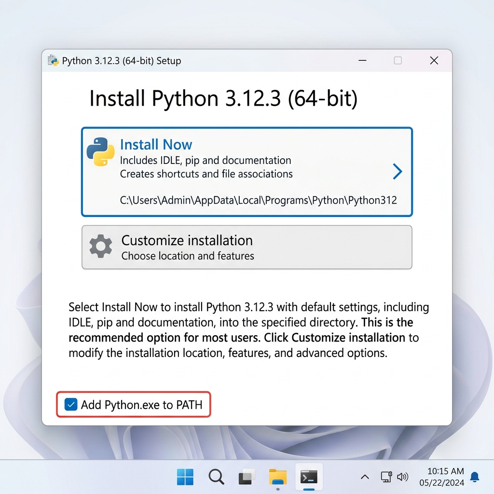
How to Install Python on Windows —
Download, Add to PATH, and Verify
Python installation is complete.
Step 4: Installation
Verification
Let’s make sure Python is working:
Press the Windows Key on your keyboard (the key
with the Windows logo -).
Type cmd and press Enter. This
opens the Command Prompt — a black window where you can
type commands.
In the Command Prompt, type the following exactly and press
Enter:
python --version
You should see a response like:
Python 3.12.3
A successful version string returned by the terminal confirms the
installation status.
If you see an error like “python is not recognized”
— go back to Step 3 and make sure you checked the “Add python.exe to
PATH” box. You may need to uninstall Python (via Windows Settings >
Apps) and reinstall it.
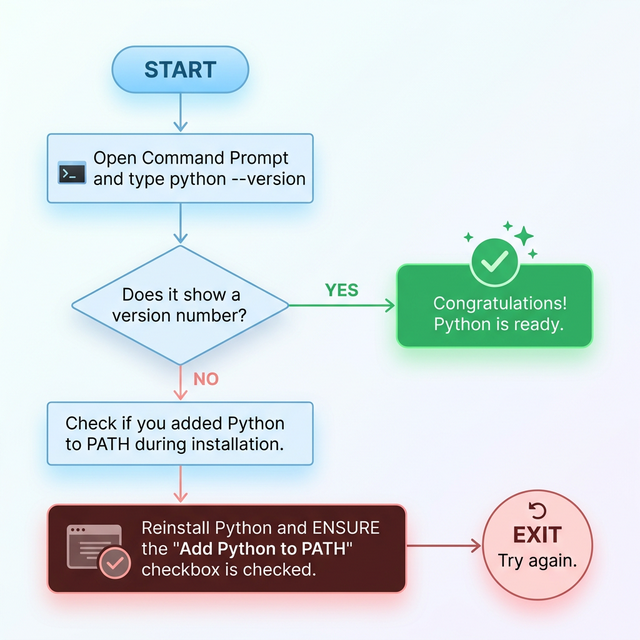
Troubleshooting ‘python is not
recognized’ — A step-by-step flowchart for beginners
Section 2: Visual
Studio Code Configuration
VS Code Requirements
VS Code is the recommended IDE for IT operations scripts, providing:
- Syntax highlighting and code folding. - Integrated terminal and
debugging tools. - Extension support for cloud providers (AWS,
Azure).
Step 1: Download Procedure
Open your browser and go to:
https://code.visualstudio.com/
You will see a big blue button saying “Download for
Windows”. Click it.
This downloads a file like
VSCodeUserSetup-x64-x.xx.x.exe. Wait for the download to
finish.
Step 2: Installation
and PATH Verification
Double-click the downloaded installer file.
A setup wizard will open. Follow these steps:
License Agreement: Select “I accept the agreement”
- Click Next
Select Destination: Leave as default - Click
Next
Select Start Menu Folder: Leave as default - Click
Next
Select Additional Tasks: Check “Add to
PATH”, Check “Register Code as an editor for supported
file types”, Check “Add ‘Open with Code’ action to
Windows Explorer file context menu” - Click
Next
Click Install
When complete, leave “Launch Visual Studio Code” checked and click
Finish.
VS Code will open automatically.
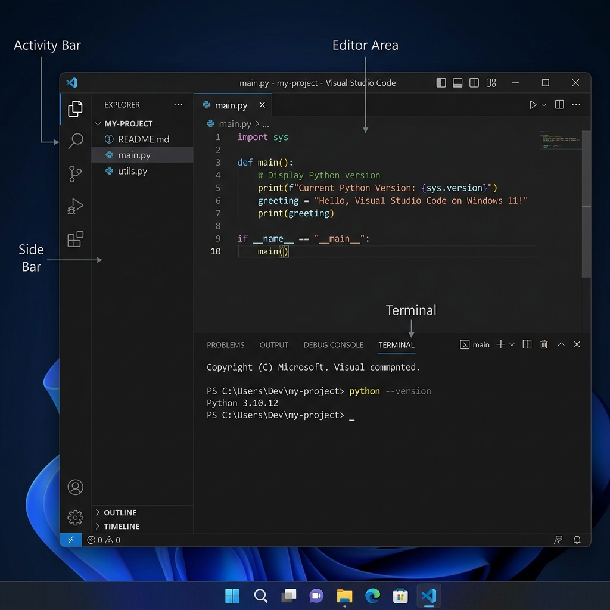
VS Code Interface Tour — Key areas for
beginners: Activity Bar, Extensions, Status Bar, and
Terminal
Step 3: Python Extension
Integration
Enable Python support via the Microsoft extension for IntelliSense
and debugger integration.
Look at the left sidebar in VS Code. You will see icons. Click
the one that looks like four squares (called
Extensions). Or press
Ctrl + Shift + X.
A search bar appears at the top of the sidebar. Type:
Python
The first result should be “Python” by
Microsoft (it will show millions of downloads and a
verified checkmark).
Click the blue Install button next to
it.
Wait a few seconds for it to install.
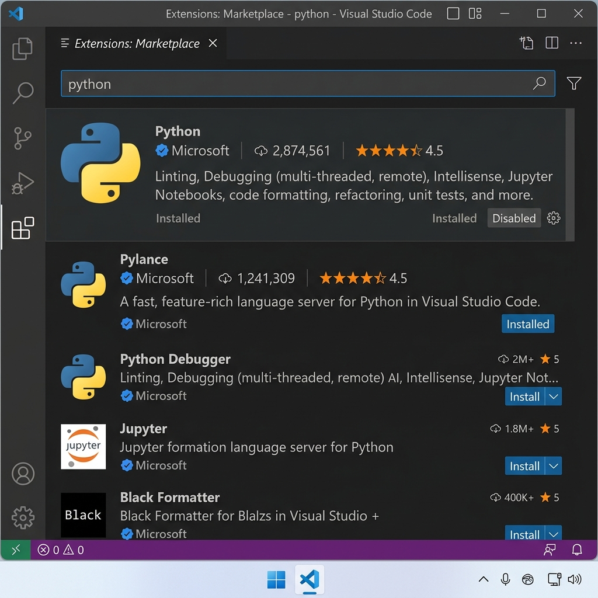
VS Code Python Extensions — Essential
marketplace items for automation engineers
Core Extensions: | Extension Name | Publisher | Why
You Need It | |—————|———–|—————–| | Python | Microsoft | Core Python
support, IntelliSense, debugging | | Pylance | Microsoft | Fast,
feature-rich Python language server | | Python Indent | Kevin Rose |
Fixes Python indentation automatically | | Code Runner | Jun Han | Run
code with a single button click |
Step 4: Workspace
Initialization
Open File Explorer
(Windows Key + E).
Navigate to a location you like (e.g., your Desktop
or Documents).
Right-click in an empty area - New -
Folder - name it PythonProjects.
Go back to VS Code.
Click File in the top menu - Open
Folder - navigate to and select your
PythonProjects folder - Click Select
Folder.
Step 5: Interpreter Selection
Press Ctrl + Shift + P to open the Command
Palette.
Type: Python: Select Interpreter and press
Enter.
Select the version that matches your installed Python, e.g.,
Python 3.12.3.
You will see the Python version appear in the bottom status
bar of VS Code.
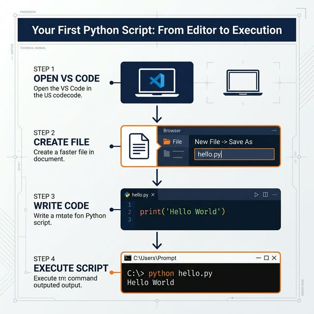
Your First Python Script — From Editor to
Execution Flowchart
Section 3: Initial Script
Execution
Step 1: Script Creation
In VS Code Explorer panel, click the New File icon
next to your folder name.
Name the file hello_world.py and press
Enter.
Step 2: Coding Implementation
In the editor, type:
print("Hello, World!")
Step 3: Script Execution
Press Ctrl + ` to open the built-in terminal, then
type:
python hello_world.py
Press Enter.
Expected Output:
Hello, World!
Initial execution complete.
Syntax Analysis:
print("Hello, World!")
Part
Name
What it Does
print
Built-in Function
Outputs data to the standard output (stdout)
stream
(
Opening Parenthesis
Opens the list of things to send to print
"
Opening Quote
Starts a piece of text (called a string)
Hello, World!
String Content
The actual text you want to display
"
Closing Quote
Ends the string
)
Closing Parenthesis
Closes the function call
Technical Detail: The print() function
is the primary method for debugging and operational logging. Parentheses
encapsulate the arguments passed to the function.
Write a Python program using multiple print() statements
to display your full name, age, hometown, favorite hobby, and your goal
for learning Python.
Assignment 2 — ASCII Art
Use print() to draw a simple triangle shape using
* characters. You will need one print() per
row.
Assignment 3 —
Troubleshoot Intentional Errors
Find and fix the 3 bugs below. Write down each error message Python
gives you and explain what was wrong:
Print("Hello World")print('My name is Rahul)print("I love Python!"
Knowledge Assessment
Q1. What does the .py extension tell your
computer- - A) It is a photo file - B) It is a Python source
code file - C) It is a PowerPoint file - D) It is a text document
Q2. What happens if you forget to check “Add Python to
PATH”- - A) Python installs in the wrong folder - B) Python
will only work in VS Code - C) The command python won’t be
recognized in the terminal - D) Python installs twice
Q3. What is the correct Hello World program- - A)
PRINT("Hello, World!") - B)
print[Hello, World!] - C) print Hello, World!
- D) print("Hello, World!")
Q4. What are the parentheses () used for in
print("Hello")- - A) They are decorations - B)
They enclose the value passed to the print function - C)
They close the file - D) They are part of the text
Q5. Which is the official Python download website- -
A) python.com - B) python.org - C) python.net - D) getpython.com
Technical Interview
Preparation
Interview Q1:
“How do you verify Python is installed correctly on
Windows—
Ideal Answer: Open Command Prompt and type
python --version. If Python is installed and on the PATH,
it responds with the version number (e.g., Python 3.12.3).
An error means Python isn’t installed or wasn’t added to PATH.
Interview Q2:
“What is the purpose of adding Python to the system PATH
variable—
Ideal Answer: PATH is an environment variable
listing directories Windows searches for executables. Adding Python to
PATH lets you type python in any terminal window and have
it work without typing the full installation path each time.
Interview Q3:
“What is the difference between a code editor like VS Code
and an IDE like PyCharm—
Ideal Answer: VS Code is a lightweight, extensible
text editor — you add capabilities via extensions. PyCharm is an
all-in-one IDE pre-loaded with Python-specific tools (debugger,
refactoring, test runner) out of the box. VS Code is faster and more
flexible; PyCharm is heavier but more complete for Python-only work.
Module Summary
Installed Python | Distribution configured and
added to PATH |
Verified Installation | Version check via terminal |
Configured VS Code | Extension suite installed |
Executed Script | print("Hello, World!") |
Analyzed Syntax | Function and argument structure defined |
Operational Insight
“Environment setup is the first hurdle. If you can’t run ‘Hello
World’, you can’t build a cloud. Get the PATH right once, and the rest
is engineering.”
Next: Module 1 — Introduction to Python
Module 01: Introduction to
Python
Interpreter
Architecture, REPL, and Commenting Standards
Module 01 of 32
Objectives
Successful completion of this module includes: - Assessment of
Python’s role in modern infrastructure. - Utilization of the
Read-Eval-Print Loop (REPL) for command testing. - Implementation of
standardized code commenting. - Analysis of sequential code execution
and indentation blocks.
Python’s versatility makes it the primary choice for modern IT
infrastructure.
Python Use Cases in IT Operations —
Automation, Cloud, and Data Processing
Python is an interpreted, high-level, general-purpose programming
language. Developed by Guido van Rossum and released in 1991, it has
become a standard for system administration and backend automation.
Operational Features
Feature
Technical Impact
High-Level Syntax
Reduces development time; syntax approximates technical
English.
Portability
Compatible with Linux, Windows, macOS, and major Cloud
providers.
Library Ecosystem
Extensive standard library for networking, file I/O, and system
calls.
Enterprise Integration
Optimized for large-scale automation (Google, AWS, Azure).
The Python REPL (Interactive
Shell)
REPL stands for Read-Eval-Print
Loop. It’s a live Python session where you type one line, press
Enter, and Python immediately responds.
The REPL provides an interactive environment for testing code
snippets without requiring a saved file. Each input is read and
evaluated immediately.
How to Open the REPL:
Open Command Prompt (Windows Key - type
cmd - Enter)
Type python and press Enter
You’ll see >>> — the prompt, Python is waiting
for you
Try These in the REPL:
>>>2+24>>>print("Python is awesome!")Python is awesome!>>>10*552>>> exit()
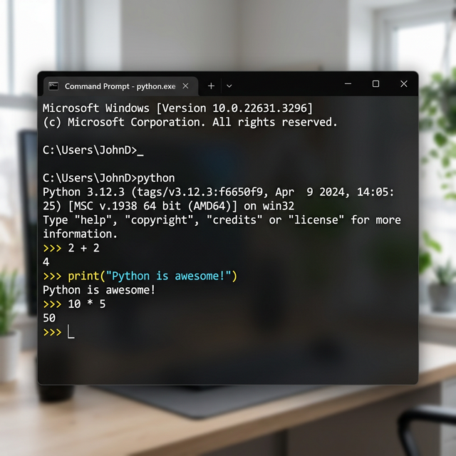
Interactive Python REPL Session —
Real-time feedback in CMD
Comments: Documentation
within Code
A comment is a line Python completely ignores — it
exists only for humans to read.
Comments are lines ignored by the interpreter. They are used for code
documentation and temporary deactivation of logic.
Single-Line Comment
# This is a comment. Python ignores this line entirely.print("Hello!") # This comment explains the print statement
Syntax Breakdown:
# This is a comment
Part
Meaning
#
Hash symbol — tells Python “ignore everything after me on this
line”
This is a comment
Free-form text for humans — can be anything
Multi-Line Comment
"""This is a multi-line comment.It can span as many lines as you want.Python stores it as a string but it has no effect on execution."""print("This line runs normally.")
Part
Meaning
""" (opening)
Three double-quotes — opens a multi-line string
Middle text
Comment content, any number of lines
""" (closing)
Three double-quotes — closes the string
Code Execution Flow
Python reads your .py file from top to
bottom, one line at a time:
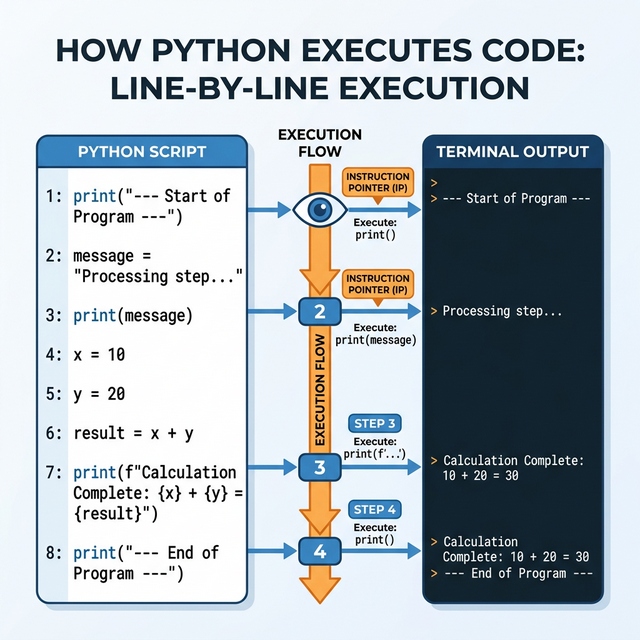
How Python Executes Code — Line-by-Line
Execution Flow
Line 1 runs first
Line 2 runs second
Line 3 runs third
Top-to-Bottom Execution Flow — How Python
reads and executes code line-by-line
Execution Note: Python processes files sequentially.
Logical ordering is required to ensure dependencies are initialized
before use.
Indentation: Scope Definition
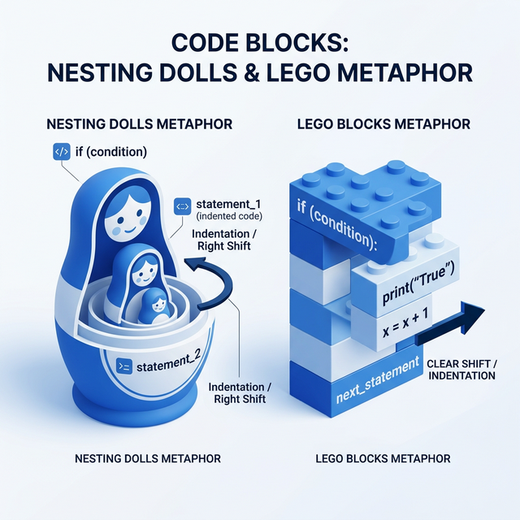
Python Indentation Standards — Block
structure and logical flow
Indentation (the spaces at the beginning of a line)
is part of the language syntax, not just style. It
defines which lines belong to which block.
# Correct:ifTrue:print("This is indented — it belongs to the if block")# WRONG — will cause an IndentationError:ifTrue:print("This has no indentation — Python will crash!")
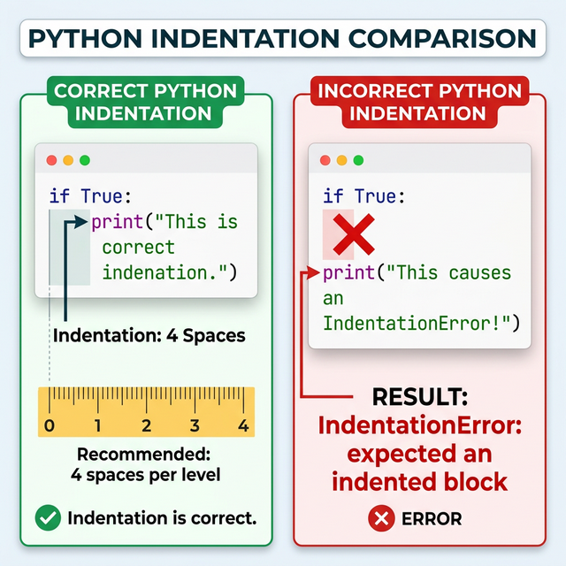
Indentation Logic Comparison — Correct (4
spaces) vs Incorrect (No indentation) code blocks
Scope Rule: Indentation defines logical blocks.
Lines sharing the same indentation level belong to the same execution
scope. Incorrect indentation results in an
IndentationError.
Rule: Use 4 spaces per indentation
level. VS Code handles this automatically when you press Tab.
Technical Exercise:
System Metadata Script
# =============================================# PROJECT: About Me# =============================================print("========================================")print(" ABOUT ME - PYTHON PROGRAM ")print("========================================")print("Hello! My name is Rahul Nethikar.")print("I am learning Python programming.")print("My favorite quote:")print('"The journey of a thousand miles begins with one step."')print("========================================")print("Thank you for reading!")
Syntax Breakdown for
'"The journey..."': - Outer single quotes
'...' wrap the string - Inside " characters
are printed literally - This is one way to include quote marks inside a
string
Assignments
Q1. What does REPL stand for- - A) Run Every Python
Line - B) Read-Eval-Print Loop - C) Repeat Execute Print Logic - D)
Runtime Engine for Python Language
Q2. How does Python mark a line as a comment- - A)
// at the start - B) /* */ around text - C)
# at the start - D) -- at the start
Q3. In what order does Python execute lines in a
file- - A) Bottom to top - B) Random order - C) Top to bottom,
line by line - D) Alphabetically
Q4. What is Python’s indentation rule- - A) Only for
aesthetics - B) Mandatory — defines code blocks syntactically - C) Must
use tabs, never spaces - D) Only matters inside functions
Q5. Who created Python- - A) Bill Gates - B) Linus
Torvalds - C) James Gosling - D) Guido van Rossum
Technical Evaluation
Preparation
Q1: “Is Python interpreted
or compiled—
Ideal Answer: Python is interpreted
— code is read and executed line by line at runtime. Compiled languages
(like C++) translate all code to machine code before execution. Python
is more interactive and faster to develop in, but generally slower for
heavy computation. Python does compile to bytecode internally (.pyc
files), but this is transparent to the developer.
Q2: “What is PEP 8—
Ideal Answer: PEP 8 is Python’s official style guide
(PEP = Python Enhancement Proposal). It defines conventions: 4-space
indentation, 79-character line limit, snake_case for variables,
PascalCase for classes. It matters because code is read far more than
it’s written — consistent style makes collaboration and maintenance far
easier.
Q3:
“What is the difference between Python 2 and Python 3—
Ideal Answer: Python 2 reached end-of-life on
January 1, 2020. Key differences: print was a statement in
Python 2 (print 'hello') vs. a function in Python 3
(print('hello')). Python 3 handles Unicode natively,
introduced f-strings, type hints, async/await. Always use
Python 3 for any new project.
Module 02: Variables & Data
Types
Memory Allocation and
Object Typing
Module 02 of 32
Objectives
Module competency requires: - Variable initialization and value
assignment. - Analysis of core object types: int,
float, str, bool. - Utilization
of the type() built-in function for runtime inspection. -
Assessment of dynamic typing behavior.
Variable Initialization
A variable is a symbolic name that references an object in memory.
Assigning a value to a variable establishes a binding between the name
and the data object.
In Python, you create a variable by giving it a name and assigning a
value using =:
name ="Rahul"age =25height =5.9is_student =True
Syntax Breakdown:
name = "Rahul"
Part
Name
What it Does
name
Variable name
The label on your box; you choose this
Space
For readability; Python ignores extra spaces
=
Assignment operator
“Store the value on the right INTO the variable on the left”
"Rahul"
String value
The data being stored — text surrounded by quotes
Assignment Note: The = operator is used
for assignment, not equality. It binds the value on the right-hand side
to the identifier on the left-hand side. Equality checking is performed
via the == operator (see Module 3).
Identifier Naming
Conventions
Rule
Example
Start with a letter or underscore
age, _score
Contain letters, numbers, underscores
user_age_2
Cannot start with a number
2things
Cannot have spaces
my name
Cannot use Python keywords
if, for,
while
Use snake_case (Python convention)
first_name, total_price
Core Data Types
Python’s standard library includes four primary scalar data
types.
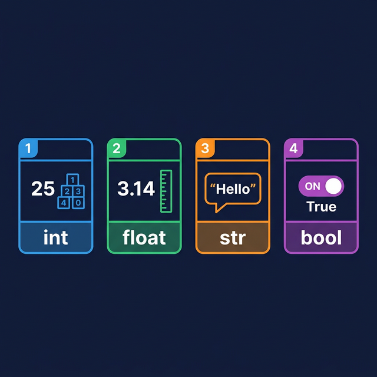
Python Core Data Types — Int, Float,
String, and Boolean
1. int (Integer)
Used for whole numbers without fractional components. Operational
examples include server port numbers or process IDs.
age =25year =2026temperature =-10bank_balance =0
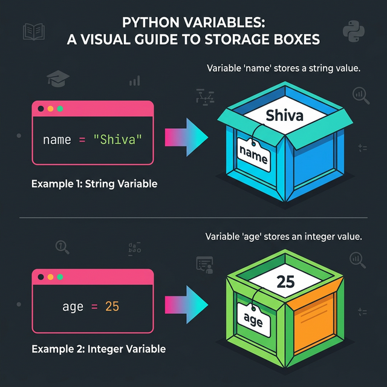
Variable Storage Logic — Understanding
the “labeled box” concept in memory
2. float (Floating
Point)
Used for numbers requiring decimal precision. Operational examples
include CPU load averages or memory utilization percentages.
height =5.9price =299.99pi =3.14159tax_rate =0.18
3. str (String)
Sequence of characters enclosed in quotes. Used for storing log
entries, hostnames, or file paths.
first_name ="Rahul"greeting ='Hello, World!'sentence ="I have 3 cats"# Numbers inside quotes are still stringsempty =""# An empty string
Analogy: A string is like a necklace of
characters. Each letter, space, or symbol is a bead, strung
together in order.
Syntax Breakdown:
greeting = 'Hello, World!'
Part
Meaning
greeting
Variable name
=
Assignment
'
Opening single quote — starts the string
Hello, World!
The text content
'
Closing single quote — ends the string
You can use either single (') or double (")
quotes. Always close what you open.
3. str (String)
Sequence of characters enclosed in quotes. Used for storing log
entries, hostnames, or file paths.
first_name ="Rahul"greeting ='Hello, World!'sentence ="I have 3 cats"empty =""
4. bool (Boolean)
Binary value representing truth states: True or
False. Used for conditional logic and status flags (e.g.,
service status).
Logic Note: Boolean literals must be capitalized.
true or false (lowercase) will trigger a
NameError. Python is case-sensitive regarding logical
constants.
Object Inspection using
type()
You can ask Python “what kind of data is this— using
type():
Built-in function that returns the type of a value
(
Opens type’s argument
age
The variable to inspect
)
Closes type’s argument
)
Closes print’s argument
This is called nesting functions — one function
inside another. Python evaluates the inner one first.
Dynamic Typing Analysis
Python employs dynamic typing, allowing a single identifier to
reference objects of different types during execution.
Python is dynamically typed — a variable can hold
different types at different times:
x =10# x is an intprint(type(x)) # <class 'int'>x ="hello"# Now x holds a stringprint(type(x)) # <class 'str'>x =3.14# Now x holds a floatprint(type(x)) # <class 'float'>
====== RESOURCE REPORT ======
Host : db-server-01
Uptime : 45
CPU : 12.5
Healthy : True
Type Host : <class 'str'>
Type CPU : <class 'float'>
=============================
Assignments
Assignment 1:
Infrastructure Variables
Create identifiers for a server instance: server_name
(str), ram_gb (int), storage_tb (float), and
is_active (bool). Print the value and type()
for each identifier.
Assignment 2: Log Entry
Simulation
Initialize variables for a log file path (str), a response time
(float), and an error flag (bool). print a structured log summary using
these variables.
Assignment 3 —
Variable Reassignment Experiment
Start with x = 100. Print it and its type. Reassign to
x = "Python", print again. Reassign to
x = False, print again. Write a comment above each step
explaining what is happening and why Python allows it.
Knowledge Assessment
Q1. What symbol assigns a value to a variable in
Python- - A) == - B) := - C)
= - D) ->
Q2. Which is a valid Python variable name- - A)
2myvar - B) my-var - C) my var -
D) my_var
Technical Interview
Preparation
Q1:
“What is the difference between statically and dynamically typed
languages—
Ideal Answer: Statically typed languages (Java, C#)
require declaring a variable’s type at creation — it cannot change.
Dynamically typed languages like Python infer type from the assigned
value, and it can change freely. Python’s dynamic typing speeds up
development but can cause type-related bugs that statically typed
languages catch at compile time.
Q2:
“What is the difference between int and float-
When would you use each—
Ideal Answer:int stores whole numbers
(no decimal), e.g., 5, -3. float
stores decimal numbers, e.g., 3.14, -0.5. Use
int for countable, indivisible things (students, pages).
Use float for measurements (price, temperature, weight).
Note: floats have precision limitations
(0.1 + 0.2 = 0.30000000000000004) — for financial math, use
Python’s decimal module.
Q3: “What is None in
Python—
Ideal Answer:None is a special keyword
representing the absence of a value — its own type:
NoneType. Used when a variable exists but has no meaningful
value yet, or when a function returns nothing. Always use
is None rather than == None because
is checks object identity, which is the correct comparison
for None.
Operational Insight
“Variables aren’t just labels; they are the memory pointers of your
application. Professional code uses clear, snake_case names that reveal
intent.”
Module 03: Operators &
Expressions
Computational
Logic, Comparison Operations, and Boolean Control
Module 03 of 32
Objectives
Module competency requires: - Implementation of arithmetic operators
for data processing. - Application of comparison operators for value
validation. - Utilization of logical operators for complex conditional
gating. - Analysis of operator precedence in nested expressions. -
Utilization of compound assignment operators.
Operators in Python
Operators are functional symbols used to perform computations on
operands. An operator combined with operands constitutes an expression,
which the interpreter evaluates to a single value.
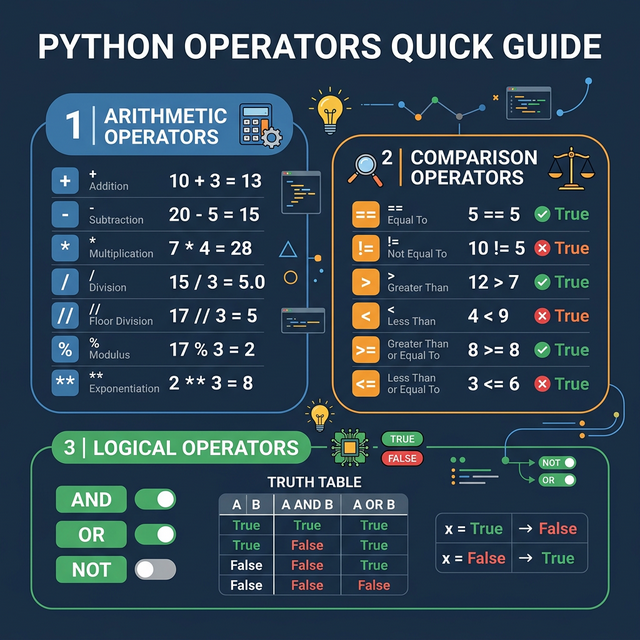
Python Operators Overview — Arithmetic,
Comparison, and Logic
The values on either side of an operator are called
operands. Together, an operator + operands form an
expression.
5 + 3
- -
operand operand
-
operator
Arithmetic Operators
These perform mathematical calculations — just like a calculator.
Arithmetic operators facilitate mathematical transformations.
Operational applications include calculating memory offsets, disk space
availability, or network throughput.
Operator
Name
Example
Result
+
Addition
10 + 3
13
-
Subtraction
10 - 3
7
*
Multiplication
10 * 3
30
/
Division
10 / 3
3.3333...
//
Floor Division
10 // 3
3
%
Modulus (Remainder)
10 % 3
1
**
Exponentiation
2 ** 3
8
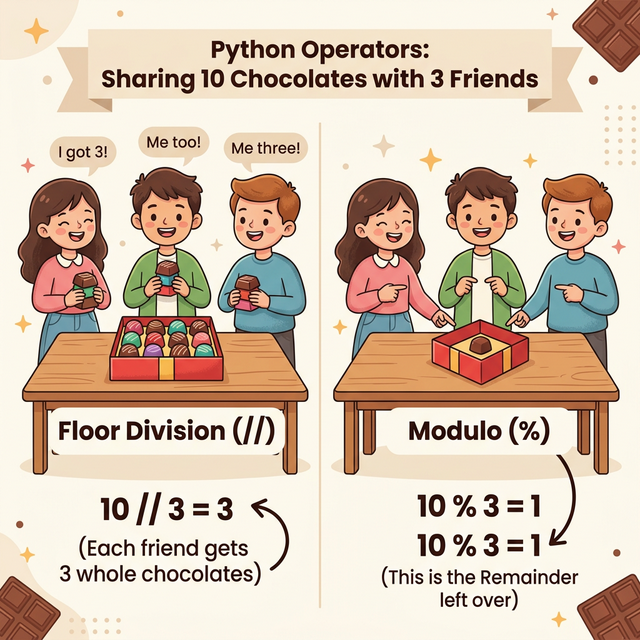
Modulo and Floor Division Logic —
Understanding remainders in automation
a =10b =3print(a + b) # 13 — additionprint(a - b) # 7 — subtractionprint(a * b) # 30 — multiplicationprint(a / b) # 3.3333333333333335 — true division, always returns floatprint(a // b) # 3 — floor division, drops the decimal (rounds DOWN)print(a % b) # 1 — remainder after dividing (10 = 3×3 + 1)print(a ** b) # 1000 — 10 to the power of 3
Syntax Breakdown:
print(a // b)
Part
Meaning
print
Display function
(
Opens function call
a
Left operand — the variable holding 10
//
Floor division operator — divide and drop the decimal part
b
Right operand — the variable holding 3
)
Closes function call
Operational Example (// and
%): If a script processes 10 tasks across 3
concurrent threads, 10 // 3 = 3 represents the baseline
tasks per thread, while 10 % 3 = 1 represents the remaining
tasks to be queued sequentially.
Comparison Operators
Comparison operators compare two values and always return either
True or False.
Comparison operators assess the relationship between two operands,
returning a boolean True or False. They are
foundational to control flow and data validation.
Operator
Meaning
Example
Result
==
Equal to
5 == 5
True
!=
Not equal to
5 != 3
True
>
Greater than
10 > 3
True
<
Less than
3 < 10
True
>=
Greater than or equal to
5 >= 5
True
<=
Less than or equal to
4 <= 3
False
x =10y =5print(x == y) # False — 10 is not equal to 5print(x != y) # True — 10 is not equal to 5print(x > y) # True — 10 is greater than 5print(x < y) # False — 10 is not less than 5print(x >=10) # True — 10 is equal to 10 (>= includes equality)print(y <=3) # False — 5 is not less than or equal to 3
Syntax Breakdown:
print(x == y)
Part
Meaning
print
Display to screen
(
Opens function
x
Left operand — value is 10
==
Equality comparison — checks if left equals right
y
Right operand — value is 5
)
Closes function
Critical mistake beginners make:
x =5# Assignment: "store 5 in x"x ==5# Comparison: "is x equal to 5— - True
Single = assigns. Double == compares. Never
confuse them.
Logical Operators
Logical operators combine multiple comparisons into one bigger
condition.
Logical operators consolidate multiple boolean expressions into
localized conditional gates. - and: Evaluates to
True only if all expressions are true. - or:
Evaluates to True if at least one expression is true. -
not: Inverts the boolean value.
Operator
Meaning
Example
Result
and
Both must be True
True and False
False
or
At least one must be True
True or False
True
not
Flips True to False, False to True
not True
False
age =20has_id =Truehas_ticket =False# 'and' — both conditions must be Trueprint(age >=18and has_id) # True and True - Trueprint(age >=18and has_ticket) # True and False - False# 'or' — at least one condition must be Trueprint(has_id or has_ticket) # True or False - Trueprint(age <18or has_ticket) # False or False - False# 'not' — flips the booleanprint(not has_ticket) # not False - Trueprint(not has_id) # not True - False
Initialize variables for total_disk_space_gb and
used_disk_space_gb. Calculate the percentage utilized and a
boolean flag alert_required that evaluates to
True if utilization exceeds 85% or if remaining space is
less than 5GB.
Assignment 2 — Even or Odd
Detector
Assign any integer to a variable number. Use the
% (modulus) operator to check if the number is even or odd.
Print both number % 2 and whether
number % 2 == 0. Explain in comments what the result
proves.
Assignment 3 —
Compound Expression Evaluator
Without running the code first, predict the output of each line
below. Then run the code and check if you were right. Write a comment
for any you got wrong explaining why:
Q1. What does the // operator do in
Python- - A) Regular division, returns a float - B) Floor
division — divides and drops the decimal - C) Calculates the remainder -
D) Raises to a power
Q2. What is the result of 10 % 3- - A)
3 - B) 3.33 - C) 1 - D) 0
Technical Interview
Preparation
Q1: “What is
the difference between / and // in
Python—
Ideal Answer: > “/ is true division
— it always returns a float, even if the result is a whole
number (e.g., 10 / 2 - 5.0). //
is floor division — it divides and rounds down to the
nearest whole integer, always returning an int when both
operands are integers (e.g., 10 // 3 - 3,
7 // 2 - 3). Floor division is useful for
things like splitting items into groups where you can’t have
fractions.”
Q2:
“What does the modulus operator % do, and give a real-world
use case.”
Ideal Answer: > “The % operator
returns the remainder after integer division. For
example, 10 % 3 - 1 because 10 divided by 3 is
3 with a remainder of 1. Real-world uses: (1) Even/odd
checking — n % 2 == 0 means n is even. (2)
Cycling through values —
index % list_length keeps an index within bounds, useful
for circular buffers or carousels. (3) Time
calculations — minutes % 60 gives remaining
minutes after extracting hours.”
Ideal Answer: > “Python uses
short-circuit evaluation for and and
or. For and, if the left side is
False, Python doesn’t evaluate the right side — because the
overall result must be False regardless. For
or, if the left side is True, Python skips the
right side — because the result must be True regardless.
This matters for performance and for safety: for example,
if list and list[0] == 'x' — if list is empty
(falsy), Python never evaluates list[0], avoiding an
IndexError.”
Module 04: User Input &
Type Casting
Data
Ingestion, String Buffers, and Type Conversion
Module 04 of 32
Objectives
Successful completion of this module includes: - Implementation of
the input() function for data acquisition. - Analysis of
the default string return type of the input() buffer. -
Execution of type casting: int(), float(), and
str() conversions. - Development of a functional data
transformation script. - Mitigation of ValueError
exceptions during type conversion.
The values on either side of an operator are called
operands. Together, an operator + operands form an
expression.
Data Acquisition Workflow
Modern automation requires robust data ingestion patterns.
Interactive scripts utilize the input-process-output cycle
to transform user-provided parameters into executable logic.
Python Input and Type Casting
Flowchart
graph TD
A[Initialization] --> B[Prompt Display]
B --> C[Stdin Read]
C --> D[String Buffer Allocation]
D --> E{Numeric Transformation Required-}
E -- Yes --> F[Type Casting: int/float]
E -- No --> G[String Object Retention]
F --> H[Data Processing]
G --> H
H --> I[Stdout Write]
The input() Function
The input() function pauses script execution and waits
for data from the standard input stream (stdin).
Input Buffer Persistence
The input() function inherently returns a
str object. Even when numeric characters are
provided, the interpreter treats them as text.
system_load =input("Enter current system load: ")print(type(system_load)) # Returns: <class 'str'>
Type Casting Strategy
Type casting is the explicit conversion of one data type into
another. This is necessary for performing arithmetic operations on
ingested data or formatting numeric output for string concatenation.
Type Conversion Standards
int() - Transforms compatible strings or floats to
integers.
float() - Transforms compatible strings or integers to
floating-point objects.
str() - Transforms numeric types into string
objects.
Resolution: Convert to float before
casting to int if truncation is required.
2. Concatenating Numbers and
Strings
You cannot “add” a string and a number without converting:
age =25print("I am "+ age +" years old.") # TypeError# Fix:print("I am "+str(age) +" years old.")# OR even better (f-strings):print(f"I am {age} years old.")
Visual Studio Code Debugging
For self-study practitioners, mastering the debugger is the single
most important skill for independence.
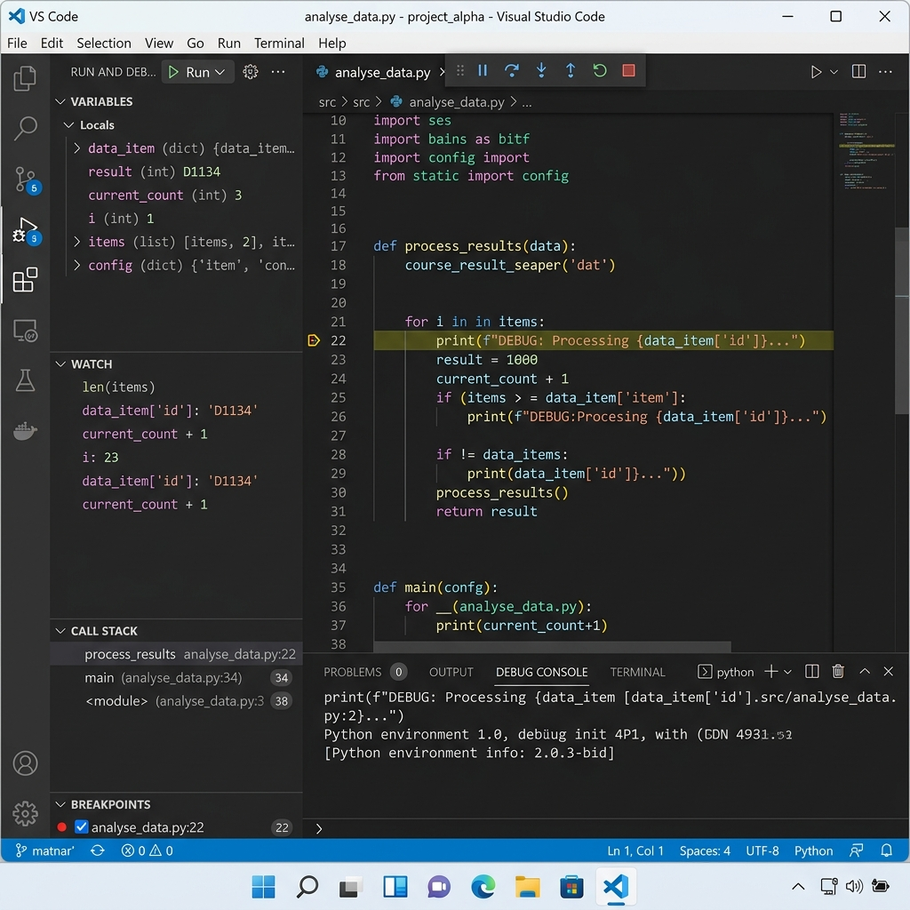
VS Code Debugger Guide — Breakpoints,
Variables, and Stepping Control
Operational Insight
“Input and casting are where your scripts first encounter the ‘Real
World’ — and the real world provides bad data. Never trust user input
without verification. We will revisit this in the Error Handling module,
but for now, always think about what happens if the user types ‘ABC’
into your port number field.” ***
Request user input for server_hostname,
cpu_count, uptime_seconds, and
is_production (True/False). - Calculate
uptime_days. - Output a structured system report using
string formatting.
Assignment 2: Storage Unit
Converter
Accept user input for a file size in Gigabytes (GB). - Perform
conversions to Megabytes (MB) and Terabytes (TB). - Print the results as
float values.
Knowledge Assessment
str
float
int
input
Technical Evaluation
Preparation
Q1:
“Why does Python require explicit type casting for inputs—
Ideal Answer: > “Python is a strongly typed
language, meaning it won’t automatically assume a string containing
numbers should be treated as a number. The input() function
returns a string to be safe and versatile (since a user could type
letters, symbols, or numbers). Requiring explicit casting (like
int() or float()) forces the developer to
define exactly how the data should be handled, preventing accidental
errors like adding a name to a salary.”
Q2: “What is the
difference between str(10) and 10—
Ideal Answer: > “10 is an integer
literal, used for mathematical calculations. '10' (the
result of str(10)) is a string literal, used for text
manipulation. You can use '10' * 3 to get
'101010', but 10 * 3 gives 30.
Casting allows us to move between these two ‘worlds’ depending on
whether we need to calculate or display.”
Q3:
“How can you handle a scenario where a user enters ‘abc’ when you expect
a number—
Ideal Answer: > “If we use
int(input()) and the user enters text, Python will throw a
ValueError. To handle this professionally, we use a
try...except block. We ‘try’ the conversion, and if it
fails, the ‘except’ block catches the error and allows us to print a
friendly message like ‘Invalid input, please enter a number’ instead of
letting the program crash.”
Module 05: Strings In Depth
String
Buffer Management, Slicing, and Formatting Standards
Module 05 of 32
Objectives
Module competency requires: - Management of string objects and
character sequences. - Implementation of indexing and slicing for data
extraction. - Utilization of string methods for data normalization and
parsing. - Application of f-string literals for standardized output
formatting. - Management of escape sequences within character buffers. -
Development of a system log parsing utility.
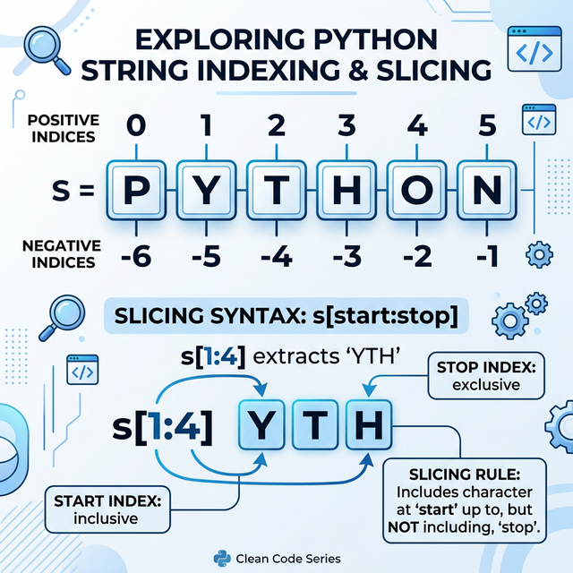
String Indexing & Slicing — Visual
guide to positive/negative indices and slicing logic
String Logic
In Python, a String is a sequence of characters stored as an
immutable object. Immutability ensures that the underlying character
buffer cannot be modified post-initialization; transformations require
the creation of new string objects. Operational examples include
processing hostnames, log entries, or file paths.
Creating Strings:
single_quote ='Hello'double_quote ="Python"triple_quote ="""This is amulti-line string."""# Used for long paragraphs or documentation
Indexing and Slicing
Since a string is an ordered sequence, Python assigns every character
a “position number” called an Index.
1. Indexing (Accessing one
character)
Forward Indexing: Starts at 0.
Backward (Negative) Indexing: Starts at
-1.
P
y
t
h
o
n
0
1
2
3
4
5
-6
-5
-4
-3
-2
-1
text ="Python"print(text[0]) # Output: 'P'print(text[-1]) # Output: 'n' (The last character)
2. Slicing (Accessing a range)
Syntax: string[start : stop : step] -
start: Index where the slice begins (inclusive). -
stop: Index where the slice ends
(exclusive — it stops just before this). -
step: Optional; how many characters to jump.
Python provides “built-in tools” (methods) to modify how text
looks.
Method
Description
Example
.upper()
Converts to CAPITAL LETTERS
"hi".upper() -> "HI"
.lower()
Converts to small letters
"HI".lower() -> "hi"
.strip()
Removes leading/trailing spaces
" hey ".strip() -> "hey"
.replace(old, new)
Swaps text
"Java".replace("J", "P") -> "Pava"
.split(sep)
Breaks string into a List
"A,B,C".split(",") -> ["A", "B", "C"]
.count(x)
Counts occurrences
"egg".count("g") -> 2
String Formatting (f-strings)
The modern and fastest way to inject variables into text is using
f-strings (formatted string literals).
# Standard f-stringsprint(f"Server {name} reported status: {score}%")
Note: Just put an f before the starting quote and
use {} for variables.
Escape Characters
What if you want to put a quote inside a quote- Or start a new
line-
\n — New Line
\t — Tab space
\' — Single Quote
\" — Double Quote
\\ — Backslash
print("Line 1\nLine 2")print("He said, \"Python is awesome!\"")
Technical Project: System
Log Parser
Develop a script to normalize and format raw system log data.
# ============================================# PROJECT: System Log Normalizer# ============================================# Raw input simulationraw_log =" ERROR: Connection timeout on server: DB-PROD-01 at 12:00:05 "# Data Normalizationclean_log = raw_log.strip()alert_type = clean_log.split(":")[0].upper()server_details = clean_log.split(":")[1].split("at")[0].strip()# Formatted Outputformatted_report =f"""------------------------------------------LOG STATUS: {alert_type}HOST : {server_details}CLEAN LOG : {clean_log}------------------------------------------"""print(formatted_report)
Assignments
Assignment 1: Hostname
Invalidator
Accept user input for a hostname. - Print the hostname length. -
Print a masked version of the hostname where all characters except the
first and last are replaced with -.
Assignment 2: Access Log
Filter
Accept a raw CSV-style log string (e.g.,
2026-03-17,DB-SRV,ACTIVE). - Use .split() to
extract the service status. - Print the status in uppercase.
Knowledge Assessment
Q1. What is the result of
"Python"[1:4]- - A) Pyt - B) yth - C) ytho - D)
pyth
Q2. Which method removes spaces from both ends of a
string- - A) clean() - B) cut() - C)
strip() - D) split()
Q3. How do you reverse a string s using
slicing- - A) s[0:-1] - B) s[1:0] -
C) s[::-1] - D) s[-1:0]
Q4. What character is used to start an f-string- -
A) s - B) f - C) r - D)
$
Q5. True or False: Strings in Python are mutable. -
A) True - B) False (They are immutable)
Technical Evaluation
Preparation
Q1:
“What is the difference between a shallow copy and a string slice—
Ideal Answer: > “In Python, strings are
immutable. When you take a slice like s[1:5], Python
creates an entirely new string object in memory containing those
characters. It doesn’t modify the original string.”
Q2: “When would you use
split() vs join()—
Ideal Answer: > “split() is used to
turn a single string into a List of substrings (e.g.,
breaking a sentence into words). join() is the opposite; it
takes a List of strings and merges them into one single string with a
specific separator (like a comma or space) between them.”
Q3: “What is string
interning in Python—
Ideal Answer: > “String interning is an
optimization where Python stores only one copy of certain identical
strings in memory. This saves space and makes comparisons faster (since
it can compare memory addresses instead of character-by-character). It
usually happens automatically for short, constant strings.”
Control
Flow, Boolean Evaluation, and Branching Logic
Module 06 of 32
Objectives
Module competency requires: - Critical analysis of Boolean
expressions. - Implementation of if, elif, and
else constructs for control flow. - Management of nested
conditional branching. - Application of logical operators
(and, or, not) for compound
logic. - Utilization of the Ternary Operator for localized logic. -
Development of a multi-parameter health monitoring script.
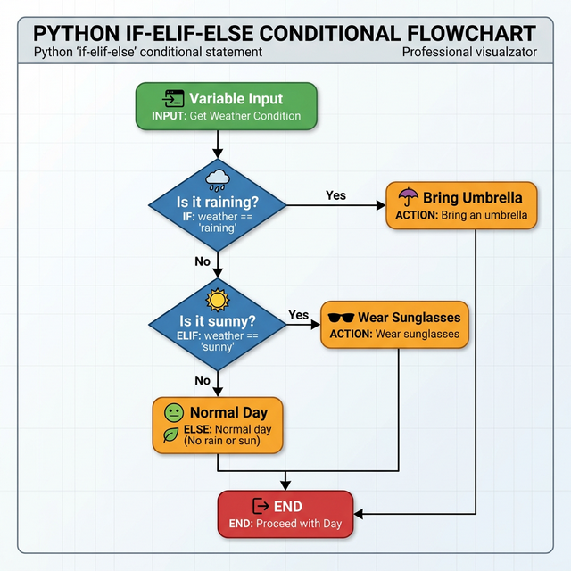
Logic Flowchart — How if-elif-else
statements evaluate conditions in sequence
Flow Control Overview
Conditional statements allow a program to execute specific code
blocks based on the evaluation of boolean expressions. This branching
logic is essential for managing dynamic operational environments—such as
server-side permissions, infrastructure scaling, and automated
alerting.
The if Statement
The if statement evaluates a condition. If the condition
is True, the code inside the block runs.
age =20if age >=18:print("You are an adult.")print("You can vote!") # Notice the indentation!
Indentation Constraints
Python utilizes whitespace to define executable blocks. Code
belonging to a conditional branch must be consistently indented. Failure
to maintain uniform indentation results in an
IndentationError.
Multi-Branch Logic
(elif and else)
What if the first condition is False- We use
elif (else if) for more checks, and else as a
final fallback.
Need a simple if...else on one line- The Ternary
Operator is your best friend.
Syntax:output_if_true if condition else output_if_false
num =10status ="Even"if num %2==0else"Odd"print(status) # Output: Even
Technical
Project: Service Health Monitoring Tool
Simulate an automated threshold monitor for localized system health
reporting.
# ============================================# PROJECT: Automated Health Monitor# ============================================# Step 1: Collect Telemetryserver_id =input("Enter server identifier: ").upper()cpu_usage =float(input("Enter CPU utilization %: "))disk_usage =float(input("Enter Disk utilization %: "))# Step 2: Gated Logical Evaluationif cpu_usage >100or cpu_usage <0:print("Error: Invalid telemetry data received.")else:if cpu_usage >=90or disk_usage >=95: status ="CRITICAL" alert_level ="P1"elif cpu_usage >=75or disk_usage >=80: status ="WARNING" alert_level ="P2"else: status ="HEALTHY" alert_level ="NONE"print("-----------------------------------")
Assignments
Assignment 1: Request
Status Classifier
Accept an HTTP response code (e.g., 200, 404, 500). - Categorize as
“Success” (200-299), “Client Error” (400-499), or “Server Error”
(500+).
Assignment 2: Access Tier
Optimization
Accept a user’s subscription level and data usage. - If usage >
50GB and tier is “FREE”, output “Throttling Required”. - Otherwise,
output “Standard Throughput Enabled”.
Assignment 3 — Leap Year
Checker
A year is a leap year if: - It is divisible by 4. -
BUT if it’s divisible by 100, it must also be divisible
by 400. Write a program to check if a year is a leap year.
Knowledge Assessment
Q1. Which keyword is used for the “fallback” if all other
conditions fail- - A) elif - B) if - C) else - D) stop
Q2. What is the result of
(True or False) and not(False)- - A) False - B)
True - C) None - D) Error
Q3. What will happen if you don’t indent code inside an
if statement- - A) It runs normally - B) It raises
an IndentationError - C) It is ignored - D) It raises a
ValueError
Q4. What is the symbolic shortcut for elif in
some other languages, which Python combines into one word- - A)
else if - B) elif - C) ifelse - D) case
Q5. When using and, what happens if the first
condition is False- - A) Python checks the second
condition - B) Python skips the second condition (Short-circuiting) - C)
The program crashes - D) It depends on the else block
Technical Evaluation
Preparation
Q1: “What is
short-circuit evaluation in Python—
Ideal Answer: > “Short-circuiting happens with
and and or. In an and expression,
if the first part is False, the whole thing must be
False, so Python doesn’t even look at the second part. In
an or expression, if the first part is True,
the whole thing is True, so the second part is skipped.
This makes programs slightly faster and prevents errors in the second
condition.”
Q2:
“Can you use multiple else blocks for one if
statement—
Ideal Answer: > “No. An if statement
can have multiple elif blocks, but it can only ever have
oneelse block. The else
block acts as the final ‘catch-all’ for anything that didn’t match the
previous conditions.”
Q3: “What is the
difference between == and is—
Ideal Answer: > “== checks for
equality (do they have the same value-).
is checks for identity (are they the exact
same object in memory-). For comparing numbers or strings in conditions,
you should always use ==. is is mostly used
for comparing variables against None.”
Assignment Solution Key
1. Number Classifier
num =int(input("Enter number: "))if num >0: parity ="Even"if num %2==0else"Odd"print(f"Positive and {parity}")elif num <0:print("Negative")else:print("Zero")
2. Cinema Ticket Pricing
age =int(input("Age: "))day =input("Day: ").lower()if age <5: price =0elif5<= age <=12: price =150elif13<= age <=60: price =300else: price =200if day =="wednesday"and price >0: price -=50print(f"Total Price: -{price}")
3. Leap Year Checker
year =int(input("Year: "))if (year %4==0and year %100!=0) or (year %400==0):print("Leap Year")else:print("Not a Leap Year")
Module 07: Iteration
Control - for & while
Automated
Execution, Range Logic, and Loop Control Structures
Module 07 of 32
Objectives
Module competency requires: - Assessment of iteration logic for task
automation. - Implementation of for loops for sequence
traversal. - Implementation of while loops for conditional
execution. - Utilization of loop control flow directives:
break, continue, and pass. -
Analysis and mitigation of infinite loop scenarios. - Development of an
automated connection retry utility.
Iteration Logic
Iteration is the process of executing a block of code repeatedly.
This is essential for managing bulk data operations, such as iterating
through a list of server hostnames, processing log entries, or polling
an API until a specific status is returned.
There are two primary iteration constructs in Python:
definite (for) and indefinite (while)
loops.
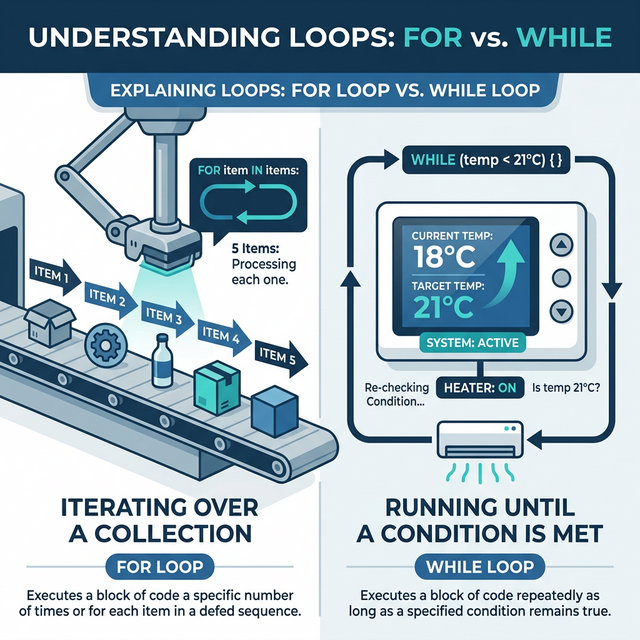
Python Loop Logic — For and While
Flowchart
The for loop &
range()
The for loop is utilized when the number of iterations
is known or can be derived from a sequence. The range()
function is standard for generating a sequence of integers.
Syntax of range():
range(start, stop, step) - start:
(Optional) Defaults to 0. - stop:
(Required) The loop stops before reaching this
number. - step: (Optional) How many numbers to skip.
# Print numbers from 1 to 5for i inrange(1, 6):print(f"Number: {i}")# Print even numbers from 2 to 10for x inrange(2, 11, 2):print(x)
The while loop
A while loop executes as long as a specified boolean
condition remains True. This is used for indefinite
iteration where the end state is determined by runtime data.
count =1while count <=5:print(f"Count is: {count}") count +=1# - CRITICAL: Increment the variable or the loop runs forever!
Loop Overflow: Infinite
Iteration
If a while condition never evaluates to
False, the script will consume CPU cycles indefinitely. In
a terminal environment, these processes must be force-terminated
(standard interrupt: Ctrl + C).
Loop Control Flow
(break, continue, pass)
Sometimes we need to change how a loop behaves midway.
Keyword
Action
break
Stops the loop completely and exits.
continue
Skips the rest of the current turn and jumps to the next
iteration.
pass
Do nothing (used as a placeholder).
# Using breakfor n inrange(1, 10):if n ==5:break# Loop stops at 4print(n)# Using continuefor n inrange(1, 6):if n ==3:continue# Skips 3, prints 1, 2, 4, 5print(n)
Nested Iteration
Loops can be nested to manage multi-dimensional data structures.
Operational examples include scanning nested directory structures or
iterating through multi-region cloud resources.
for row inrange(1, 4):for col inrange(1, 4):print(f"({row}, {col})", end=" ")print() # New line after each row
Accept a starting port and an ending port number. Use a
for loop to print each port number in the range as
“Scanning Port [n]…”.
Assignment 2: Disk Space
Monitor
Write a while loop that takes user input for disk usage
percentage. The loop should stop if input is 0. If usage > 90, print
“Warning: High Disk Usage”. Print the total average of all inputs
provided.
Print numbers from 1 to 50. - If a number is divisible by 3, print
“Fizz”. - If divisible by 5, print “Buzz”. - If divisible by both 3 and
5, print “FizzBuzz”. - Otherwise, print the number itself.
Knowledge Assessment
Q1. Which function is most commonly used with a
for loop to define a range of numbers- - A) loop()
- B) range() - C) count() - D) list()
Q2. When does a while loop stop
running- - A) After 10 iterations - B) When its condition
becomes False - C) Only when break is used - D) When the
program ends
Q3. What does the continue keyword do-
- A) Stops the loop entirely - B) Skips to the next iteration - C)
Restarts the loop from 1 - D) Checks if the condition is True
Q4. What is the output of range(2, 6)-
- A) 2, 3, 4, 5, 6 - B) 2, 3, 4, 5 - C) 0, 1, 2, 3, 4, 5 - D) 2, 4,
6
Q5. How do you stop an infinite loop in the
terminal- - A) Ctrl + Z - B) Alt + F4 - C) Ctrl + C - D) Press
Enter
Technical Evaluation
Preparation
Q1:
“When should you choose a for loop over a
while loop—
Ideal Answer: > “Use a for loop when
the number of iterations is known in advance (e.g., iterating through a
list of 10 items or a fixed range). Use a while loop when
the number of iterations depends on a dynamic condition that changes
during execution (e.g., waiting for specific user input or a server
response).”
Q2:
“What happens if you forget to update the loop variable in a
while loop—
Ideal Answer: > “The condition will remain
True forever, causing an ‘infinite loop’. This will consume
CPU resources and make the program unresponsive until it is manually
terminated.”
Q3: “Can a loop have
an else block in Python—
Ideal Answer: > “Yes! A loop’s else
block runs only if the loop completed naturally (i.e., it didn’t hit a
break statement). This is very useful for searching for an
item; if you find it and break, the else block
won’t run, letting you know the search failed if it does
run.”
Assignment Solution Key
1. Multiplication Table
num =int(input("Enter number: "))for i inrange(1, 11):print(f"{num} x {i} = {num * i}")
2. Sum of Evens
total =0whileTrue: num =int(input("Enter number (0 to stop): "))if num ==0:breakif num %2==0: total += numprint(f"Sum of even numbers: {total}")
3. FizzBuzz
for i inrange(1, 51):if i %3==0and i %5==0:print("FizzBuzz")elif i %3==0:print("Fizz")elif i %5==0:print("Buzz")else:print(i)
Module 08: Comprehensions
Memory-Efficient
Iteration and Declarative Data Transformation
Module 08 of 32
Objectives
Module competency requires: - Assessment of Pythonic coding
principles. - Implementation of List Comprehensions for optimized
sequence generation. - Utilization of conditional comprehensions for
data filtering and transformation. - Application of Dictionary and Set
comprehensions for efficient mapping. - Analysis of performance
trade-offs between comprehensions and iterative loops. - Development of
a bulk system-data normalization utility.
Declarative Iteration
Comprehensions provide a concise, declarative syntax for generating
new collections from existing iterables. This approach is optimized for
performance and readability.
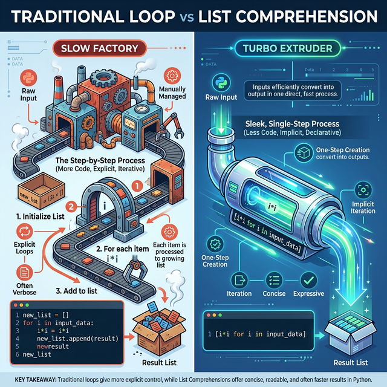
Python Comprehensions — List, Set, and
Dictionary Shortcuts
Performance Comparison
Iterative Approach (Standard Loop):
thresholds = [1, 2, 3, 4, 5]adjusted = []for t in thresholds: adjusted.append(t *1.5)
Declarative Approach (List Comprehension):
adjusted = [t *1.5for t in thresholds]
Comprehensions are implemented at the C-level within the interpreter,
offering execution speeds superior to standard append()
operations in for loops.
List Comprehensions
The basic syntax follows this pattern:
[expression for item in iterable]
# Double every number in a listoriginal = [10, 20, 30]doubled = [x *2for x in original] # [20, 40, 60]# Create a list of uppercase namesnames = ["rahul", "shiva", "amit"]upper_names = [name.upper() for name in names] # ["RAHUL", "SHIVA", "AMIT"]
Conditional
Comprehensions (Filtering and Logic)
You can add if statements inside a comprehension to
filter the data.
1. Filtering (Only if)
[expression for item in iterable if condition]
nums = [1, 2, 3, 4, 5, 6, 7, 8]evens = [x for x in nums if x %2==0] # [2, 4, 6, 8]
2. Transforming (With
if-else)
[val_if_true if condition else val_if_false for item in iterable]
nums = [10, 5, 20, 3]status = ["Pass"if x >=10else"Fail"for x in nums]# Result: ["Pass", "Fail", "Pass", "Fail"]
Dictionary and Set
Comprehensions
The same logic applies to other data structures.
Dictionary Comprehension
{key_expr: val_expr for item in iterable}
names = ["Alice", "Bob"]name_lengths = {name: len(name) for name in names}# Result: {'Alice': 5, 'Bob': 3}
Set Comprehension
{expression for item in iterable} (Result is a unique
set {})
nums = [1, 2, 2, 3, 3, 3, 4]unique_squares = {x * x for x in nums} # {1, 4, 9, 16}
Technical Project:
System Data Sanitizer
Develop a script to normalize a list of raw system identifiers and
filter out non-human service accounts.
# ============================================# PROJECT: System Data Sanitizer# ============================================raw_identifiers = [" srv_node_01 ", "SYS_ADMIN", " guest_account ", "rahul_n ", " daemon_bot"]# 1. Normalization: Whitespace removal and case standardizationclean_identifiers = [id.strip().lower() foridin raw_identifiers]# 2. Gated Filtering: Exclude service botshuman_accounts = [idforidin clean_identifiers if"bot"notinid]# 3. Conditional Labeling: Standardize account prefixesfinal_inventory = [f"PRV_{a}"iflen(a) >10elsef"STD_{a}"for a in human_accounts]print(f"Inventory Summary: {final_inventory}")
Assignments
Assignment 1: Disk
Threshold Adjuster
Given a list of disk usage percentages:
[15, 88, 42, 95, 20]. - Use a list comprehension to return
a list where percentages > 80 are flagged with the string “CRITICAL”,
and others remain as integers.
Assignment 2: Hostname
Encoding Map
Take a string: server-node-01. - Generate a dictionary
where each character is a key and its corresponding ASCII value is the
value.
Assignment 3 — Multiples of 3
and 5
Use a single list comprehension to find all numbers between 1 and 100
that are divisible by both 3 and 5.
Knowledge Assessment
Q1. What is the main advantage of using
comprehensions- - A) They are required for math - B) They are
concise and faster (Pythonic) - C) They can replace all loops - D) They
work without lists
Q2. Which brackets are used for a List
Comprehension- - A) {} - B) () - C)
[] - D) <>
Q3. Where does the if keyword go if you only
want to FILTER items- - A) Before the for - B) At
the very end - C) Inside the for - D) It’s not allowed
Q4. What is the result of
{x for x in [1,1,2,2]}- - A) [1, 1, 2, 2] - B) {1,
2} - C) (1, 2) - D) Error
Q5. When should you AVOID using a comprehension- -
A) For small lists - B) When doing math - C) When the logic is too
complex to read in one line - D) Never, always use them
Technical Evaluation
Preparation
Q1: “Are
comprehensions faster than traditional loops—
Ideal Answer: > “Yes, in most cases. List
comprehensions are implemented in optimized C code within the Python
interpreter, making them faster than manually appending items to a list
in a for loop. However, the performance difference is
usually only noticeable with very large datasets.”
Q2:
“What is the difference between an if at the end and an
if-else at the start—
Ideal Answer: > “An if at the end
(after the for) is a filter; it determines
IF the item gets added at all. An if-else at the start
(before the for) is a transformation; it
determines WHAT value is added for every single item.”
Q3:
“What is a Generator Expression, and how does it differ from a list
comprehension—
Ideal Answer: > “A Generator Expression uses
parentheses () instead of square brackets [].
While a list comprehension creates the entire list in memory
immediately, a generator produces items one-by-side only when requested
(lazy evaluation). This makes generators much more memory-efficient for
extremely large datasets.”
Assignment Solution Key
1. Price Discounter
prices = [100, 250, 45, 800, 120]discounted = [p *0.9if p >200else p for p in prices]print(discounted)
2. Character Counter
text ="Python"codes = {char: ord(char) for char in text}print(codes)
3. Multiples of 3 and 5
multiples = [x for x inrange(1, 101) if x %3==0and x %5==0]print(multiples)
Module 09: Lists
Sequence
Management, Array Operations, and Mutable Buffers
Module 09 of 32
Objectives
Module competency requires: - Management of List objects and dynamic
containers. - Analysis of mutability and object identity. - Utilization
of list methods: append(), pop(), and
sort(). - Implementation of advanced slicing and sequence
operations. - Management of multi-dimensional (nested) list structures.
- Development of a Service Registry Manager utility.
List Overview
A List is an ordered, mutable collection of objects. Unlike primitive
types, lists can encapsulate heterogeneous data types.
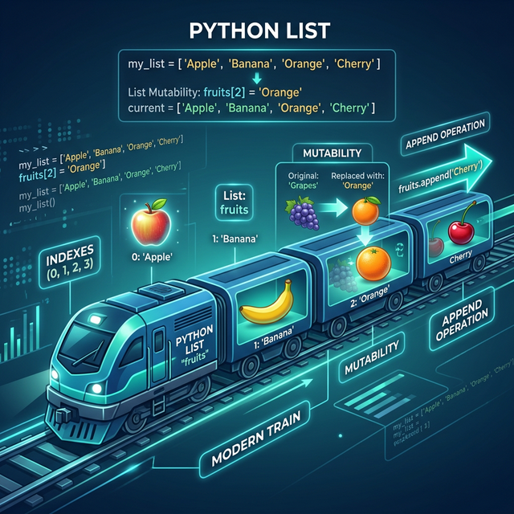
Python List Architecture — Ordered and
Mutable Indexing
Operational Characteristics:
Ordered Persistence: Positional integrity is
maintained.
In-Place Mutability: Direct modification of the
object buffer is permitted.
Dynamic Scaling: The interpreter handles memory
reallocation during expansion.
A list can contain other lists. This is how we represent grids,
tables, or matrices.
# A 3x3 Grid (Tic-Tac-Toe style)matrix = [ [1, 2, 3], [4, 5, 6], [7, 8, 9]]# Accessing Row 1, Column 2 (Index 1, 2)print(matrix[1][2]) # Access point for specific coordinate data
Technical Project:
Service Registry Manager
Develop a Command-Line utility for managing a registry of active
system services.
# ============================================# PROJECT: Service Registry Manager# ============================================active_services = []print("--- System Service Registry Manager ---")whileTrue:print("\n[1] List Services | [2] Register Service | [3] Decommission Service | [4] Exit") choice =input("Enter operational command: ")if choice =="1":print("\n--- ACTIVE REGISTRY ---")ifnot active_services:print("(Registry empty)")else:for i, service inenumerate(active_services, 1):print(f"ID-{i:02}: {service}")elif choice =="2": new_service =input("Enter service identifier: ").strip().upper() active_services.append(new_service)print("Service successfully registered.")elif choice =="3":ifnot active_services:print("Error: No services available for decommission.")continuetry: idx =int(input("Enter registry ID for decommissioning: ")) -1if0<= idx <len(active_services): removed = active_services.pop(idx)print(f"Decommissioned: {removed}")else:print("Error: Invalid registry identifier.")exceptValueError:print("Error: Identifier must be numeric.")elif choice =="4":print("Terminating Management Session.")breakelse:print("Error: Unrecognized command.")
Assignments
Assignment 1: Dynamic IP
Inventory
Accept 5 IP addresses via user input. - Store them in a list and sort
them numerically/alphabetically. - Output the resulting inventory
list.
Assignment 2: Memory Limit
Filter
Given a list of process memory footprints in MB:
[120, 450, 80, 200, 600, 150]. - Accept a threshold value
from the user. - Generate a new list containing only processes that
exceed the threshold.
Assignment 3 — Matrix
Transpose (Challenge)
Take a 2x2 matrix: [[1, 2], [3, 4]]. - Write code to
swap the rows and columns. - Result should be:
[[1, 3], [2, 4]].
Knowledge Assessment
Q1. What is the output of
L = [1, 2]; L.append([3, 4]); print(len(L))- - A)
4 - B) 3 (The list [3,4] is treated as one item) - C) 2 - D) Error
Q2. Which method removes an item by its VALUE, not its
index- - A) pop() - B) remove() - C)
clear() - D) delete()
Q3. How do you find the index of the value “Apple” in a list
fruits- - A) fruits.find("Apple") -
B) fruits.index("Apple") - C)
fruits.search("Apple") - D)
fruits["Apple"]
Q4. True or False: You can change a specific character in a
String like you can in a List. - A) True - B) False (Strings
are immutable, Lists are mutable)
Q5. What does L[-1] return- - A) The
first item - B) The last item - C) An error - D) A reversed list
Technical Evaluation
Preparation
Q1: “What
is the difference between extend() and
append()—
Ideal Answer: > “append() adds its
argument as a single element to the end of a list.
extend() iterates over its argument and adds each
item to the list. For example, L.append([1,2])
results in [..., [1,2]], but L.extend([1,2])
results in [..., 1, 2].”
Q2: “How does
Python handle list memory internally—
Ideal Answer: > “Python lists are overallocated,
meaning they allocate more space than needed to accommodate future
growth. When you append, it’s usually an O(1) operation.
When the capacity is full, Python ‘resizes’ the list by creating a
larger array and copying the elements, which happens occasionally.”
Q3: “What is
a ‘Shallow Copy’ vs a ‘Deep Copy’ in lists—
Ideal Answer: > “A shallow copy (using
L.copy()) creates a new list, but if the list contains
objects (like other lists), both the old and new list will point to the
same internal objects. A deep copy (using the copy module)
recursively copies everything, ensuring the new list is completely
independent of the original.”
Assignment Solution Key
1. Unique Guest List
guests = []for i inrange(5): guests.append(input(f"Enter name {i+1}: "))guests.sort()print(f"First: {guests[0]}, Last: {guests[-1]}")
2. Shopping Budget
prices = [25.5, 99.0, 10.0, 45.0, 150.0]budget =float(input("Budget: "))affordable = [p for p in prices if p <= budget]print(f"Affordable: {affordable}, Total: {sum(affordable)}")
Module competency requires: - Assessment of immutability in stable
data structures. - Implementation of Tuples for fixed sequence
management. - Utilization of Packing and Unpacking for efficient data
assignment. - Analysis of performance metrics: Tuples vs Lists. -
Development of a Database Connection Registry.
Immutability and Data
Integrity
A Tuple is an ordered, immutable collection. Unlike Lists, the
contents of a tuple cannot be modified post-initialization.
# Creating a tuple without even using parenthesespoint =10, 20print(type(point)) # <class 'tuple'>
2. Unpacking (Shortcut
Assignments)
user_info = ("Rahul", 28, "India")# Instead of doing it 3 times:# name = user_info[0] ...name, age, country = user_info print(name) # Rahulprint(country) # India
Comparative Analysis:
Tuples vs Lists
Feature
List []
Tuple ()
Mutability
Mutable (Changeable)
Immutable (Fixed)
Methods
Many (append, pop, sort)
Few (count, index)
Performance
Slightly Slower
Faster
Size in Memory
Consumes more memory
More efficient
Use Case
Collections that will change
Constant data, coordinates, database keys
Immutable Sequence Methods
Since you can’t change a tuple, you only have two methods: 1.
.count(value) : Returns how many times a value appears. 2.
.index(value) : Returns the first position of a value.
Develop a registry of static database connection parameters. Since
these parameters are fixed for the environment, tuples ensure they
cannot be modified by downstream processes.
Initialize a tuple called service_record containing a
service_name, uptime_seconds, and
status_code. - Attempt to increment
uptime_seconds directly and observe the exception. - Unpack
the record and format an status message: “Service [Name] reported status
[Code] after [Seconds]s uptime.”
Assignment 2:
Variable Swap Implementation
Implement the Pythonic variable swap for two server identifiers:
primary = "SRV-01" and secondary = "SRV-B". -
Execute the swap in a single statement using tuple unpacking. - Verify
the identifiers after the swap.
Assignment 3 — Subject Marks
Create a tuple containing marks for 5 subjects. - Print the highest
and lowest marks using max() and min(). -
Print how many times the score 100 appears in the list.
Knowledge Assessment
Q1. What happens if you try to append() to a
tuple- - A) It adds the item to the end - B) It creates a new
list - C) It raises a AttributeError (Tuples don’t have
append) - D) It works if the tuple is empty
Q2. Which of the following is a valid tuple- - A)
t = [1, 2] - B) t = (1) - C)
t = (1,) - D) t = {1, 2}
Q3. What is “Unpacking” in Python- - A) Removing
items from a tuple - B) Assigning tuple items to multiple variables at
once - C) Merging two tuples - D) Converting a tuple to a list
Q4. Why are tuples faster than lists- - A) Because
they use different brackets - B) Because their fixed size allows memory
optimization - C) Because they can’t store strings - D) They are not
faster
Q5. What is the output of
t = (1, 2, 3); print(t * 2)- - A) (2, 4, 6) - B)
(1, 2, 3, 1, 2, 3) - C) Error - D) (1, 2, 3, 2, 4, 6)
Technical Evaluation
Preparation
Q1:
“If tuples are immutable, can they contain a mutable object like a
list—
Ideal Answer: > “Yes. A tuple can contain a list.
While the tuple’s references are fixed (you can’t swap the list
for another object), the contents of the list inside the tuple
can still be changed. This is an important distinction between
‘shallow’ and ‘deep’ immutability.”
Q2: “When should
I use a Tuple instead of a List—
Ideal Answer: > “Use a Tuple when you have a
sequence of data that acts as a single ‘record’ (like an address or
coordinate) or when you want to ensure the data cannot be accidentally
changed by another part of the program. It provides a signal to other
developers that this data is constant.”
Q3: “What is
namedtuple and why is it useful—
Ideal Answer: > “namedtuple is a
factory function from the collections module. It creates
tuple-like objects that have fields accessible by attribute lookup (like
point.x) as well as being indexable. It makes code much
more readable while maintaining the performance and immutability of a
tuple.”
Assignment Solution Key
1. Personal ID Card
identity = ("Rahul", 28, "Engineer")# identity[1] = 29 # Raises TypeErrorname, age, prof = identityprint(f"Hello, I am {name}, a {prof} and I am {age} years old.")
2. Swapping Variables
a =5b =10a, b = b, a # The Python Trick!print(f"a: {a}, b: {b}")
Key-Value
Pairings, Hash Maps, and Fast Data Retrieval
Module 11 of 32
Objectives
Module competency requires: - Analysis of associative arrays and
Key-Value pairings. - Implementation of Dictionary objects using
curly-brace {} initialization. - Utilization of dictionary
methods: .get(), .keys(), and
.items(). - Management of dynamic data insertion, updates,
and deletion. - Management of nested dictionary structures for complex
telemetry data. - Development of a Service Configuration Registry
utility.
Dictionary Logic
A Dictionary is an unordered (post-3.7, insertion-ordered), mutable
collection of items stored as Key-Value pairs.
Direct access via square brackets [] raises a
KeyError if the specified key is absent. The
.get() method provides a non-disruptive alternative,
returning None or a specified default value if the key is
not found.
Develop a Command-Line utility for managing a registry of active
system service configurations.
# ============================================# PROJECT: Service Configuration Registry# ============================================service_registry = {"WEB_PROD": {"host": "10.0.0.10", "port": 443, "status": "UP"},"DB_PROD": {"host": "10.0.0.50", "port": 5432, "status": "UP"}}print("--- System Service Configuration Management ---")whileTrue:print("\n[1] Query Service | [2] Update Config | [3] Remove Service | [4] List All | [5] Exit") choice =input("Select Operational Command: ")if choice =="1":id=input("Enter Service identifier: ").upper() config = service_registry.get(id, "Record missing.")print(f"Operational Config for {id}: {config}")elif choice =="2":id=input("Enter Service ID: ").upper() host =input("Target Host: ") port =int(input("Target Port: ")) service_registry[id] = {"host": host, "port": port, "status": "RESTARTING"}print("Service configuration updated.")elif choice =="3":id=input("Enter Service ID to decommission: ").upper()ifidin service_registry: service_registry.pop(id)print(f"Service {id} decommissioned successfully.")else:print("Error: Identifier not found.")elif choice =="4":print("\n--- ACTIVE REGISTRY ---")for s_id, cfg in service_registry.items():print(f"SERVICE: {s_id} -> {cfg}")elif choice =="5":print("Terminating Management Session.")breakelse:print("Error: Invalid Choice.")
Assignments
Assignment 1: Log
Event Frequency Counter
Accept a string representing a sequence of log events:
"INFO ERROR INFO INFO WARNING ERROR". - Split the string
and utilize a dictionary to count the frequency of each event type.
Assignment 2:
Infrastructure Health Registry
Create a dictionary with server cluster names as keys and a list of
their current uptime percentages (0-100) as values. - Calculate and
output the average uptime for each cluster.
Assignment 3 — Nested Profile
Create a dictionary representing your “Home Library”. - Keys: Book
Titles. - Values: Another dictionary with author and
year. - Print only the authors of books published after the
year 2010.
Knowledge Assessment
Q1. Which symbol is used to create a dictionary- -
A) [] - B) () - C) {} - D)
<>
Q2. What error is raised if you access a non-existent key
using square brackets []- - A) ValueError - B)
KeyError - C) NameError - D) TypeError
Q3. Which method allows you to access a key safely without
crashing- - A) find() - B) search() -
C) get() - D) safe()
Q4. What does the .items() method
return- - A) A list of values - B) A list of keys - C) A
collection of Key-Value tuples - D) The length of the dictionary
Q5. True or False: Dictionary keys must be unique. -
A) True - B) False
Technical Evaluation
Preparation
Q1: “Are Python dictionaries
ordered—
Ideal Answer: > “As of Python 3.7+, dictionaries
maintain the insertion order. This means when you
iterate through a dictionary, the items will appear in the same order
they were added. However, you should still use a dictionary primarily
for ‘lookup by key’ rather than ‘lookup by position’.”
Q2: “What
is the time complexity of a dictionary lookup—
Ideal Answer: > “Dictionary lookups are extremely
fast, with an average time complexity of O(1) (constant
time). This is because Python uses a Hash Table
internally, which allows it to jump directly to the memory location of a
key instead of searching line-by-line like a list.”
Q3: “What can be used
as a dictionary Key—
Ideal Answer: > “Only hashable
(immutable) objects can be used as keys. This includes strings,
integers, floats, and tuples. Lists and other dictionaries cannot be
keys because they are mutable and their hash value could change, making
it impossible for Python to find them later.”
Assignment Solution Key
1. Word Frequency Counter
text =input("Enter sentence: ").lower()words = text.split()counts = {}for w in words: counts[w] = counts.get(w, 0) +1print(counts)
Module competency requires: - Management of Set objects for unique,
unordered data collections. - Comparison of performance and structural
differences between Lists and Sets. - Implementation of Set Mathematics:
Union, Intersection, and Difference. - Utilization of Frozen Sets for
immutable unique collections. - Development of an automated log entry
deduplicator.
Set Properties
A Set is an unordered collection of unique elements. Python’s
set implementation utilizes a hash table to ensure that
every item within the collection is distinct.
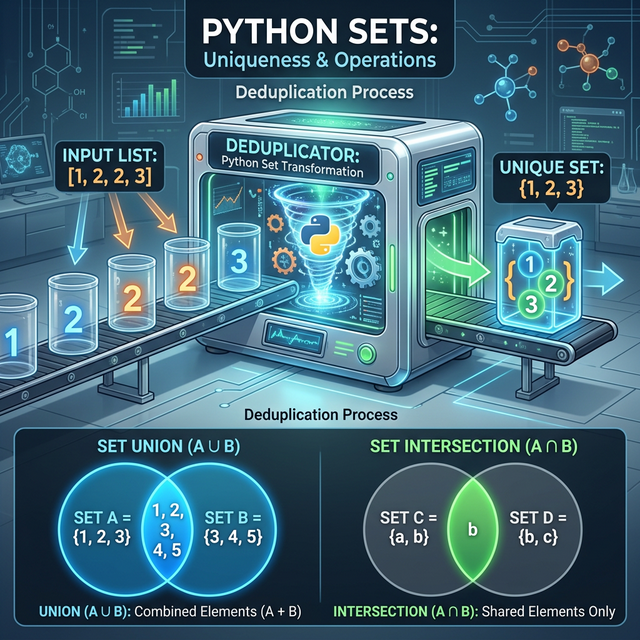
Python Set Operations — Uniqueness and
Venn Logic
Operational Characteristics:
Unordered Storage: Items do not maintain a fixed
position; indexing is not supported.
Mandatory Uniqueness: Duplicate values are
automatically discarded.
Mutable Container: Elements can be added or
removed, though the elements themselves must be hashable
(immutable).
Key Features: 1. Unordered: Items
have no fixed position (no indexing). 2. Unique: No
duplicate values allowed. 3. Mutable: You can
add/remove items (but items inside must be immutable).
# A simple setmy_set = {1, 2, 3, 3, 3}print(my_set) # Output: {1, 2, 3} (Duplicates are gone!)
Set Initialization
and Uniqueness Operations
Sets use curly braces {} just like dictionaries, but
without the colons :.
- The Empty Set Trap
If you use empty = {}, Python creates an empty
Dictionary. To create an empty Set, you must
use the set() function.
is_dict = {} is_set =set() # Standard initialization
Removing Duplicates from a
List
This is the #1 real-world use for sets:
emails = ["a@x.com", "b@x.com", "a@x.com"]unique_emails =list(set(emails)) # List -> Set -> Listprint(unique_emails) # ["b@x.com", "a@x.com"]
Mathematical Set
Operations (Algebraic Logic)
Python sets allow you to perform powerful “Venn Diagram” operations
using symbols.
Operation
Symbol
Result
Union
\|
All items from both sets
Intersection
&
Only items present in both
Difference
-
Items in set A but not in set B
Symmetric Diff
^
Items in either but not both
A = {1, 2, 3}B = {3, 4, 5}print(A | B) # {1, 2, 3, 4, 5}print(A & B) # {3}print(A - B) # {1, 2}
Modification and
Membership Evaluation
Since sets have no index, you use specific methods to change
them.
.add(item) : Adds one item.
.update([list]) : Adds multiple items.
.remove(item) : Removes item (Errors if not
found).
.discard(item) : Removes item (Safe; no error if not
found).
Membership Checking (Efficiency): Checking if an
item exists in a set (x in my_set) is significantly
faster than checking a list, especially as the data grows to
thousands of items.
Frozen Sets: Immutable
Unique Containers
A frozenset is an immutable version of a set. Once
created, you cannot add or remove items. This allows you to use a set as
a Key in a Dictionary.
fs =frozenset([1, 2, 3])# fs.add(4) # Error
Technical Project:
Automated Log Deduplicator
Develop a script to process multiple system logs and extract unique
service identifiers while identifying common active processes across
different timeframes.
# ============================================# PROJECT: Automated Log Deduplicator# ============================================log_batch_01 = {"SRV_WEB", "SRV_DB", "SRV_AUTH", "SRV_CACHE", "SRV_WEB"}log_batch_02 = {"SRV_PROXY", "SRV_DB", "SRV_WEB", "SRV_LB"}print(f"Log Sequence A: {log_batch_01}")print(f"Log Sequence B: {log_batch_02}")# 1. Intersection: Which services were active in BOTH batches-persistent_services = log_batch_01 & log_batch_02print(f"\nPersistent active services: {persistent_services}")# 2. Union: Total unique services across all logs-inventory_summary = log_batch_01 | log_batch_02print(f"Consolidated Service Inventory: {len(inventory_summary)} unique entries")# 3. Difference: Which services were introduced in the second batch-new_service_activity = log_batch_02 - log_batch_01print(f"New services detected in Batch B: {new_service_activity}")
Assignments
Assignment 1:
Infrastructure Skill Mapping
Take two sets of infrastructure skills:
PrimaryStack = {"Python", "AWS", "Terraform"} and
SecondaryStack = {"AWS", "Ansible", "Docker"}. - Extract
the union of all skills. - Extract the intersection (common skills). -
Extract skills unique to the PrimaryStack.
Assignment 2: Hostname
Deduplicator
Accept a space-separated string of hostnames from the user. - Utilize
a set to extract and print all unique hostnames. - Output the total
count of distinct hosts.
Assignment 3 — Set Comparison
Create a set of numbers from 1 to 10. - Create another set of even
numbers from 1 to 15. - Print the Symmetric Difference
(Numbers that are in one set or the other, but not both).
Knowledge Assessment
Q1. What is the result of
{1, 2} | {2, 3}- - A) {1, 2, 2, 3} - B) {1, 2, 3}
- C) {2} - D) {1, 3}
Q2. How do you create an EMPTY set- - A)
s = {} - B) s = set() - C) s = []
- D) s = set({})
Q3. Which operation finds items present in BOTH
sets- - A) Union (|) - B) Intersection
(&) - C) Difference (-) - D) Invert
(~)
Q4. True or False: You can access a set item using
my_set[0]. - A) True - B) False (Sets are
unordered and do not support indexing)
Q5. Which method is safer for removing an item- - A)
remove() - B) pop() - C)
discard() - D) delete()
Technical Evaluation
Preparation
Q1: “Why is
searching in a Set faster than in a List—
Ideal Answer: > “Sets are implemented using a
Hash Table. When you check x in s, Python
hashes the value and jumps directly to its bucket in memory. In a List,
Python must scan every item from start to finish (O(n)
complexity), while in a Set, it’s a constant time operation
(O(1)).”
Q2: “Can a Set
contain a List as an element—
Ideal Answer: > “No. Sets can only contain
hashable (immutable) objects. Since Lists are mutable
and can change, their hash value is not constant, so they cannot be
stored in a set. You would need to convert the list to a
Tuple first.”
Q3:
“Practical use-case: How would you find common elements between three
different lists—
Ideal Answer: > “Convert the first list to a set
and then use the .intersection() method, passing the other
two lists as arguments:
set(list1).intersection(list2, list3). This is much cleaner
and faster than using multiple nested loops.”
Procedural
Abstraction, Variable Scope, and Reusable Logic Blocks
Module 13 of 32
Objectives
Module competency requires: - Application of the DRY (Don’t Repeat
Yourself) principle for code optimization. - Definition and invocation
of custom Functions using the def keyword. - Management of
data flow via Parameters and Arguments. - Implementation of the
return statement for procedural output. - Utilization of
Docstrings for standardized code documentation. - Development of a
multi-parameter system resource calculator.
Procedural
Abstraction: The DRY Principle
DRY (Don’t Repeat Yourself) is a core software
engineering principle focused on reducing redundancy.
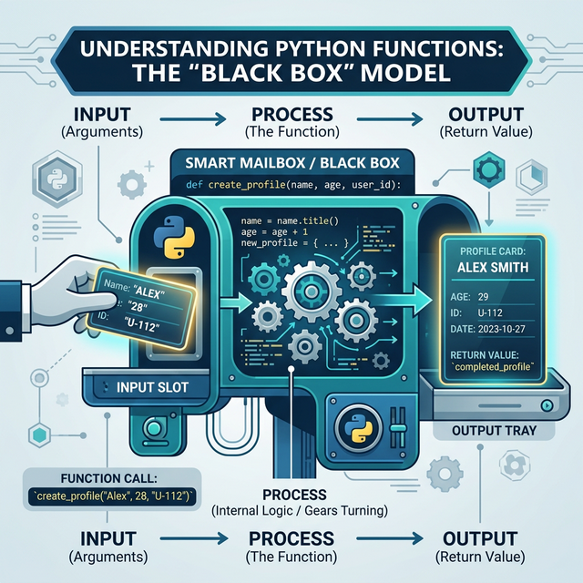
Python Function Logic — Process
Abstraction and Reusability
Advantages of Functional
Encapsulation:
Maintainability: Centralized logic allows for
global updates via single-point modifications.
Modular Organization: Complex workflows are
decomposed into discrete, testable units.
Execution Efficiency: Reduces code bloat and
minimizes potential for copy-paste errors.
Functions act as logical black boxes that ingest inputs (parameters),
process them, and yield outputs (returns) without requiring the caller
to rebuild the underlying logic for every execution.
Function Definition and
Invocation
We use the def keyword to define a function.
# 1. DEFINING a functiondef say_hello():"""Prints a simple greeting."""print("System initialization routine complete.")# 2. CALLING a functionsay_hello() say_hello() # Can be called multiple times
Naming Rules: - Use snake_case
(lowercase with underscores). - Use verbs as names (e.g.,
calculate_tax, show_results).
Parameters and Positional
Arguments
To make a function useful, we often need to send data into it.
Parameter: The variable listed in the function
definition (The “Placeholder”).
Argument: The actual value sent to the function
when calling it (The “Input”).
def greet_user(name): # 'name' is the Parameterprint(f"Hello, {name}!")greet_user("Rahul") # "Rahul" is the Argumentgreet_user("Amit") # "Amit" is the Argument
Data Returns: The
return Statement
Most functions don’t just “print” things; they calculate a value and
send it back so it can be used elsewhere in the
program.
def add(a, b): result = a + breturn result # Sends the value back# Storing the returned value in a variabletotal = add(10, 5) print(f"The sum is: {total}")# print() vs return# print() just shows text on the screen.# return gives the data back to the person who called the function.
Documentation Standards:
Docstrings
Professional developers always document what their functions do using
Docstrings. These are triple-quoted strings placed
immediately inside the function.
def get_area(radius):""" Calculates the area of a circle. Input: radius (float) Output: area (float) """return3.14* (radius **2)# You can access this documentation using help()# help(get_area)
Technical
Project: Infrastructure Cost and Resource Calculator
Develop a utility to calculate total operational costs for cloud
instances based on hourly rates, uptime, and applicable enterprise
discounts.
***
## Assignments
### Assignment 1: Disk Capacity Calculator
Create a function `get_available_storage(total_cap, used_cap)`.
- The function must return the remaining capacity.
- Accept inputs from the user and output the result.
### Assignment 2: Security Credential Validator
Create a function `is_valid_token(token)`.
- Return `True` if the token length is exactly 16 characters, otherwise `False`.
- Test with multiple inputs.
### Assignment 3 — Temperature Converter
Write a function that converts Celsius to Fahrenheit.
- Formula: `F = (C * 9/5) + 32`
- Create another function that converts Fahrenheit to Celsius.
***
## Knowledge Assessment
**Q1. Which keyword is used to create a function in Python-**
- A) `function`
- B) `create`
- C) `def`
- D) `method`
**Q2. What is the difference between an Argument and a Parameter-**
- A) Parameters are the values, Arguments are the variables.
- B) Parameters are the variables in the definition, Arguments are the actual values passed.
- C) There is no difference.
- D) Arguments are only for numbers.
**Q3. What happens if a function has no `return` statement-**
- A) It crashes.
- B) It returns 0.
- C) It returns `None` automatically.
- D) It loops forever.
**Q4. Where should a Docstring be placed-**
- A) Above the `def` line.
- B) On the first line inside the function body.
- C) At the end of the file.
- D) Anywhere inside the function.
**Q5. Can a function call another function-**
- A) Yes, this is common practice.
- B) No, functions must be independent.
- C) Only if they share the same name.
***
## Technical Evaluation Preparation
### Q1: "What is the 'Scope' of a variable inside a function—
**Ideal Answer:**
> "Variables created inside a function are called **Local Variables**. They only exist while the function is running. Once the function finishes, these variables are destroyed and cannot be accessed from outside. This is known as **Local Scope**."
### Q2: "What is the difference between `print()` and `return` inside a function—
**Ideal Answer:**
> "`print()` is an output for the **user** to see on the console; it doesn't allow the program to use that data later. `return` is an output for the **program**; it sends a value back to the caller so it can be stored in a variable or used in further calculations."
### Q3: "What are 'Default Arguments' and why are they used—
**Ideal Answer:**
> "Default arguments allow you to assign a value to a parameter in the definition (e.g., `def greet(msg="Hello")`). If the caller doesn't provide an argument, the default is used. This makes functions more flexible and easier to use when certain values are the same 90% of the time."
***
## Assignment Solution Key
### 1. Area Calculator
```python
def calculate_rectangle_area(l, w):
return l * w
length = float(input("Length: "))
width = float(input("Width: "))
print(f"Area: {calculate_rectangle_area(length, width)}")
def c_to_f(c):return (c *9/5) +32def f_to_c(f):return (f -32) *5/9print(f"0C is {c_to_f(0)}F")print(f"100F is {round(f_to_c(100), 2)}C")
Module 14.5: Logic
Consolidation Project
Architecting
Custom Automation Workflows
Module 14.5 of 32
Objectives
Module competency requires: - Integration of Lists, Dictionaries, and
Sets within a single logical framework. - Implementation of higher-order
functions and modularized logic blocks. - Development of a complex
“Real-World” automation utility. - Preparation for Object-Oriented
Programming (OOP) architectures.
The “Bridge” Challenge
Before transitioning to Object-Oriented Programming (OOP), it is
critical to master the orchestration of independent data structures. In
professional DevOps environments, data often arrives as a series of
complex lists or dictionaries which must be filtered, transformed, and
validated using custom functions.
The Problem:
Multi-Component Health Audit
You have been tasked with building a System Health
Dashboard script. The script must process raw telemetry data
from multiple servers, filter out irrelevant status codes, and generate
a unique list of unhealthy nodes.
Data Structure Consolidation
Map
Python Data Structure Selection Guide —
When to use Lists, Tuples, Dictionaries, and Sets
1. The Raw Telemetry
(Dictionary)
Each entry in your telemetry source is a dictionary representing a
server node.
2. The Filter Criteria (Set)
Use a Set to maintain a high-performance collection of “Known
Critical” error codes.
3. The Result Set (List)
A list will store the final objects (Filtered Dictionaries) to be
reported to the dashboard.
technical
Project: Automated Node Audit Utility
Develop a script that integrates all concepts from Modules 01-14.
# ============================================# PROJECT: Automated Node Audit Utility (Logic Consolidation)# ============================================# 1. Configuration (Set for fast lookups)CRITICAL_ERRORS = {"E-101", "E-404", "E-500"}# 2. Raw Telemetry Data (List of Dictionaries)raw_telemetry = [ {"node": "Web-01", "cpu": 45, "status": "E-101"}, {"node": "DB-01", "cpu": 88, "status": "OK"}, {"node": "API-01", "cpu": 12, "status": "E-500"}, {"node": "Cache-01", "cpu": 10, "status": "E-202"},]def audit_node(node_data):""" Evaluates a single node's data. Returns True if the node is in CRITICAL failure state. """ status = node_data.get("status") cpu_load = node_data.get("cpu", 0)# Logic: Higher than 80% CPU OR has a critical error codeif status in CRITICAL_ERRORS or cpu_load >80:returnTruereturnFalsedef generate_report(telemetry):""" Orchestrates the audit across all nodes. """ unhealthy_nodes = [node["node"] for node in telemetry if audit_node(node)]return unhealthy_nodes# Main Executionfailed_nodes = generate_report(raw_telemetry)print("--- SYSTEM HEALTH REPORT ---")print(f"Nodes found requiring intervention: {failed_nodes}")
Operational Insight
“In the real world, you don’t just write scripts; you architect
workflows. This project forces you to think about how data flows from a
raw ‘telemetry’ list into a filtered ‘critical’ set and finally into an
‘actionable’ report. Mastering this functional orchestration is the
final step before we move into the structural power of Classes and
Objects.”
Next: Module 15 — Classes & Objects
Module 14: Functions (Part 2)
Variable
Scope Resolution, Global State Management, and Functional
Mapping
Module 14 of 32
Objectives
Module competency requires: - Evaluation of variable lifecycle: Local
vs Global Scope. - Implementation of the global keyword for
persistent state management. - Utilization of Lambda expressions for
anonymous functional logic. - Application of higher-order functions:
map() and filter(). - Development of a
multi-stage telemetry data transformer.
Variable Scope and
Workspace Isolation
Variable scope defines the accessibility of an identifier within the
program hierarchy.
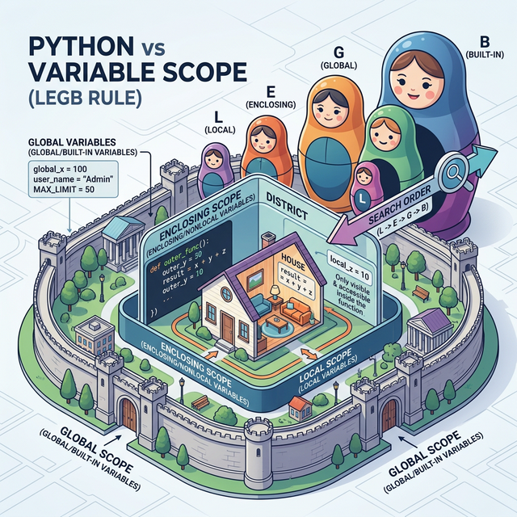
Python Variable Scope — Local vs Global
Namespace Isolation
Scope Definitions:
Global Scope: Identifiers declared at the top-level
of a module; accessible by any functional block within that module.
Local Scope: Identifiers declared within a function
block; these are encapsulated and unavailable to external processes once
the function execution terminates.
cluster_id ="PROD-01"# Global Variable (Accessible Module-Wide)def initialize_node(): node_ip ="10.0.0.1"# Local Variable (Encapsulated)print(f"Initializing node {node_ip} in cluster {cluster_id}")initialize_node()# print(node_ip) # This raises a NameError as node_ip is not defined in the global namespace.
Namespace
Resolution: Local vs Global Scope
Global Variables: Defined outside any function.
Accessible by everyone.
Local Variables: Defined inside a function. Only
accessible inside that function.
Functional blocks prioritize local namespace resolution. To modify a
global identifier within a local scope, the global keyword
must be explicitly invoked.
count =0def increment():global count # Telling Python: "Use the one outside!" count +=1increment()print(count) # Output: 1
[!WARNING] Use Sparingly! Relying too much on
global makes code hard to debug. It’s usually better to
pass variables as arguments and return the result.
Lambda Expressions
(Anonymous Functions)
A Lambda is a restricted, single-expression anonymous function.
Lambdas are utilized for ephemeral logic where defining a full
functional block via def is computationally or
syntactically excessive.
Standard Syntax:lambda arguments : expression
# Regular Functiondef square(x):return x * x# Lambda Equivalentsquare_lambda =lambda x : x * xprint(square_lambda(5)) # Output: 25
Functional
Programming Tools: Map and Filter
Lambdas are most powerful when used with functions like
map() and filter().
Develop a utility to process a sequence of raw load balancer logs,
extracting unique identifiers and applying transformation logic via
functional mapping.
***
## Assignments
### Assignment 1: Centralized Session Tracking
Define a global integer `active_sessions = 0`.
- Implement a function `register_session()` that increments the global state.
- Invoke the function across multiple iterations and verify the persistent state.
### Assignment 2: Functional IP Filter
Given a sequence of IP addresses: `["10.0.0.1", "192.168.1.1", "10.0.0.50", "172.16.0.5"]`.
- Use `filter()` and a Lambda to extract only addresses belonging to the `10.x.x.x` subnet.
- Use `map()` to append the prefix `[INTERNAL]` to each filtered address.
***
## Knowledge Assessment
**Q1. What is the scope of a variable defined inside a function-**
- A) Global
- B) Local
- C) Protected
- D) Permanent
**Q2. Which keyword allows a function to modify a variable in the global scope-**
- A) `external`
- B) `outer`
- C) `global`
- D) `modify`
**Q3. How many expressions can a Lambda function contain-**
- A) Infinite
- B) Two
- C) Only one
- D) None
**Q4. What does `map()` do-**
- A) Filters out specific items
- B) Applies a function to every item in a collection
- C) Deletes the collection
- D) Sorts the collection
**Q5. Where does a "Global" variable live-**
- A) Inside a loop
- B) Inside a function
- C) Outside any function or class
- D) In a separate file only
***
## Technical Evaluation Preparation
### Q1: "What is the LEGB rule in Python—
**Ideal Answer:**
> "LEGB stands for **Local, Enclosing, Global, and Built-in**. This is the order in which Python looks for a variable. It check the **Local** scope first, then **Enclosing** functions, then the **Global** script level, and finally the **Built-in** library (like `len` or `print`)."
### Q2: "Can a Lambda function contain a 'return' statement—
**Ideal Answer:**
> "No. A lambda function has an **implicit return**. It automatically returns whatever the expression evaluates to. Including a literal `return` keyword inside a lambda will result in a SyntaxError."
### Q3: "What are the disadvantages of using Global variables—
**Ideal Answer:**
> "Global variables can lead to 'spaghetti code' where hidden dependencies exist between functions. They make code harder to test because you can't be sure what changed the variable, and they increase the risk of naming collisions. In modern software engineering, they are usually replaced by state-holding objects or class attributes."
***
## Assignment Solution Key
### 1. Global Counter
```python
total_visits = 0
def track_visit():
global total_visits
total_visits += 1
for _ in range(5): track_visit()
print(total_visits)
2. Quick Math
mult =lambda a, b, c: a * b * clength =lambda s: len(s)print(mult(2,3,4))print(length("Python"))
Object-Oriented
Programming (OOP) and Logical Resource Modeling
Module 15 of 32
Objectives
Module competency requires: - Application of the Object-Oriented
Programming (OOP) paradigm for resource management. - Definition of
Classes as architectural templates for data structure. - Implementation
of Object Instantiation for dynamic resource allocation. - Utilization
of the __init__ constructor and the self
identifier. - Development of an active infrastructure resource
monitor.
Procedural
vs. Object-Oriented Design
While procedural programming executes a linear sequence of
instructions, Object-Oriented Programming (OOP)
encapsulates data (attributes) and logic (methods) into standalone
architectural units.
Core Definitions:
Class: A logical template defining the internal
state and operational behavior of an object.
Object: A specific instance resultant from a class
definition, occupying dedicated memory space with unique attribute
values.
In an infrastructure context, a Server class may define
parameters like cpu_cores and ram_gb, while a
specific object prod_srv_01 represents the actual running
instance with assigned values.
graph TD
A[Class: Dog Blueprint] --> B[Object: Tommy]
A --> C[Object: Bruno]
B --> D[Name: Tommy, Breed: Husky]
C --> E[Name: Bruno, Breed: Pug]
Class Definition
and the __init__ Constructor
The class keyword initiates the template definition. The
__init__ magic method serves as the constructor, executing
automatically during object instantiation to configure initial state
parameters.
Attributes: Identity-level variables encapsulating
the state of the object.
Methods: Class-internal functions defining the
operational capabilities of the object.
class ServiceMonitor:def__init__(self, service_name):self.service_name = service_namedef heartbeat(self):print(f"ACK: Service {self.service_name} reported healthy status.")monitor = ServiceMonitor("API_GATEWAY")monitor.heartbeat()
Instance Reference: The
self Keyword
The self identifier represents the specific object
instance currently being processed. It ensures that method operations
are restricted to the instance scope. During method invocation, Python
implicitly passes the object reference as the first argument; explicitly
including self in method definitions is mandatory for
instance binding.
Technical Project:
Virtual Resource Monitor
Develop an object-oriented monitoring utility that tracks resource
consumption for virtual instances and manages state-based alerting.
Define a class Asset with attributes
asset_id and maintenance_cost. - Implement a
method increase_cost(delta) to update the expenditure. -
Implement a method generate_report() to output current
asset details.
Assignment 2: Load
Balancer Node Modeling
Define a class LBNode with ip_address and
connection_count (initialized to 0). - Implement a method
add_connection() that increments the count. - Implement a
method clear_connections() that resets the count to 0. -
Instantiate two distinct nodes and simulate traffic assignment.
Knowledge Assessment
Q1. What is a “Class” in Python- - A) A type of loop
- B) A blueprint for creating objects - C) A built-in function - D) A
list of numbers
Q2. Which method is used to initialize an object’s
attributes- - A) initial() - B)
start() - C) __init__() - D)
setup()
Q3. What does the self keyword
represent- - A) The programmer - B) The class itself - C) The
specific instance (object) being called - D) A global variable
Q4. If p1 = Person("Raj"), what is
p1- - A) A Class - B) An Object (Instance) - C) A
Method - D) A Parameter
Q5. Can a class have more than one object- - A) Yes,
you can create infinite objects from one blueprint. - B) No, only one
object per class.
Technical Evaluation
Preparation
Q1: “What are the four
pillars of OOP—
Ideal Answer Kurz: > “The four pillars are
Encapsulation (hiding internal state),
Abstraction (showing only necessary features),
Inheritance (reusing code from other classes), and
Polymorphism (using a single interface for different
forms). We will cover these in the next modules!”
Q2:
“What happens if you forget to include self in a
method—
Ideal Answer: > “If you forget self,
Python will throw a TypeError when you call the method on
an object. This is because Python always tries to pass the instance
itself as the first argument, and if your function definition doesn’t
account for it, the argument numbers won’t match.”
Q3:
“What is the difference between an Attribute and a Method—
Ideal Answer: > “An attribute represents the
state or data of the object (e.g.,
car.color). It is usually a variable. A method represents
the behavior or action the object can perform (e.g.,
car.drive()). It is a function defined inside the
class.”
class Book:def__init__(self, title, author):self.title = titleself.author = authordef__str__(self):returnf"{self.title} by {self.author}"b = Book("Python Pro", "Rahul")print(b)
Module 16: Inheritance
Code
Reusability and Hierarchical Resource Modeling
Module 16 of 32
Objectives
Module competency requires: - Identification of Parent (Base) and
Child (Derived) class relationships. - Implementation of Class
Inheritance for logical code reuse. - Mastery of Method Overriding for
specialized child behavior. - Utilization of the super()
keyword for parent method access. - Development of a Hierarchical
Infrastructure Asset System.
classDiagram
class Animal {
+name: String
+eat()
}
class Dog {
+breed: String
+bark()
}
class Cat {
+color: String
+meow()
}
Animal <|-- Dog : Inherits
Animal <|-- Cat : Inherits
Hierarchical Resource
Modeling
Inheritance is a fundamental pillar of
Object-Oriented Programming that enables a new class (Subclass/Child) to
acquire the attributes and methods of an existing class
(Superclass/Parent).
Logical Structure:
In infrastructureInheritance allows us to define a “Base Class” with
common attributes and then create “Sub-Classes” that inherit those
attributes while adding their own specialized features.
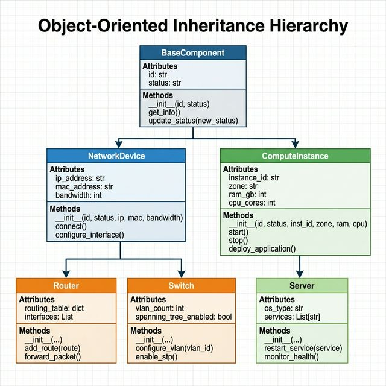
Object-Oriented Inheritance Hierarchy —
Architecting Resilient and Reusable Components
Operational Insight
“Inheritance is the key to ‘D.R.Y’ (Don’t Repeat Yourself) code at an
architectural level. In infrastructure management, we often have a base
‘Resource’ class and specialized ‘Server’, ‘Storage’, and ‘Network’
subclasses. It allows you to update the core logic in one place and have
it propagate everywhere.” For example, a compute_resource
base class may contain attributes like provider and
region, while a virtual_machine subclass adds
cpu_count and ram_size.
This architecture enforces the DRY (Don’t Repeat
Yourself) principle, centralizing common logic in the
superclass to minimize redundancy across specialized
implementations.
Inheritance Implementation
Syntax
Inheritance is implemented by specifying the parent class within
parentheses during child class definition.
# Base Class: Common Infrastructure Logicclass CloudResource:def power_on(self):print("Resource state shifted to: ONLINE")# Derived Class: Specialized Compute Logicclass ComputeInstance(CloudResource):def deploy_app(self):print("Application deployment initiated on instance.")instance = ComputeInstance()instance.power_on() # Inherited from CloudResourceinstance.deploy_app() # Defined in ComputeInstance
Method Overriding
Method overriding occurs when a child class provides a specialized
implementation for a method already defined in its parent class. This
allows sub-types to refine their behavior without altering the base
class interface.
class StorageBucket:def sync_data(self):print("Initiating standard data synchronization...")class SecureBucket(StorageBucket):def sync_data(self): # Overriding the base sync logicprint("Initiating ENCRYPTED synchronization via SSL/TLS...")standard_s3 = StorageBucket()secure_s3 = SecureBucket()standard_s3.sync_data() # Output: Standard syncsecure_s3.sync_data() # Output: Encrypted sync
Parent Access via
super()
The super() keyword provides an explicit reference to
the parent class, enabling child classes to extend parent methods rather
than just replacing them.
Constructor Extension via
super()
class BaseService:def__init__(self, service_id):self.service_id = service_idclass APIService(BaseService):def__init__(self, service_id, endpoint):super().__init__(service_id) # Initializing base attributesself.endpoint = endpoint # Initializing child-specific attributesapi = APIService("AUTH_GATEWAY", "https://api.internal/v1")print(f"Service ID: {api.service_id} | Routing to: {api.endpoint}")
Technical
Project: Enterprise Resource Hierarchy
Develop a management system for hierarchical system assets. Base
assets track common telemetry, while specialized assets (Compute and
Storage) implement specific resource metrics.
Define a base class SystemUtility with
utility_name. - Create a subclass LogManager
that adds log_path. - Create a subclass
NetworkManager that adds port_scan_range. -
Implement a status() method in the base class and extend it
in both subclasses via super().
Assignment 2:
Database Interface Overriding
Define a base class DatabaseConnector. - Add a method
connect() that prints “Establishing generic connection…”. -
Create subclasses PostgreSQLConnector and
MongoDBConnector. - Override connect() in each
to reflect specific connection logic (e.g., “Connecting to SQL
instance…” vs “Connecting to NoSQL cluster…”).
Assignment 3:
Multi-Level Environment Mapping
Define a class Environment with env_type
(e.g., “Production”). - Define a subclass Region
(inheriting Environment) with region_code. - Define a
subclass VPC (inheriting Region) with vpc_id.
- Demonstrate how a VPC object can resolve the env_type
attribute.
Knowledge Assessment
Q1. What is the main benefit of Inheritance- - A)
Making code slower - B) Code Reusability (reusing existing class logic)
- C) Removing all functions - D) Hiding variables
Q2. How do you call a parent’s method from inside a child
class- - A) parent.method() - B)
this.method() - C) super().method() - D)
base.method()
Q3. What is “Method Overriding”- - A) Deleting a
method - B) Redefining a parent’s method in a child class - C) Using the
same name for two variables - D) Calling a private method
Q4. Can a child class have its own unique
attributes- - A) Yes, it can add as many as needed. - B) No, it
must only have what the parent has.
Q5. In class Smartphone(Phone):, which one is
the Subclass- - A) Phone - B) Smartphone - C) Both - D)
Neither
Technical Evaluation
Preparation
Q1:
“What is the difference between Single and Multi-level Inheritance—
Ideal Answer: > “Single
Inheritance is when one child class inherits from one parent
class (e.g., Dog inherits from Animal). Multi-level
Inheritance is when a child class acts as a parent for another
class (e.g., Puppy inherits from Dog, which inherits from Animal).”
Q2: “What is Method
Resolution Order (MRO)—
Ideal Answer: > “MRO is the order in which Python
looks for a method in a hierarchy of classes, especially in multiple
inheritance. You can see the order by calling the __mro__
attribute on a class. It generally follows a depth-first, left-to-right
search.”
Q3:
“What is the danger of ‘The Diamond Problem’ in Multiple
Inheritance—
Ideal Answer: > “The Diamond Problem occurs when
a child class inherits from two parent classes that both inherit from
the same grandparent class. If both parents override a method from the
grandparent, it’s unclear which one the child should use. Python handles
this using the C3 Linearization algorithm to determine a clear MRO.”
Data
Hiding and Interface Implementation Standards
Module 17 of 32
Objectives
Module competency requires: - Implementation of Encapsulation for
data integrity and access control. - Utilization of Private
(__) and Protected (_) access modifiers. -
Application of Property Decorators (@property) for managed
attribute modification. - Implementation of Abstraction via Abstract
Base Classes (ABC). - Development of a Secure Credential Management
Interface.
graph TD
subgraph "Class: BankAccount"
PrivateData["__balance (Locked Inside)"]
PublicMethod1["deposit() - Interface"]
PublicMethod2["get_balance() - Interface"]
end
User((User)) --> PublicMethod1
User --> PublicMethod2
PublicMethod1 -.-> PrivateData
PublicMethod2 -.-> PrivateData
User --X PrivateData
Encapsulation and
Abstraction Logic
Encapsulation and Abstraction represent the final architectural
pillars of Object-Oriented Programming, focused on securing internal
state and standardizing external interfaces.
Operational Definitions:
Encapsulation: The process of restricting direct
access to an object’s internal state. This prevents unauthorized or
accidental data corruption by forcing interaction through defined public
methods.
Abstraction: The process of hiding implementation
complexity and exposing only the essential interface to the user. This
ensures that the caller interacts with a consistent functional model
regardless of the underlying backend logic.
In an IT automation context, encapsulation protects sensitive
identifiers (e.g., API keys), while abstraction allows for a universal
Connector interface that works identically whether the
backend is AWS, Azure, or On-Premise.
Member
Accessibility: Public, Protected, and Private
In Python, all variables in a class are “Public” by default. We use
underscores to signal “Private” data.
Public (var): Universally accessible
identifiers.
Protected (_var): Conventional
indicator for internal use; accessible but discouraged for external
invocation.
Private (__var): Enforced via Name
Mangling; restricts external resolution to prevent direct
modification.
class ServiceCredential:def__init__(self, api_key):self.public_id ="SVC-AUTH-99"self._internal_tracking ="AUDIT_ENABLED"self.__api_key = api_key # PRIVATE MEMBERsvc = ServiceCredential("AKIA-SECURE-KEY-123")print(svc.public_id) # Accessible# print(svc.__api_key) # Raises AttributeError due to mangling
If data is private, how do we use it- We use Property
Decorators to create controlled gateways.
class SystemConfig:def__init__(self, port):self.__port = port@property# GETTER: Read-only accessdef port(self):returnself.__port@port.setter# SETTER: Validated modificationdef port(self, value):if1024<= value <=65535:self.__port = valueelse:print("Error: Ports must be in the non-privileged range (1024-65535).")config = SystemConfig(8080)print(f"Target Port: {config.port}")config.port =80# Triggers validation error
Abstract Base
Classes (ABC) and Interface Standards
Abstraction is used to create a “Template” that
other classes must follow. We use the abc
(Abstract Base Class) module.
Rules: You cannot create an object from an Abstract
Class. It is only meant to be inherited.
from abc import ABC, abstractmethodclass Payment(ABC): # Abstract Base Class@abstractmethoddef process(self, amount):passclass CreditCard(Payment):def process(self, amount): # Must implement this!print(f"Processing ${amount} via Credit Card.")p = CreditCard()p.process(100)
Create a class ResourceMonitor with a private attribute
__usage_pct. - Implement @property to return
usage as a percentage string (e.g., “75%”). - Implement a setter to
ensure the percentage value is between 0 and 100.
Assignment 2: Abstract
Cloud Connector
Create an abstract class CloudConnector. - Define an
abstract method provision_resources(specs). - Create child
classes AWSConnector and AzureConnector that
implement specific provisioning logic. - Verify that objects cannot be
instantiated from the base CloudConnector class.
Knowledge Assessment
Q1. Which prefix makes a variable “Private” in
Python- - A) _ (Single underscore) - B)
__ (Double underscore) - C) $ - D)
private
Q2. What is “Name Mangling”- - A) Changing the class
name - B) Python’s internal way of hiding __ variables
(e.g., _Class__var) - C) Deleting variables - D) Overriding
methods
Q3. Which decorator allows you to access a method like an
attribute (without ())- - A)
@abstractmethod - B) @property - C)
@static - D) @set
Q4. Can you create an object directly from an Abstract Base
Class- - A) Yes, always - B) No, it will raise a
TypeError - C) Only if it has no methods - D) Only in
Python 2
Q5. Why is Encapsulation important- - A) It makes
the code run faster - B) It prevents accidental or malicious data
modification from outside the class - C) It removes the need for loops -
D) It’s required for mathematics
Technical Evaluation
Preparation
Q1: “Is there truly
‘Private’ data in Python—
Ideal Answer: > “Technically,
no. Python does not have strict access security.
Private variables using __ are simply ‘mangled’ (renamed).
A determined developer can still access them using
_ClassName__variableName. Python relies on the ‘Consenting
Adults’ philosophy – if a variable starts with an underscore, you are
expected to stay away from it unless you know what you are doing.”
Q2:
“What is the difference between Encapsulation and Abstraction—
Ideal Answer: > “Encapsulation
is about Hiding (keeping data safe inside a shell).
Abstraction is about Simplifying
(showing only the necessary interface to the user and hiding the
background complexity). One is for security/integrity, the other is for
design/usability.”
Q3:
“When should I use a Getter/Setter instead of a Public attribute—
Ideal Answer: > “Use them when you need
validation (checking if data is valid before saving) or
when the attribute should be read-only. It also allows
you to change the underlying logic later without breaking the code of
people using your class.”
Assignment Solution Key
1. Smart Thermostat
class Thermostat:def__init__(self, t): self.__t = t@propertydef temp(self): returnf"{self.__t}C"@temp.setterdef temp(self, val):if10<= val <=30: self.__t = valelse: print("Out of range!")
Unified
Interface Design and Dynamic Method Resolution
Module 18 of 32
Objectives
Module competency requires: - Identification of Polymorphism as a
mechanism for unified interface execution. - Application of Method
Overriding for polymorphic behavior. - Implementation of Duck Typing for
dynamic type handling. - Development of a Universal Log Handler
utilizing polymorphic interfaces.
Polymorphism refers to the capacity of different
object types to respond to the same method invocation with specialized
internal logic. This ensures that a single interface can interact with
varied implementations without requiring dedicated conditional logic for
each type.
Operational Context:
In infrastructure alerting, a single command notify()
can be issued to a collection of alert objects. While the interface is
identical, the polymorphic response varies: - An
EmailAlert object sends an SMTP packet. - A
SlackAlert object executes a Webhook POST request. - An
SMSAlert object interacts with a telephony API.
The calling process remains agnostic to the underlying transport
mechanism, interacting only with the universal notify()
interface.
Polymorphism via Method
Overriding
Polymorphism is frequently realized through inheritance, where
multiple subclasses implement their own version of a method defined in
the superclass.
class CloudProvider:def deploy(self):print("Initiating generic cloud deployment...")class AWSProvider(CloudProvider):def deploy(self):print("Executing CloudFormation stack deployment...")class AzureProvider(CloudProvider):def deploy(self):print("Executing ARM template deployment...")# Polymorphic Execution:providers = [AWSProvider(), AzureProvider()]for provider in providers: provider.deploy() # Unified interface call outputs specific provider logs.
Duck Typing and Dynamic
Behavior
Python implements Duck Typing, prioritizing an
object’s behavior (methods/attributes) over its formal class hierarchy.
If an object implements the required interface, Python processes it
regardless of its position in the inheritance tree.
class WebServer:def restart(self): print("Systemctl: Restarting Nginx...")class Database:def restart(self): print("Service: Restarting PostgreSQL...")def execute_reboot(resource): resource.restart() # Executes based on the presence of .restart()execute_reboot(WebServer()) # Successexecute_reboot(Database()) # Success
Internal
Polymorphism in Python Standard Library
Python has polymorphism built into its core functions.
# len() is polymorphicprint(len("Python")) # Works on stringsprint(len([1, 2, 3])) # Works on lists# + operator is polymorphicprint(10+5) # Addition for numbersprint("Py"+"thon") # Concatenation for strings
Develop a notification engine that processes a sequence of alert
objects polymorphically, utilizing a consistent operational interface
across varied transport layers.
Create a base class CloudResource with a method
delete(). - Implement subclasses Snapshot,
Volume, and Instance. - Override
delete() in each with specific cleanup messages. - Iterate
through a list of resources and decommission them polymorphically.
Assignment 2:
Multi-Protocol File Transfer (Duck Typing)
Create independent classes FTPClient and
SSHClient. - Implement a transfer(file) method
in both. - Write a function execute_sync(client, file) that
invokes the transfer method regardless of the object’s class.
Assignment 3: System
Health Check Interface
Create classes CPUCheck, RAMCheck, and
DiskCheck. - Implement a run_check() method in
each. - Execute all health checks via a unified loop.
Knowledge Assessment
Q1. What does the word “Polymorphism” mean- - A)
Hiding data - B) Many forms - C) Reusing code from parents - D) Deleting
objects
Q2. What is “Duck Typing” in Python- - A) A library
for bird simulation - B) Checking for method existence rather than
object type - C) Making code fly - D) Forcing every class to have a
parent
Q3. Which of these is an example of built-in
polymorphism- - A) input() - B) The +
operator - C) while loops - D) if
statements
Q4. Does polymorphism require inheritance- - A) Yes,
always - B) No, because of Duck Typing in Python - C) Only in Python 2 -
D) Only for strings
Q5. In the Payment project, why is the checkout
function “Polymorphic”- - A) It uses a library - B) It calls
pay() on ANY object passed to it - C) It converts strings
to numbers - D) It’s faster than a loop
Technical Evaluation
Preparation
Q1:
“What is the difference between Method Overloading and Method
Overriding—
Ideal Answer: > “Overriding is
when a child class provides a new implementation for a method that
already exists in its parent. Overloading is when a
class has multiple methods with the same name but different parameters.
Python does not support traditional overloading; if you
define the same function twice, the second one replaces the first.”
Q2: “How does
Duck Typing make Python more flexible—
Ideal Answer: > “Duck Typing allows you to write
functions that accept any object as long as it has the required
behavior. This makes code more modular and easier to extend, as you can
add new classes later without modifying the existing functions that use
them.”
Q3:
“Can you explain Polymorphism without using Inheritance—
Ideal Answer: > “Yes, in Python we use Duck
Typing for this. As long as two unrelated classes (like
File and MemoryStream) both have a
.read() method, a function can treat them polymorphically
even if they don’t share a common parent class.”
Assignment Solution Key
1. Animal Sounds
class Cat: def sound(self): print("Meow")class Dog:def sound(self): print("Bark")animals = [Cat(), Dog()]for a in animals: a.sound()
2. Area (Duck Typing)
class Rect: def calculate_area(self, l, w): return l * wclass Tri:def calculate_area(self, b, h): return0.5* b * hdef display(shape, *args):print(f"Area: {shape.calculate_area(*args)}")
3. Social Media
class Post:def add_like(self): print("Post Liked")class Video:def add_like(self): print("Video Liked")items = [Post(), Video()]for i in items: i.add_like()
Module 19: Advanced Modules
& Packages
Architecting
Scalable and Distributable Codebases
Module 19 of 32
Objectives
Module competency requires: - Discrimination between Module and
Package architectures. - Implementation of multi-level package
structures for complex systems. - Mastery of the
__init__.py initialization sequence. - Utilization of
__name__ == "__main__" as an execution guard. - Lifecycle
management of dependencies via pip and
requirements.txt. - Development of a Modular System
Monitoring Framework.
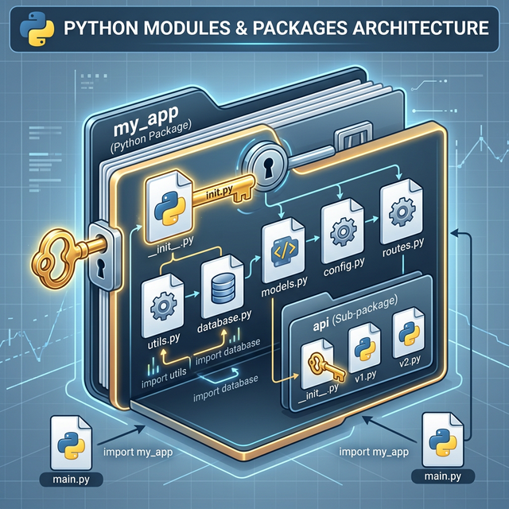
Modules and Packages Structure —
Visualizing the relationship between folders, init.py,
and .py files
Hierarchical Code
Organization
As application complexity increases, the transition from monolithic
scripts to modular architectures becomes essential for maintainability,
testing, and distribution.
Core Definitions:
Module: A single .py file
encapsulating related classes, functions, and variables. This is the
unit of code reuse.
Package: A directory-level construct containing
multiple modules and a mandatory __init__.py file. This
allows for hierarchical namespace management (e.g.,
pkg.subpkg.module).
In an enterprise environment, a “LogManager” might be a package
containing separate modules for collectors,
parsers, and exporters.
Module and Package
Architecture
Module: Any .py file containing Python
code.
Package: A directory that contains multiple modules
and a special __init__.py file.
Structure of a Professional Package:
my_project/
¦
+-- main.py # Entry point
+-- my_package/ # The Package
+-- __init__.py # Makes it a package
+-- logic.py # Module 1
+-- utils.py # Module 2
The Initialization
Sequence (__init__.py)
The __init__.py file signals to the Python interpreter
that a directory is a package. It is the first code executed when the
package is imported, allowing for namespace consolidation.
Now, in main.py, you can simply do:
from my_package import start_engine.
Execution Guard:
__name__ == "__main__"
To prevent side-effects during module importation (such as executing
test logic), Python provides the __name__ global variable.
When a script is executed directly, __name__ evaluates to
"__main__"; when imported, it evaluates to the module’s
name.
def solve():print("Solving complex math...")# This only runs if YOU run this file directly.# It WON'T run if someone else imports this file.if__name__=="__main__":print("Testing solve function...") solve()
Dependency
Management: Pip and Requirements
Enterprise-grade applications rely on external libraries managed
through the Python Package Index (PyPI).
pip install <package>: Artifact
retrieval and local installation.
pip freeze > requirements.txt:
State capture of current environment dependencies.
pip install -r requirements.txt:
Automated environment replication from a configuration file.
Technical Project:
Modular System Monitor
Construct a multi-file monitoring framework that segregates telemetry
collection from data reporting using package hierarchies.
Create a directory structure for an admin_utils package.
- Include a filesystem.py module with a
disk_stats() function. - Include an
__init__.py that exposes the disk_stats
function at the package level. - Demonstrate package invocation from an
external script.
Assignment 2:
Non-Destructive Entry Points
Develop a script logic_engine.py containing complex
computational logic. - Ensure that the script includes diagnostic
print statements. - Implement a guard to ensure these
diagnostics execute only during direct script testing
and are suppressed when the module is imported into a production
service.
Assignment 3: Dependency
Export
Install the pytz package (Timezone management) via
pip.
Export the updated environment state to a
requirements.txt file.
Knowledge Assessment
Q1. What is required to make a folder a “Package” in
Python- - A) A .txt file - B) An
__init__.py file - C) A main.py file - D) A
password
Q2. When is __name__ equal to
"__main__"- - A) When the file is imported - B)
When the file is run directly by the user - C) Always - D) Never
Q3. Which command is used to save all project dependencies to
a file- - A) pip save - B) pip list -
C) pip freeze > requirements.txt - D)
python export
Q4. What is a “Module” in Python- - A) A folder - B)
A single .py file - C) A type of loop - D) A built-in
function
Q5. Why use packages- - A) To make code run faster -
B) To organize large codebases and avoid naming conflicts - C) It’s
required by the internet - D) To hide your code from others
Technical Evaluation
Preparation
Q1:
“What is the difference between Absolute and Relative imports—
Ideal Answer: > “Absolute
imports specify the full path from the project’s root folder
(e.g., from my_app.models.user import User).
Relative imports use dots to indicate the current or
parent directory (e.g., from .user import User). Absolute
imports are generally preferred because they are clearer and less likely
to break if the file is moved.”
Q2: “What
happens when you import a module in Python—
Ideal Answer: > “Python first searches for the
module in its cache (sys.modules). If not found, it looks
in the current directory and the paths defined in
PYTHONPATH. Once found, it executes the entire
code of the module once and stores the resulting objects in a
module object for future use.”
Q3:
“Why is a requirements.txt file standard in Python
development—
Ideal Answer: > “It ensures Environment
Consistency. It allows other developers (or deployment servers)
to install the exact same versions of the libraries you used, preventing
‘it works on my machine’ bugs.”
def calculate(): return42if__name__=="__main__":print("This is a secret test.")
3. Requirements Prep
pip install coloramapip freeze > requirements.txt
Module 20:
Persistent Data Management (CSV & PDF)
Automating
Structured Data Ingestion and Reporting
Module 20 of 32
Objectives
Module competency requires: - Mastery of CSV (Comma Separated Values)
data ingestion using the csv module. - Implementation of
structured read/write operations via DictReader and
DictWriter. - Evaluation of PDF document parsing for
automated data extraction. - Development of an Automated Infrastructure
Audit Report. - Successful completion of the Core-Python Technical
Assessment.
graph TD
A[Python Script] --> B{File Type-}
B -->|CSV| C[DictReader/DictWriter]
B -->|PDF| D[PyPDF2/ReportLab]
C --> E[(Structured Data)]
D --> F[Visual Reports]
Structured Data I/O Beyond
Flat Files
While plaintext files suffice for basic logging, enterprise
automation requires interaction with structured formats like CSV for
data interchange and PDF for immutable reporting.
Operational Context:
CSV (Comma Separated Values): The standard for bulk
data transfer between databases, monitoring tools, and automation
scripts. Python’s native handling allows for high-velocity processing of
large-scale datasets.
PDF (Portable Document Format): Utilized for
generating finalized systems audit logs, compliance certificates, and
automated incident reports where document integrity is mandatory.
Automating these formats eliminates manual overhead in data
reconciliation and reporting workflows.
CSV Data Ingestion and
Serialization
Python has a built-in csv module. For professional work,
we use DictReader and DictWriter because they
let us use column headers as keys.
1. Reading CSV
Imagine a file users.csv: name,age,emailRahul,25,rahul@example.com
***
## PDF Extraction and Reporting Logic
Handling PDFs is complex, so we use external libraries like `PyPDF2` (install with `pip install PyPDF2`).
```python
import PyPDF2
def audit_pdf_security(filename):
with open(filename, 'rb') as file:
reader = PyPDF2.PdfReader(file)
# Scan initial page for specific security metadata
page = reader.pages[0]
return page.extract_text()
# content = audit_pdf_security('system_audit.pdf')
[!NOTE] PDF structure varies wildly. For complex tables, libraries
like tabula-py or pandas are often used after
extraction.
Completion of this module marks the conclusion of the Core Python
Foundation series (Modules 01-20). The next phase initiates the Advanced
Automation & Specialized Engineering track (Modules 21-32).
Technical Competency Recap:
Core Logic: Variables, Logic Operations, and
Control Flow.
Data Structures: Managed Sequences, Hash Maps, and
Set Theory.
Architecture: Procedural Abstraction, Variable
Scope, and Functional Programming.
OOP Standards: Encapsulation, Inheritance,
Abstraction, and Polymorphism.
System Operation: Namespace Management and
Structured File I/O.
Assignments
Assignment 1: Backup Log
Ingestion
Create a CSV file backups.csv with headers
timestamp,status,size_mb.
Implement a script to calculate the aggregate size of all successful
backups.
Assignment 2:
High-Priority Node Filtering
Implement a filter that reads inventory.csv and writes
only the records with uptime < 10 (High Priority) to a
new file critical_nodes.csv.
Assignment 3: PDF API
Research
Identify the PyPDF2 attribute used to extract metadata
(Author, Producer, etc.) from a PDF object.
Knowledge Assessment
Q1. What does CSV stand for- - A) Computer Standard
Value - B) Comma Separated Values - C) Complex Script Version - D)
Central Storage Vector
Q2. Which mode is used in open() to write to a
CSV file- - A) 'r' - B) 'w' - C)
'a' - D) 'x'
Q3. What is the benefit of using csv.DictReader
over a normal reader- - A) It’s faster - B) It
allows you to access data by column names (keys) - C) It only works with
dictionaries - D) It’s the only way to read files
Q4. Is the PyPDF2 library built into
Python- - A) Yes - B) No, it must be installed using
pip - C) Only on Mac/Linux - D) Only on Windows
Q5. When writing a CSV, what does newline=''
do- - A) It deletes the file - B) It prevents extra blank lines
between rows - C) It starts a new file - D) It adds page numbers
Technical Evaluation
Preparation
Q1:
“How do you handle large CSV files that don’t fit in memory—
Ideal Answer: > “Instead of reading the whole
file at once, Python’s csv module reads line-by-line using
an iterator. This memory-efficient approach allows us to process
gigabytes of data with very low RAM usage.”
Q2:
“What is the difference between a CSV and an Excel file (.xlsx)—
Ideal Answer: > “A CSV is a plain
text file with no formatting, colors, or formulas; it’s just
data. An Excel file is a binary (XML) file that
supports complex formatting. Python can read both, but CSV is much
easier and faster to process natively.”
Q3:
“What are your next steps after completing this Python course—
Ideal Answer: > “The next step is to choose a
specialization. For web development, I’d learn Django or
Flask. For Data Science, I’d learn
Pandas/NumPy. For Automation, I’d explore
Selenium or Scripting. The foundation is built; now
it’s time to build projects.”
Assessment Solution Key
1. Expense Tracker
import csvtotal =0withopen('expenses.csv', 'r') as f:for row in csv.DictReader(f): total +=float(row['cost'])print(f"Total: ${total}")
2. Honor Roll
import csvwithopen('students.csv', 'r') as fi, open('honor_roll.csv', 'w', newline='') as fo: reader = csv.DictReader(fi) writer = csv.DictWriter(fo, fieldnames=reader.fieldnames) writer.writeheader()for row in reader:ifint(row['score']) >90: writer.writerow(row)
Module 21: API Integration
for ITSM
RESTful
Web Services and Programmatic Service Management
Module 21 of 32
Objectives
Module competency requires: - Mastery of RESTful API (Application
Programming Interface) architectures. - Implementation of JSON
(JavaScript Object Notation) serialization and deserialization. -
Utilization of the requests library for synchronous HTTP
operations. - Evaluation of API Authentication mechanisms: API Keys and
Bearer Tokens. - Development of a RESTful Incident Orchestration
Utility.
RESTful API Architectures
An API serves as a programmatic interface enabling
discrete software systems to interchange data and execute remote
procedures.
Operational Context:
In an ITSM (IT Service Management) ecosystem, APIs facilitate the
automation of manual workflows. For example: -
ServiceNow: Python scripts can programmatically open
Change Requests (CRs) or retrieve configuration items (CIs) from the
CMDB. - Jira: Automation logic can transition issues
through a workflow or retrieve sprint velocity metrics.
These interactions typically utilize the **REST
(RepresentationalSystems communicate via REST APIs using standard HTTP
verbs (GET, POST, PUT, DELETE).
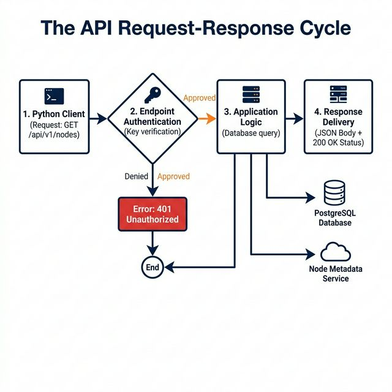
The API Request-Response Cycle —
Orchestrating data flow in SRE workflows
SRE PROD-Ready Tip
In production, API calls will fail due to network timeouts, rate
limiting, or backend crashes. Always implement a
try...except block and consider a retry-loop with
exponential backoff for critical automation tasks.
Operational Insight
“APIs are the glue of modern DevOps. Whether you are provisioning an
AWS instance or opening a Jira ticket, you are doing it via an API.
Think of these calls as remote function executions. They are powerful,
but they are also external dependencies that you must manage
defensively.” for resource manipulation.
Data Interchange: JSON
Standards
APIs usually send data formatted as JSON. It looks
exactly like a Python Dictionary!
import json# 1. Python Dict to JSON String (For sending to API)data = {"title": "Server Down", "priority": 1}json_string = json.dumps(data)# 2. JSON String to Python Dict (After receiving from API)received_data ='{"id": "INC-101", "status": "Open"}'python_dict = json.loads(received_data)print(python_dict["id"]) # Output: INC-101
Synchronous HTTP
Operations via requests
Interaction via the requests library provides a
high-level interface for executing HTTP operations against REST
endpoints.
new_incident = {"summary": "Storage latency threshold exceeded","description": "I/O wait time > 200ms on SAN-Cluster-04.","priority": "P2"}# Submitting a POST request to an ITSM endpointresponse = requests.post("https://httpbin.org/post", json=new_incident)print(f"HTTP Status: {response.status_code}") # 201 Created indicates successful resource generation
API Authentication
Mechanisms
Enterprise endpoints require identity verification via API
Keys or Bearer Tokens (JWT) to enforce access
control and prevent unauthorized resource manipulation.
Develop an automation utility that interfaces with an ITSM endpoint
to programmatically log incidents based on system telemetry errors.
# ============================================# PROJECT: RESTful Incident Orchestrator# ============================================import requestsimport jsondef generate_itsm_incident(short_desc, criticality):""" Executes an HTTP POST to an ITSM provider to generate a system incident. """ endpoint ="https://httpbin.org/post" payload = {"correlation_id": "AUTO-MON-772","description": short_desc,"impact_level": criticality,"assignment_group": "PLATFORM_OPERATIONS" }print(f"REQUEST: Initiating POST to {endpoint}...") response = requests.post(endpoint, json=payload, timeout=10)if response.status_code in [200, 201]: data = response.json()print("STATUS: Incident record successfully generated in provider system.")print(f"DATA_VERIFICATION: {data['json']['description']}")else:print(f"ERROR: Transaction failed. HTTP_CODE: {response.status_code}")# --- Execution Simulation ---alert_payload ="CRITICAL: Database connection pool exhaustion on DB-PROD-01"generate_itsm_incident(alert_payload, "HIGH")
Assignments
Assignment 1:
Automated Inventory Retrieval
Identify a public REST API (e.g., JSONPlaceholder or GitHub
API).
Implement a script to fetch a sequence of user resources.
Output the id, name, and
company fields for the first 10 items in the response
payload.
Assignment 2: Change
Request Serialization
Construct a Python dictionary modeling an ITSM “Change Request” (CR)
including cr_id, implementation_plan, and
risk_assessment.
Perform JSON serialization and output the resulting string.
Perform deserialization and programmatically update the
risk_assessment value to “MITIGATED”.
Assignment 3:
Global System Availability Checker
Define a sequence containing three target URLs (one valid, one 404
target, and one invalid domain).
Implement a logic block that executes a GET request against each URL
and classifies the status as “REACHABLE”, “NOT_FOUND”, or “NETWORK_FAIL”
using HTTP status code evaluation.
Knowledge Assessment
Q1. What does REST stand for- - A) Real Execution
Standard - B) Representational State Transfer - C) Remote Service
Template - D) Random Entry System
Q2. Which HTTP method is used to CREATE a new
ticket- - A) GET - B) DELETE - C) POST - D) PUT
Q3. What does a 401 status code mean- - A) Page not
found - B) Unauthorized (Login/Token required) - C) Success - D) Server
Error
Q4. Why do we prefer json.loads() over
eval()- - A) It’s faster - B) It is much safer
(prevents malicious code execution) - C) It’s shorter to write - D) It
only works with numbers
Q5. In the “Waiter Analogy”, what represents the
API- - A) The Cook - B) The Customer - C) The Waiter - D) The
Menu
Technical Evaluation
Preparation
Q1:
“What is the difference between an API Key and a Bearer Token—
Ideal Answer: > “An API Key is
usually a long-term identifier passed in the URL or headers to identify
a specific application. A Bearer Token (like a JWT) is
typically short-term and is generated after a successful login session.
Bearer tokens are more secure because they expire and are strictly tied
to a user session.”
Q2:
“What is the difference between JSON and a Python Dictionary—
Ideal Answer: > “A Python
Dictionary is a data structure residing in memory while the
script is running. JSON is a string-based data format
used to exchange that data over a network. While they look
similar, JSON is a standard that can be read by any language (Java, C++,
JS), whereas a Python Dict is specific to Python.”
Q3:
“How would you handle a ‘Timeout’ when calling an ITSM API—
Ideal Answer: > “I would use the
timeout parameter in the requests.get() or
requests.post() call (e.g., timeout=10).
Additionally, I would wrap the call in a try-except block
to catch requests.exceptions.Timeout and perhaps implement
a ‘Retry’ logic to try again after a few seconds.”
Assignment Solution Key
1. User Fetcher
import requestsdata = requests.get("https://jsonplaceholder.typicode.com/users").json()for user in data[:5]:print(f"{user['name']} | {user['email']}")
urls = ["https://google.com", "https://google.com/fake404"]for u in urls: r = requests.get(u)print(f"{u} -> {r.status_code}")
Module 22: SSH
& Remote Infrastructure Management
Programmatic
Secure Shell Execution and Network Automation
Module 22 of 32
Objectives
Module competency requires: - Evaluation of Paramiko for Linux/Unix
server automation. - Implementation of Netmiko for multi-vendor network
device configuration. - Execution of remote telemetry commands with
stream capture (stdin/stdout/stderr). - Automation of secure file
transfers via SFTP (Secure File Transfer Protocol). - Development of a
Multi-Node Infrastructure Health Auditor.
sequenceDiagram
participant PC as Python (Local)
participant SSH as SSH Protocol
participant SRV as Remote Server
PC->>SSH: Authentication (Key/Pass)
SSH->>SRV: Connection Established
PC->>SRV: c.run('command')
SRV-->>PC: stdout (Result)
Programmatic Remote
Infrastructure Access
In modern infrastructure operations, the capacity to execute commands
across distributed environments without manual intervention is critical
for maintaining consistency and velocity.
Operational Context:
SSH (Secure Shell) provides a secure tunnel for
remote command execution. While manual terminal access is standard for
troubleshooting, Python enables the orchestration of SSH sessions at
scale: - Server Fleet Management: Executing concurrent
patches or security audits across hundreds of Linux instances. -
Network Automation: Programmatically updating ACLs or
VLAN configurations on routers and switches. - Data
Exfiltration: Extracting syslog or application logs from
distributed nodes for centralized analysis.
Utilizing specialized libraries like Paramiko and Netmiko allows for
the systematic management of these remote sessions.
Protocol
Implementation: Paramiko vs. Netmiko
Python has two main tools for this:
Paramiko: The standard “Swiss Army Knife” for SSH.
Best for Linux/Unix servers.
Netmiko: Built on top of Paramiko. It
handles the quirks of network devices (Cisco, Juniper, Arista) that
don’t have a standard Linux shell.
Installation:pip install paramiko netmiko
Remote Command Execution
via Paramiko
Paramiko provides the foundational transport layer for SSHv2,
enabling secure authentication and command dispatch. Here is how you log
into a remote server and run a command.
***
## Secure Data Transfer (SFTP)
The SFTP subsystem allows for secure payload delivery or log retrieval over the established SSH tunnel.
Need to push a configuration file or pull a log file- SFTP is the way.
```python
import paramiko
client = paramiko.SSHClient()
client.set_missing_host_key_policy(paramiko.AutoAddPolicy())
client.connect("192.168.1.50", username="admin", password="SecretPassword123")
# Open SFTP Connection
sftp = client.open_sftp()
# Push a file: put(local_path, remote_path)
sftp.put("local_config.txt", "/home/admin/config.txt")
# Pull a file: get(remote_path, local_path)
sftp.get("/var/log/syslog", "remote_log.log")
sftp.close()
client.close()
Technical
Project: Multi-Node Infrastructure Health Auditor
Construct a specialized utility that iterates through an
infrastructure inventory, executes remote uptime queries, and identifies
nodes exceeding a specific instability threshold.
Develop a CSV inventory (nodes.csv) containing
target_ip, auth_user, and
auth_method.
Implement a script that ingests this CSV and executes a connection
verification for each node.
Knowledge Assessment
Q1. What is the main difference between SSH and
SFTP- - A) SSH is for web, SFTP is for files - B) SSH is for
remote commands, SFTP is for file transfer over SSH - C) SFTP is faster
than SSH - D) They are the same thing
Q2. Which library is specifically optimized for Network
Devices (Routers/Switches)- - A) Requests - B) Paramiko - C)
Netmiko - D) JSON
Q3. What does
client.set_missing_host_key_policy(paramiko.AutoAddPolicy())
do- - A) It deletes passwords - B) It automatically accepts the
server’s identity key the first time - C) It connects to the internet -
D) It’s for authentication
Q4. When running exec_command, what are the
three returned objects- - A) input, output, process - B) stdin,
stdout, stderr - C) read, write, append - D) head, body, footer
Q5. Why is it dangerous to hardcode passwords in these
scripts- - A) It makes the script run slower - B) Anyone who
reads the file can access your infrastructure - C) Python doesn’t
support strings in connect() - D) The server will reject the
connection
Technical Evaluation
Preparation
Q1:
“How do you handle ‘Interactive Prompts’ when running an SSH
command—
Ideal Answer: > “By default,
exec_command is non-interactive. If a command prompts for
input (like a confirmation or a second password), you can write to the
stdin object returned by the command. However, for complex
interactions, using Netmiko or Paramiko’s
invoke_shell() method is more reliable as it provides a
persistent interactive session.”
Q2:
“What is the most secure way to authenticate a Python script over
SSH—
Ideal Answer: > “The most secure way is to use
SSH Key-Based Authentication. Instead of a password,
the script uses a Private Key file (PKey object in
Paramiko). This prevents password theft and allows for automated logins
without manual entry.”
Q3:
“What happens if a remote server doesn’t respond- How do you prevent
your script from hanging—
Ideal Answer: > “I would always use the
timeout parameter in the .connect() call. This
ensures that if the server is down or the firewall is blocking the
connection, the script will wait only for a specified number of seconds
before raising a socket.timeout exception, allowing the
script to move on to the next server.”
import csvwithopen('inventory.csv') as f:for row in csv.DictReader(f):print(f"Connecting to {row['host']}...")
Module 23: Cloud
Automation (AWS & Azure)
Programmatic
Infrastructure Provisioning and Resource Lifecycle Management
Module 23 of 32
Objectives
Module competency requires: - Evaluation of Infrastructure as Code
(IaC) principles via Python SDKs. - Implementation of AWS resource
management utilizing the Boto3 library. - Integration with Azure SDK for
Python for multi-cloud operations. - Automation of Cloud Governance and
Cost Optimization workflows. - Development of a Cloud Compliance and
Resource Auditor.
graph LR
P[Python + Boto3] --> S3(AWS S3: Storage)
P --> EC2(AWS EC2: Servers)
P --> AS(Azure: Services)
style S3 fill:#f96
style EC2 fill:#f96
style AS fill:#0078d4,color:#fff
API-Driven Infrastructure
Abstraction
Cloud computing transforms physical hardware into a suite of
programmatically accessible services. Python serves as the orchestration
layer, enabling developers to provision and manage global infrastructure
via standardized SDKs.
Operational Context:
Infrastructure as Code (IaC) replaces manual portal
interactions with version-controlled scripts. This ensures: -
Environment Parity: Replicating development, staging,
and production environments with mathematical precision. -
Scalability: Dynamically adjusting resource capacity
(EC2 instances, S3 storage) based on real-time telemetry. -
Auditability: Maintaining a programmatic record of all
infrastructure modifications.
By leveraging AWS (Boto3) and Azure SDKs, engineers can implement
automated self-healing and cost-optimization logic directly into their
application lifecycle.
AWS Infrastructure
Orchestration via Boto3
Boto3 is the official Python SDK for Amazon Web
Services (AWS). It translates Python commands into AWS API calls.
1. Installation & Setup
pip install boto3Note: You usually need to
configure your credentials using the aws configure command
via the AWS CLI.
### 3. Managing EC2 Instances (Servers)
```python
ec2 = boto3.resource('ec2')
# Start a specific server by ID
# ec2.Instance('i-0123456789abcdef0').start()
# Stop a server
# ec2.Instance('i-0123456789abcdef0').stop()
from azure.identity import DefaultAzureCredentialfrom azure.mgmt.compute import ComputeManagementClient# Authenticate automatically using environment variablescredential = DefaultAzureCredential()# client = ComputeManagementClient(credential, subscription_id)
Programmatic
Governance and Cost Optimization
One of the most valuable tasks for an IT Ops Pro is saving
money. Idle servers cost thousands of dollars.
Pattern for Cost-Checking: 1. List all running
instances. 2. Check the “CPU Utilization” metric (using
CloudWatch). 3. If CPU usage has been < 5%
for 7 days, flag it for deletion.
Technical
Project: Cloud Compliance and Resource Auditor
Develop an automated auditor that scans an EC2 inventory for
compliance with organizational tagging standards, identifying resources
missing mandatory ‘Project’ anchors.
Implement a Boto3 script that enumerates all S3 buckets in the
current account.
For each bucket, calculate and output the total object count.
Assignment 2: Orphaned
Resource Cleanup
Construct a function terminate_unlabeled_nodes() that
identifies EC2 instances where the Name attribute is either
empty or contains ‘TEMP’ and initiates a stop command.
Assignment 3:
Infrastructure Stack Mapping
Design a high-level Python orchestration roadmap for a 3-tier
application:
Identify the SDK module for Managed Database services (e.g.,
RDS).
Identify the SDK module for Elastic Load Balancing.
Identify the SDK module for CloudWatch Metric Alarms.
Knowledge Assessment
Q1. What is an SDK- - A) System Disk Key - B)
Software Development Kit - C) Server Delivery Kit - D) Security Data
Kernel
Q2. Which library is the official AWS SDK for
Python- - A) AWS-Tool - B) Paramiko - C) Boto3 - D) CloudPy
Q3. What is “Infrastructure as Code” (IaC)- - A)
Writing code on a server - B) Managing and provisioning infrastructure
using configuration files or scripts - C) A type of database - D) Hiding
server code
Q4. What is the benefit of automating Cloud Cost
Management- - A) It makes the cloud faster - B) It
automatically identifies and removes waste to save budget - C) It’s
required by law - D) It changes the colors of the portal
Q5. In Boto3, what is the difference between a ‘Client’ and a
‘Resource’- - A) No difference - B) ‘Client’ is low-level
(API-like), ‘Resource’ is high-level (Object-Oriented) - C) ‘Client’ is
for Azure, ‘Resource’ is for AWS - D) ‘Client’ is free, ‘Resource’ costs
money
Technical Evaluation
Preparation
Q1:
“How do you securely handle Cloud Credentials in a Python script—
Ideal Answer: > “I would never
hardcode credentials. For local development, I use environment variables
or the .aws/credentials file. For production code running
on the cloud (like on an EC2 instance), I use IAM
Roles. This allows the script to authenticate automatically
using temporary security tokens without storing any secrets in the
code.”
Q2:
“What is Idempotency, and why is it important in Cloud Automation—
Ideal Answer: > “Idempotency
means that running a script multiple times has the same effect as
running it once. For example, if a script creates a server, it should
first check if the server already exists. If I run it twice, it
shouldn’t create two servers. This prevents accidental duplicate
resources and wasted costs.”
Q3:
“How does Python help in a Multi-Cloud (AWS + Azure) environment—
Ideal Answer: > “Python acts as a ‘Common
Language’. By using SDKs for different providers, I can write a single
orchestrator script that manages an AWS database and an Azure frontend
simultaneously, creating a unified management layer.”
# Logicfor instance in ec2.instances.all():if"Dev"in instance.tags[0]['Value']: instance.stop()
Module 24: Scheduled
Tasks & Observability
Engineering
Autonomous and Audit-Compliant Automation Systems
Module 24 of 32
Objectives
Module competency requires: - Discrimination between Event-Driven
Triggers and Deterministic Scheduling. - Implementation of standardized
Logging frameworks for operational auditability. - Mastery of OS-level
scheduling via Crontab (Linux) and Task Scheduler (Windows). -
Utilization of the schedule library for persistent Python
worker processes. - Development of an Autonomous Monitoring and Backup
Lifecycle Utility.
graph TD
T[Trigger: Windows Task Scheduler] --> S[Python Script]
S --> L{Success-}
L -->|Yes| OK[Log: INFO Status OK]
L -->|No| ERR[Log: ERROR Traceback]
Deterministic Automation
Triggers
Effective infrastructure automation relies on the transition from
manual, ad-hoc execution to autonomous, scheduled operations. This
ensures that critical maintenance and monitoring tasks occur with
mathematical regularity.
Operational Context:
In high-availability environments, manual execution is a primary
source of configuration drift and operational failure. By employing
Deterministic Scheduling, engineers ensure: -
Consistency: Routine tasks (e.g., log rotation, DB
vacuuming) execute at predictable intervals avoiding human error. -
Resource Optimization: CPU-intensive operations are
scheduled during low-utilization windows to prevent service degradation.
- Autonomous Recovery: Health checks and self-healing
scripts run continuously to detect and mitigate anomalies without
operator intervention.
A robust automation stack integrates both OS-level schedulers and
technical internal logging for forensic observability.
Standardized
Logging for Operational Auditability
In autonomous systems, the print() statement is
insufficient for post-incident forensics. A professional
Logging framework provides a persistent, multi-level audit
trail essential for troubleshooting 3 AM failures.
import logging# 1. Configure Logginglogging.basicConfig( filename='app_audit.log', level=logging.INFO,format='%(asctime)s | %(levelname)s | %(message)s')# 2. Use different levelslogging.debug("This is for developers only.")logging.info("Server health check starting...")logging.warning("Disk space is getting low (15% left).")logging.error("Failed to connect to Database!")logging.critical("CPU Temperature exceeded limit! Shutting down.")
Automated Task
Orchestration Strategies
A. The OS Way (Preferred
for Production)
This is the most reliable way as it doesn’t require Python to keep
running in the background. - Windows: Use Task
Scheduler. Point it to your python.exe and pass
your script as an argument. - Linux: Use
Crontab. Add a line like
0 3 * * * /usr/bin/python3 /path/to/script.py to run every
day at 3 AM.
B. The Python Way (The
schedule Library)
Great for simple, long-running background tasks.
pip install schedule
import scheduleimport timedef job():print("Performing daily cleanup...")# Schedule the taskschedule.every().day.at("03:00").do(job)schedule.every(10).minutes.do(job)whileTrue: schedule.run_pending() time.sleep(1) # Wait 1 second before checking again
Construct a production-grade utility that executes a system backup,
validates the operation, and maintains a multi-level audit log for
compliance review.
Implement a script that logs a “TELEMETRY_STATUS: OK” entry at
10-second intervals for a 2-minute duration.
Ensure the log format includes the Unix timestamp and log
level.
Assignment 2:
OS-Level Scheduler Implementation
Define a high-level procedure for scheduling a Python cleanup script
to run at 2 AM daily on a Windows-based system via Task Scheduler.
List the absolute requirements for the ‘Action’ and ‘Trigger’
configurations.
Assignment 3: Critical
Exception Alerting
Implement a script that monitors for the presence of a specific
configuration file.
If missing, generate a CRITICAL log entry and simulate
a Slack/Email notification trigger by printing “DISPATCHING_ALERTS:
INFRASTRUCTURE_FAILURE”.
Knowledge Assessment
Q1. Why is the logging library better than
print()- - A) It runs faster - B) It can save
output to a file and categorize messages by severity - C) It uses less
memory - D) It’s only for web development
Q2. What is the standard scheduling tool on Linux- -
A) Task Scheduler - B) System Monitor - C) Cron - D) Event Viewer
Q3. Which logging level is used for “Routine information”
about script progress- - A) ERROR - B) INFO - C) DEBUG - D)
CRITICAL
Q4. What does asctime do in a logging
format- - A) Changes the font - B) Adds a timestamp to each log
entry - C) Deletes old logs - D) Encrypts the data
Q5. When using the schedule library, what is the
purpose of the while True loop- - A) It’s an error
in the code - B) It keeps the Python process alive to check if any tasks
are due - C) It makes the task run infinite times per second - D) It’s
for security
Technical Evaluation
Preparation
Q1:
“How do you handle log file sizes in a production system—
Ideal Answer: > “In production, we use
Log Rotation. Instead of one giant 10GB file, we use
the RotatingFileHandler in Python’s logging library. This
closes the current file when it reaches a certain size and starts a new
one, keeping only the most recent (e.g., 5) logs and deleting the
oldest.”
Q2:
“What happens if a scheduled task crashes while the script is
running—
Ideal Answer: > “This is why Logging
and Try-Except are vital. For OS-level schedulers
(Cron/Task Scheduler), we configure the ‘Return Code’. If Python exits
with an error code, the OS can be configured to retry the task or send
an alert via email or Slack.”
Q3:
“Should you use Python to schedule tasks, or the OS Scheduler—
Ideal Answer: > “For server-side automation, the
OS Scheduler (Cron/Task Scheduler) is better because
it’s managed by the system and starts automatically on boot.
Python-based schedulers (like the schedule library) are
better for long-running worker processes or applications where the
overhead of an OS scheduler is too complex.”
UI-Driven
Automation for Legacy Systems and Web Orchestration
Module 25 of 32
Objectives
Module competency requires: - Discrimination between API-based
integration and UI-driven RPA (Robotic Process Automation). -
Implementation of Selenium for cross-browser web orchestration and data
extraction. - Management of desktop-level automation via PyAutoGUI for
legacy interface interaction. - Evaluation of Headless execution
environments for server-side RPA deployment. - Development of an
Automated Legacy Portal Authentication and Data Ingestion project.
graph LR
P[Python] --> S[Selenium: Web RPA]
P --> PA[PyAutoGUI: Desktop RPA]
S --> B[Chrome/Edge]
PA --> D[Mouse/Keyboard]
UI-Driven
Automation: The Bridge to Legacy Systems
Robotic Process Automation (RPA) involves the
programmatic simulation of human-computer interaction. While API-first
automation is the preferred standard, RPA serves as a critical bridge
for systems that lack modern integration endpoints.
Operational Context:
In enterprise environments, legacy ERPs, mainframe terminals, and
3rd-party portals often require manual data entry and navigation. Python
enables the automation of these workflows by: - Web
Orchestration: Utilizing Selenium to navigate complex DOM
structures, handle logins, and scrape telemetry data. - Desktop
Simulation: Utilizing PyAutoGUI to interact with native
Windows/Linux applications via pixel-level coordinates and keyboard
injection. - Data Ingestion: Automating the retrieval
of reports from platforms that only provide “Export to Excel” via the
UI.
RPA should be viewed as a tactical solution for technical debt where
standard API access is unavailable.
Web Orchestration via
Selenium
Selenium WebDriver facilitates the programmatic control of modern
browsers (Chrome, Edge, Firefox), enabling complex interaction
sequences. Selenium is a tool that lets Python take
control of a web browser (Chrome, Edge, Firefox). >
Setup:pip install selenium
1. Basic Navigation
from selenium import webdriverfrom selenium.webdriver.common.by import Byfrom selenium.webdriver.common.keys import Keysimport time# WebDriver Initializationdriver = webdriver.Chrome()try:# Target Resource Acquisition driver.get("https://www.google.com")# Locating search interface and executing query search_element = driver.find_element(By.NAME, "q") search_element.send_keys("Python Infrastructure Automation"+ Keys.RETURN)# Operational Delay for DOM stabilization time.sleep(3) finally:# Teardown: Closing the session driver.quit()
from selenium.webdriver.support.ui import WebDriverWait
from selenium.webdriver.support import expected_conditions as EC
# Implementing explicit wait for DOM element availability
submit_node = WebDriverWait(driver, 10).until(
EC.presence_of_element_located((By.ID, "login_button"))
)
submit_node.click()
***
## Desktop Interface Automation via PyAutoGUI
For applications outside the browser context, PyAutoGUI provides programmatic access to the OS-level input stream (mouse and keyboard).
> **Setup:** `pip install pyautogui`
```python
import pyautogui
# --- THE SAFETY FAILSAFE ---
# If your script goes crazy, SLAM the mouse into any corner of the screen
# to kill the script immediately.
pyautogui.FAILSAFE = True
# 1. Move the mouse to coordinates (X, Y)
pyautogui.moveTo(100, 150, duration=1)
# 2. Click
pyautogui.click()
# 3. Type text
pyautogui.write("Hello, World!", interval=0.1)
# 4. Press special keys
pyautogui.press('enter')
Implement a Selenium script that navigates to a technical
documentation site (e.g., Python.org or Wikipedia).
Programmatically search for “Automation” and extract the first 3
lines of the descriptive text.
Assignment 2: Desktop
Coordinate Mapping
Develop a PyAutoGUI script that captures and prints the current
mouse coordinates every 2 seconds for a 1-minute interval.
Identify the (X, Y) coordinates of the ‘Minimize’ button for one
application.
Assignment 3: Integrated
Form Processor
Implement a script that programmatically populates a sample
multi-field form (e.g., Name, Dept, Priority) and triggers a mock
‘Submit’ event using Selenium.
Knowledge Assessment
Q1. When should you choose RPA over an API- - A)
Always - B) When the target system has no API or is a legacy desktop app
- C) When you want the script to run faster - D) It’s never better
Q2. What is “Headless” mode in Selenium- - A) A mode
with no security - B) Running the browser in the background without a
visible window - C) A mode that doesn’t use Python - D) A browser that
has no address bar
Q3. How do you stop a PyAutoGUI script that has lost
control- - A) Unplug the computer - B) Move the mouse to any
corner of the screen (Failsafe) - C) Press ‘Escape’ 10 times - D) It
cannot be stopped
Q4. Which library is used to find elements on a webpage via
CSS or ID- - A) PyAutoGUI - B) Requests - C) Selenium - D)
JSON
Q5. Why is a ‘Wait’ (WebDriverWait) important in Web
RPA- - A) To save electricity - B) To ensure the script doesn’t
click an element before it’s loaded/rendered - C) To make the code look
more professional - D) It’s required by Google Chrome
Technical Evaluation
Preparation
Q1: “Why is RPA
often called ‘Flaky’ or ‘Brittle’—
Ideal Answer: > “RPA relies on the User Interface
(UI). If the website developer changes a button’s ID from
login to sign-in, or if a pop-up ad appears,
the script will break. This makes it ‘brittle’ compared to APIs, which
remain stable even if the visual design changes. Good RPA developers
handle this by using ‘Robust Selectors’ and ‘Implicit/Explicit
Waits’.”
Q2:
“What is the difference between PyAutoGUI and Selenium—
Ideal Answer: > “Selenium is specifically for
Web Browsers; it ‘knows’ about HTML, buttons, and text
fields. PyAutoGUI is for the Desktop
OS; it only knows about pixel coordinates and keyboard keys.
Selenium is better for websites, but PyAutoGUI is the only choice for
automating older Windows/Mac software that isn’t in a browser.”
Q3:
“How do you automate a process that requires solving a Captcha—
Ideal Answer: > “Technically, Captchas are
designed to stop bots! However, in a professional setting, we usually
ask the IT team to provide a ‘Bypass Token’ for our automation IP, or we
use a 3rd-party ‘Captcha Solver’ API. If those aren’t options, we might
have the script pause and ask a human to solve the Captcha before
continuing.”
import pyautogui# Click to focus the app firstpyautogui.dragRel(100, 0, duration=1)pyautogui.dragRel(0, 100, duration=1)pyautogui.dragRel(-100, 0, duration=1)pyautogui.dragRel(0, -100, duration=1)
Module 26:
Infrastructure Orchestration Capstone
Integrating
Disparate Subsystems into a Unified Operational Framework
Module 26 of 32
Objectives
Module competency requires: - Orchestration of multi-vendor
technologies (SSH, REST, SDKs) within a single execution context. -
Implementation of remote diagnostic workflows via Paramiko and Netmiko.
- Management of programmatic remediation and audit-compliant logging. -
Integration of automated incident resolution via RESTful API endpoints.
- Synthesis of all prior course modules into a production-grade
infrastructure utility.
The maturity of an automation practice is measured by its capacity to
bridge isolated technical silos. A production-grade orchestrator must
monitor, diagnose, remediate, and report across the entire
infrastructure stack.
Operational Workflow
Scenario:
Telemetry Analysis: An automated monitor detects a
service degradation (e.g., near-capacity disk utilization) on a remote
node.
Diagnostic Handshake: The orchestrator initiates a
secure SSH session to interrogate the filesystem.
Automated Remediation: The script identifies
non-critical artifacts (e.g., expired logs) and executes a programmatic
purge or archival.
Audit Persistence: Every operation is committed to
a centralized, categorized log for forensic review.
Ticketing Integration: The orchestrator interacts
with an ITSM platform (ServiceNow/Jira) to transition the incident to a
‘Resolved’ state.
This end-to-end cycle eliminates manual latency and ensures
high-availability service standards.
***
## Assignments
### Assignment 1: Cloud-Compliance Ticketing Link
- Implement a script that programmatically audits S3 buckets for specific naming conventions or visibility flags.
- If a non-compliant bucket is detected, automatically generate a "Compliance Audit" incident via a mock REST API endpoint.
### Assignment 2: Remote Log Ingestion and Local Aggregation
- Construct an SSH-based utility that extracts the final 50 lines of a remote system log.
- Programmatically ingest these lines and append them to a local audit log with appropriate metadata tagging (e.g., `SOURCE_IP`, `IMPORT_TIMESTAMP`).
### Assignment 3: RPA-to-API Bridge
- Utilize Selenium to monitor a web-based dashboard for specific error indicators (e.g., CSS class 'alert-critical').
- Upon detection, trigger an API POST request to a Slack webhook or ITSM endpoint to alert the engineering team.
***
## Cumulative Knowledge Assessment
**Q1. In our Capstone, why did we use `logging` instead of just printing the errors-**
- A) To make the code look longer
- B) To ensure a persistent record exists for audits and troubleshooting after the script finishes
- C) Because `print()` doesn't work in loops
- D) It's a requirement for AWS
**Q2. Which library would you use if you needed to automate a server that has NO API but only a Command Line-**
- A) Selenium
- B) Paramiko/Netmiko
- C) Boto3
- D) JSON
**Q3. What is the standard format for exchanging data between two different IT systems (e.g., Python and ServiceNow)-**
- A) CSV
- B) JSON
- C) PDF
- D) TXT
**Q4. If a script needs to run every Sunday at 12 PM, where should you configure it-**
- A) Inside a `while True` loop in Python
- B) In the OS Scheduler (Cron or Windows Task Scheduler)
- C) By manually clicking it every Sunday
- D) In the AWS Console
**Q5. You've completed 26 Modules. What is the most important rule of Professional Python Development-**
- A) Write as many lines as possible
- B) Never hardcode secrets (Passwords/Keys), use Logging, and handle your Exceptions
- C) Use only the newest libraries
- D) Scripts should never be longer than 50 lines
***
## Technical Evaluation Preparation
### Q1: "How do you ensure your automation script doesn't accidentally cause a 'Self-DOS' (Denial of Service) on your own infrastructure—
**Ideal Answer:**
> "I implement **Rate Limiting** and **Error Backoff**. If a script is checking 1,000 servers, it shouldn't connect to all of them at once. I would use batching (e.g., 10 at a time) and if the API starts returning 'Busy' signals, the script should use an exponential backoff to wait longer between retries."
### Q2: "Discuss the security implications of automated SSH keys vs. passwords."
**Ideal Answer:**
> "Passwords are prone to brute-force and must be managed in secrets vaults. **SSH Key-Based Authentication** is superior because it uses cryptography. However, the 'Private Key' itself must be protected. If a script runs on a central automation server, that server's security becomes the single point of failure. We restrict keys using 'IP Whitelisting' and 'Command Restrictions' (authorized_keys) so the key can ONLY run the specific maintenance script, and nothing else."
### Q3: "What is the role of 'Monitoring the Monitors'—
**Ideal Answer:**
> "If you have a script that monitors your servers, you need another system to monitor that the script itself is actually running. A common technique is the **'Dead Man's Snitch'** or a 'Heartbeat API'. The script sends a signal to a monitoring tool every time it completes. If the tool doesn't hear from the script for 24 hours, it alerts the human team that the automation has failed."
***
## Advanced Proficiency Roadmap
Completion of the Infrastructure Tooling track signifies a foundational mastery of Python-driven operations.
### Professional Development:
1. **Source Control Implementation**: Maintain all orchestration scripts in a version-controlled repository (Git) to build a professional portfolio.
2. **Infrastructure-as-Code (IaC)**: Transition from imperative scripting to declarative frameworks like **Terraform** or **Ansible**.
3. **Enterprise Architecture**: Explore specialized frameworks like **Django** or **Flask** for developing internal IT control portals and dashboards.
Continuous automation ensures operational resilience. Forward focused.
***
***
# Module 27: Infrastructure as Code (Fabric & Ansible)
### *Programmatic Configuration Management and Fleet Orchestration*
Module 27 of 32
***
## Objectives
Module competency requires:
- Evaluation of the Infrastructure as Code (IaC) paradigm for lifecycle management.
- Implementation of imperative task automation via the Fabric library.
- Analysis of Ansible’s declarative architecture and Python-based extensibility.
- Mastery of state-based configuration and idempotent execution principles.
***

***
## Orchestration Paradigms: Imperative vs. Declarative
Infrastructure management has transitioned from manual, procedural execution to automated, state-defined orchestration. Understanding the distinction between these two approaches is critical for scalable operations.
### Imperative Orchestration (Fabric):
Focuses on the **procedure**. The operator defines a specific sequence of commands (the "how") to achieve a result.
- **Example**: "Connect to the node, run `apt update`, then run `apt install nginx`."
- **Characteristic**: Explicit command execution via Pythonic tasks.
### Declarative Orchestration (Ansible):
Focuses on the **state**. The operator defines the desired final configuration of the system (the "what"), and the orchestration engine determines the necessary actions to reach that state.
- **Example**: "Ensure `nginx` is present and in a 'started' state."
- **Characteristic**: Abstracted state management utilizing YAML and Python-based modules.
Utilizing IaC ensures that environment configurations are version-controlled, repeatable, and resistant to manual configuration drift.
***
## Imperative Task Orchestration via Fabric
Fabric is a high-level Python library that abstracts the complexities of Paramiko, enabling the execution of shell commands across remote inventory groups via Pythonic task definitions.
### Code Example: Checking Uptime
```python
from fabric import Connection, task
@task
def check_uptime(c):
"""A task that runs on the server."""
result = c.run('uptime', hide=True)
print(f"Server {c.host} says: {result.stdout.strip()}")
# How to run (via CLI):
# fab -H server1,server2 check-uptime
Syntax Breakdown:
c.run('uptime', hide=True)
Part
Name
What it Does
c
Connection Object
Represents the SSH session to the remote server.
.run()
Method
Executes the string argument as a shell command on the remote
side.
'uptime'
Command String
The Linux command to be executed.
hide=True
Parameter
Prevents the remote output from being printed to your local terminal
immediately (useful for parsing).
result.stdout
Attribute
contains the text returned by the server.
Declarative
Configuration Management via Ansible
Ansible is a Python-powered orchestration engine that utilizes YAML
(Yet Another Markup Language) to define systemic states. It operates
over standard SSH transports, requiring no remote agent residency.
Implement a Fabric-based utility to enforce a standardized Message of
the Day (MOTD) across a distributed server fleet, ensuring
organizational policy compliance.
# ============================================# PROJECT: Fleet Banner Standardizer# ============================================from fabric import Group# Target Inventory Definitionnode_fleet = ["10.0.0.1", "10.0.0.2", "10.0.0.3"]fleet_group = Group(*node_fleet, user="svc_automation", connect_kwargs={"password": "SecurePayload_123"})POLICY_BANNER ="""************************************************** ENTERPRISE ASSET: UNAUTHORIZED ACCESS IS ** STRICTLY PROHIBITED. ALL SESSIONS LOGGED. **************************************************"""def synchronize_compliance_banners():print(f"STATUS: Initiating banner convergence for {len(fleet_group)} nodes...")# Executing state enforcement via sudo-escalated tee commandfor connection in fleet_group:try:print(f"STATUS: Updating node {connection.host}...")# Overwriting /etc/motd to enforce compliance connection.run(f"echo '{POLICY_BANNER}' | sudo tee /etc/motd", hide=True)print(f"VERIFIED: Node {connection.host} aligned with policy.")exceptExceptionas error:print(f"ERROR: Convergence failed on {connection.host}: {error}")if__name__=="__main__": synchronize_compliance_banners()
Assignments
Assignment 1: Fleet
Inventory Auditor
Implement a Fabric script to collect the kernel version
(uname -r) from a list of target nodes.
Collate the results into a programmatic report.
Assignment 2:
Idempotent Package Verification
Construct a Fabric task that verifies the presence of the
unzip utility.
If absent, execute a non-interactive installation command
(apt install -y unzip).
Assignment 3: YAML
Configuration Ingestion
Develop a Python script that utilizes the PyYAML
library to ingest a structured deploy_config.yaml
file.
Print the resulting Python dictionary to verify data integrity.
Knowledge Assessment
Q1. What does “Declarative” mean in the context of
IaC- - A) You list every step to reach a goal. - B) You
describe the final state, and the tool handles the steps. - C) It’s a
type of Python variable. - D) It means the code is encrypted.
Q2. Why is Fabric considered more “Imperative” than
Ansible- - A) It’s faster. - B) You manually tell it which
commands to run in sequence (c.run). - C) It doesn’t use
SSH. - D) It only works on Windows.
Q3. Which Python engine does Ansible use for its
templates- - A) Django - B) Jinja2 - C) Flask - D) Requests
Q4. What is the main benefit of “Idempotency” in IaC tools
like Ansible- - A) It makes the code run faster. - B) Running
the script twice yields the same result without making redundant
changes. - C) It automatically deletes old files. - D) It’s a security
feature for passwords.
Q5. Where does Fabric get the server list from- - A)
It guesses them. - B) You pass them to a Group or specify
them in the fab command line. - C) It reads them from your
browser history. - D) It only works on localhost.
Technical Evaluation
Preparation
Q1:
“What is ‘Configuration Drift’ and how does IaC solve it—
Ideal Answer: > “Configuration Drift happens when
servers that were supposed to be identical become different over time
due to manual one-off changes. IaC solves this by making the ‘Code’ the
single source of truth. If you run the IaC script, it resets all servers
to the exact state defined in the code, erasing any ‘drift’.”
Q2:
“Can you explain the difference between Fabric and Paramiko—
Ideal Answer: > “Paramiko is a low-level SSH
library. Fabric is a high-level tool built on top of Paramiko.
Fabric adds features like task management, command-line integration, and
the ability to run tasks across groups of servers easily, which would
require a lot of manual boilerplate code in pure Paramiko.”
Q3:
“What are the risks of using ‘sudo’ in an automated script—
Ideal Answer: > “Automated sudo
requires either a password-less sudo configuration (risky) or passing a
password in the script (very risky). The best practice is to use
‘Privilege Escalation’ tools built into the IaC platform (like Ansible’s
become or Fabric’s sudo prompts) and store
those credentials in a secure vault like HashiCorp Vault or AWS Secrets
Manager.”
Module Summary
Accomplished
Details
Understood IaC
Learned the difference between Imperative (Fabric) and Declarative
(Ansible).
Fabric Fundamentals
Learned to use Connection and run() for
remote automation.
Ansible Concepts
Explored Jinja2 and YAML integration with Python.
Practical Project
Built a server banner standardizer for IT policy compliance.
Orchestrating
the AWS Control Plane for Scalable Infrastructure Operations
Module 28 of 32
Objectives
Module competency requires: - Evaluation of S3 Lifecycle Policies and
Versioning via programmatic interfaces. - Implementation of EC2 instance
state orchestration (Provisioning vs. Hibernation). - Management of
large-scale resource discovery utilizing Boto3 Paginators. - Automation
of cost-optimization logic for non-compliant or idle infrastructure
resources.
Effective cloud management requires the transition from simple
resource provisioning to technical lifecycle governance. As
infrastructure scales, automated auditing and state-based management
become essential for fiscal and operational stability.
Operational Context:
In high-scale environments, manual resource tracking is insufficient.
Advanced Boto3 automation allows for: - Storage
Governance: Programmatically enforcing lifecycle rules and
auditing bucket age to prevent data bloat and unnecessary storage costs.
- Environment Hibernation: Orchestrating instance
states (Start/Stop) based on operational windows (e.g., Dev/Test
environments) to reduce compute overhead. - Resource
Scoping: Utilizing server-side filtering and pagination to
efficiently navigate large-scale resource inventories (EC2 clusters, RDS
instances).
These advanced patterns ensure that cloud infrastructure remains
lean, secure, and aligned with organizational budget constraints.
Programmatic S3
Governance: Lifecycle & Auditing
Resources in the S3 subsystem must be audited regularly to identify
stagnant data and enforce archival policies.
***
## EC2 State Orchestration and Pagination Strategy
Efficient instance management involves controlling power states across large-scale clusters.
### Handling API Pagination
When querying large-scale inventories (e.g., >50 instances), the AWS API truncates responses. Boto3 `Paginators` are utilized to ensure complete data retrieval.
```python
ec2 = boto3.client('ec2')
paginator = ec2.get_paginator('describe_instances')
# Use paginate() to loop through multiple 'pages' of results
for page in paginator.paginate(Filters=[{'Name': 'instance-state-name', 'Values': ['running']}]):
for reservation in page['Reservations']:
for instance in reservation['Instances']:
print(f"ID: {instance['InstanceId']} is RUNNING.")
Syntax Breakdown:
paginator.paginate()
Part
Name
What it Does
get_paginator()
Method
Creates a specialized object designed to handle large result
sets.
'describe_instances'
API Action
Tells the paginator which AWS command it’s automating.
paginate()
Method
Executes the actual API calls page-by-page.
Filters
Parameter
A list of dictionaries that restricts the search (e.g., only
‘running’ servers).
Develop a production utility that identifies EC2 instances tagged
with environment-specific metadata (Env: Dev) and initiates
a stop command to optimize compute expenditure.
Implement a Boto3 script that enumerates object keys in a target S3
bucket.
Calculate and output the count of objects containing
.tmp or .bak extensions.
Assignment 2: Global State
Inventory
Develop a utility that programmatically calculates the distribution
of EC2 states (e.g., running, stopped,
pending) across the account.
Output the results as a structured dictionary.
Assignment 3:
Compliance Metadata Verification
Implement a script to audit all S3 buckets for the presence of a
mandatory CostCenter tag.
Log the names of any non-compliant buckets.
Knowledge Assessment
Q1. Why should you use a ‘Paginator’ in Boto3- - A)
To make the code look professional. - B) To retrieve all resources when
the count exceeds the standard API response limit (usually 50 or 100). -
C) To delete files automatically. - D) It’s only required for S3.
Q2. What happens to the data on an EC2 instance’s ‘Instance
Store’ (Temporary) volume if you STOP it- - A) It is saved. -
B) It is lost (Ephemeral). - C) It is moved to S3. - D) It is
encrypted.
Q3. Which boto3 object is higher-level and more
“Pythonic”- - A) boto3.client - B)
boto3.resource - C) boto3.session - D)
boto3.api
Q4. What is an S3 ‘Lifecycle Policy’- - A) A rule
that says you cannot delete a bucket. - B) A set of rules to
automatically move objects to cheaper storage or delete them after a
certain time. - C) A security setting for passwords. - D) A way to count
files.
Q5. How do you find instances with a specific tag using
boto3.resource- - A) By checking every instance in
a loop. - B) Using the .filter(Filters=[...]) method. - C)
It is not possible to filter by tags. - D) By looking at the
instance-id.
Technical Evaluation
Preparation
Q1:
“Explain the difference between Boto3.client and
Boto3.resource.”
Ideal Answer: > “client is the
low-level mapping to the AWS service API. It returns data as
Dictionaries and lists. resource is a high-level,
object-oriented wrapper. It allows you to interact with AWS resources as
Python objects (e.g., bucket.upload_file()).
client is more technical (covers 100% of AWS features),
while resource is easier to read but might missing some
newer features.”
Q2:
“How would you handle AWS API Rate Limiting (Throttling) in a Python
script—
Ideal Answer: > “Boto3 has built-in retry logic
with ‘Exponential Backoff’. However, for massive operations, I would
implement my own ‘Wait’ logic or use Python’s time.sleep().
I would also try to use ‘Filters’ at the API level rather than pulling
all data and filtering in Python, which reduces the number of calls and
the size of the response.”
Q3:
“What is ‘S3 Versioning’ and why would an automation script need to be
aware of it—
Ideal Answer: > “S3 Versioning keeps multiple
versions of an object in the same bucket. If a script is designed to
‘delete’ objects to save space, simply calling
delete_object might just create a ‘Delete Marker’, keeping
the old versions (and the costs) hidden. The script must be written to
specifically iterate through and delete ‘object versions’ if the goal is
permanent cleanup.”
Module Summary
Accomplished
Details
Advanced S3
Audited bucket age and learned about Lifecycle/Versioning.
State Automation
Used resource.filter() to manage groups of
servers.
API Optimization
Handled large data sets using Boto3 Paginators.
Cost Management
Built a production-ready “Weekend Saver” automation script.
Next: Module 29 — Containerization with Python (Docker
SDK)
Managing
Containerized Workloads and Image Lifecycles via Python
Module 29 of 32
Objectives
Module competency requires: - Configuration of the Docker SDK for
Python to interface with the local engine. - Automation of the core
container lifecycle (Run, Stop, Remove) via programmatic calls. -
Management of image layers and persistent volumes using scripted
workflows. - Implementation of an Autonomous Container Resource Auditor
for infrastructure maintenance.
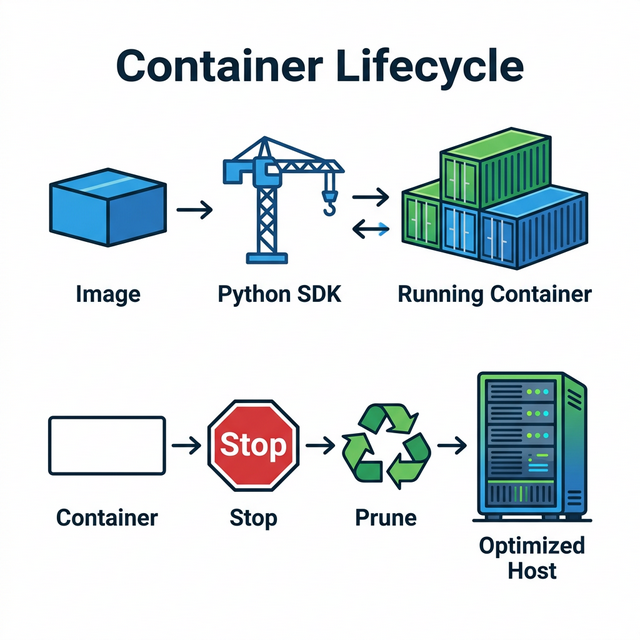
Docker Lifecycle — From Dockerfile to
Image to running Containers
Container
Abstraction and Lifecycle Orchestration
Containerization provides a standardized, isolated execution
environment for microservices. In an automated DevOps pipeline, the
capacity to programmatically manage these containers is essential for
maintaining operational velocity and resource efficiency.
Operational Context:
While manual CLI interaction is standard for localized development,
Python-driven orchestration enables: - Dynamic Workload
Scaling: Programmatically launching or terminating containers
based on real-time application demand. - Automated Image
Auditing: Scanning local image registries for untagged or
vulnerable layers and enforcing cleanup policies. - Service
Dependency Management: Ensuring that sidecar containers (e.g.,
logging agents, database proxies) are initialized and healthy before the
main application logic executes.
Utilizing the Docker SDK for Python allows SREs to build self-healing
infrastructure that automatically recovers from container failures or
resource exhaustion.
Programmatic
Interaction via Docker SDK
The official Docker library for Python provides a technical interface
to the Docker Engine API, enabling full control over containers, images,
and networks.
Code Example: Running a
Container
import docker# Initializing client from environment configurationclient = docker.from_env()# Executing a detached container instanceprint("STATUS: Dispatching Nginx container...")service_node = client.containers.run("nginx", detach=True, name="edge_proxy_01")print(f"VERIFIED: Node_ID: {service_node.id[:12]} in 'Running' state.")# Enumerating active container fleetfor node in client.containers.list():print(f"ACTIVE_REF: {node.name} | IMG: {node.image.tags}")
### Syntax Breakdown: `client.containers.run()`
| Part | Name | What it Does |
|------|------|-------------|
| `client` | Docker Client | Connects to the local Docker engine. |
| `.run()` | Method | The most powerful command; it pulls, creates, and starts a container. |
| `"nginx"` | Image Name | The software image to download and run. |
| `detach=True` | Parameter | Equivalent to `-d` in CLI; runs the container in the background. |
| `name` | Parameter | Assigns a human-readable name to the container instead of a random ID. |
***
## Infrastructure Hygiene: Resource Pruning and Optimization
Container hosts require regular maintenance to prevent disk exhaustion caused by dangling images and orphan volumes. Python can be used to enforce these hygiene standards.
### Systematic Resource Pruning
```python
client = docker.from_env()
# Removing all non-running container artifacts
print("LOG: Initiating container prune sequence...")
pruned_data = client.containers.prune()
print(f"STATUS: Purged {len(pruned_data['ContainersDeleted'] or [])} inactive containers.")
# Auditing and removing untagged image layers
for img in client.images.list():
if not img.tags:
print(f"LOG: Deleting dangling image layer: {img.id}")
client.images.remove(img.id, force=True)
### Syntax Breakdown: `client.containers.prune()`
| Part | Name | What it Does |
|------|------|-------------|
| `client` | Docker Client | Connects to the local Docker engine. |
| `.containers` | Object | Represents the container management API. |
| `.prune()` | Method | Removes all stopped containers. Returns a dictionary with details of removed items. |
***
## Technical Project: Autonomous Container Lifecycle Monitor
Develop a maintenance utility that audits the operational duration of running containers, terminating any instances that exceed a 24-hour Time-To-Live (TTL) baseline.
```python
# ============================================
# PROJECT: Autonomous Lifecycle Auditor
# ============================================
import docker
from datetime import datetime, timezone
import dateutil.parser
# Initializing Docker interface
client = docker.from_env()
def execute_lifecycle_audit():
current_time = datetime.now(timezone.utc)
print(f"AUDIT_LOG: Sequence initiated at {current_time}")
for node in client.containers.list():
# Parsing ISO-format creation timestamp
creation_ref = dateutil.parser.isoparse(node.attrs['Created'])
operational_age = current_time - creation_ref
# Threshold: 24-hour operational limit (86,400 seconds)
if operational_age.total_seconds() > 86400:
print(f"ALERT: Node {node.name} exceeding TTL ({operational_age.days}d). Triggering termination...")
node.stop()
print(f"STATUS: {node.name} decommissioned.")
else:
print(f"STATUS: {node.name} compliant (Age: {operational_age.seconds // 3600}h).")
if __name__ == "__main__":
execute_lifecycle_audit()
Assignments
Assignment 1: Exposed
Service Port Monitor
Implement a script that enumerates all running containers.
Identify and log the names of any containers exposing Port 80 or
443.
Assignment 2: Registry Layer
Audit
Develop a utility that lists all local images and calculates the
cumulative storage footprint in Megabytes (MB).
Calculation: image.attrs[‘Size’] / (1024 1024)*
Assignment 3: Batch
Workload Orchestrator
Construct a script that iterates through a list of images (e.g.,
["redis:alpine", "postgres:latest"]) and attempts to
provision a detached container for each, ensuring successful
initialization.
Knowledge Assessment
Q1. What does docker.from_env() do in
Python- - A) It deletes the environment. - B) It connects to
the Docker engine using the standard settings (sockets/pipes) found on
your machine. - C) It converts Python code into a Dockerfile. - D) It’s
only for Linux.
Q2. In Python, what is the difference between
client.containers.list() and
client.containers.list(all=True)- - A) There is no
difference. - B) list() only shows running containers;
all=True shows stopped containers as well. - C)
list() is faster. - D) all=True downloads new
images.
Q3. Why is ‘Pruning’ important in a Docker
environment- - A) It makes the containers run faster. - B) It
deletes unused images, containers, and volumes to free up disk space. -
C) It encrypts the container data. - D) It’s a way to rename
containers.
Q4. What happens if you try to
client.images.remove() an image that is currently being
used by a container- - A) The container is deleted. - B) Docker
will throw an error (unless you use force=True). - C) The
image is renamed. - D) Python will crash.
Q5. How do you get the detailed metadata (like Creation Time)
for a container object- - A) container.metadata -
B) container.attrs (Attributes) - C)
container.info() - D) print(container)
Technical Evaluation
Preparation
Q1:
“Why would you use Python to manage Docker instead of just using Bash
scripts with ‘docker rm’—
Ideal Answer: > “Python provides better
Error Handling and Data Structures. In
Bash, parsing the output of a docker command (like image sizes or dates)
requires complex grep and awk commands. In
Python, the SDK returns objects or dictionaries where I can easily
access attributes like image.size or
container.status. This makes the code more readable,
maintainable, and robust against API changes.”
Q2:
“Discuss the security concerns of a Python script connected to
docker.sock.”
Ideal Answer: > “The Docker socket
(docker.sock) is essentially the ‘keys to the kingdom’.
Anyone who can send commands to that socket has Root
Privileges on the host. If a Python script is running with
access to that socket, it must be protected carefully. We ensure the
script has minimal permissions, and we never allow untrusted user input
to be passed into Docker SDK commands (like container names or image
tags).”
Q3:
“What is a ‘Sidecar Container’ and how can Python help manage it—
Ideal Answer: > “A sidecar is a secondary
container that runs next to your main application to handle tasks like
logging, proxying, or health checks. Python scripts are often used as
‘Orchestrators’ to ensure that if the main container starts, the sidecar
is also healthy; or to automatically restart the sidecar if it crashes
without disturbing the main application.”
Module Summary
Accomplished
Details
Docker SDK
Installed and configured the Python client for container
management.
Container Lifecycle
Automated the Run, Stop, and Remove cycle of microservices.
Storage Audit
Learned to prune untagged images and stopped containers.
SRE Housekeeping
Built a script to enforce container TTL (Time-To-Live)
policies.
Next: Module 30 — CI/CD Fundamentals for
Pythonistas
Module 30:
CI/CD Automation and Quality Engineering
Engineering
Automated Delivery Pipelines and Quality Gates
Module 30 of 32
Objectives
Module competency requires: - Evaluation of the Continuous
Integration and Continuous Delivery (CI/CD) lifecycle. - Implementation
of automated static analysis utilizing Flake8 and Pylint. - Development
of technical test suites utilizing the Pytest framework. - Engineering
of a programmatic ‘Quality Gate’ to enforce build and deployment
standards.
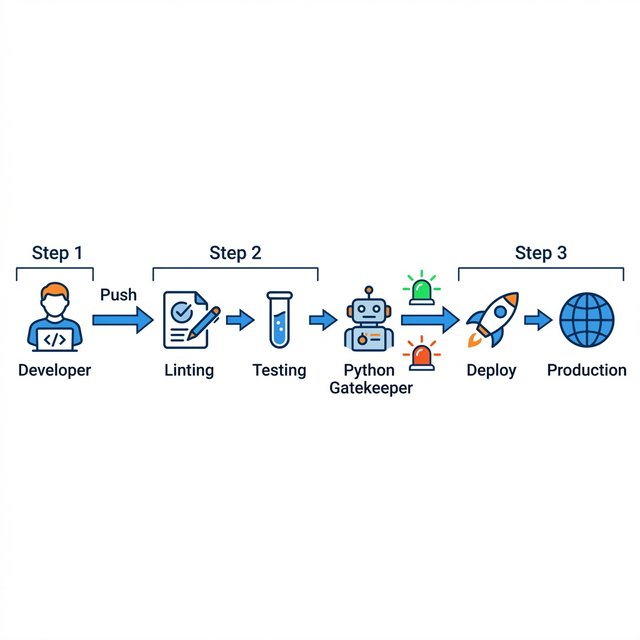
CI/CD Pipeline — Automating Linting,
Testing, and Deployment steps
Automated Quality
Gates & Delivery Pipelines
The transition from manual code verification to automated delivery
pipelines is a hallmark of mature software engineering. CI/CD principles
focus on maintaining a constant state of deployability by enforcing
rigorous automated checks at every stage of the development
lifecycle.
Operational Context:
Continuous Integration (CI): Focuses on the
frequent merging of developer code and the immediate execution of
automated build and test suites to identify regressions.
Continuous Delivery/Deployment (CD): Automates the
transition of verified code artifacts to staging or production
environments.
The Quality Gate: A programmatic hurdle that code
must pass (e.g., zero linting errors, 100% test pass rate) before it can
proceed forward in the pipeline.
Utilizing Python to orchestrate these checks ensures that production
environments are protected from unverified or stylistically inconsistent
code.
Static
Analysis: Enforcing Code Quality Standards
Static analysis (linting) involves the programmatic interrogation of
source code without execution to identify stylistic inconsistencies and
potential logical flaws.
Code Example: Running Flake8
# Installpip install flake8# Run against your entire current folderflake8 .
Syntax Breakdown:
flake8 .
Part
Name
What it Does
flake8
Command
The executable tool that scans your code.
.
Target
Tells the tool to scan the “current directory” (and all
subfolders).
Common Flake8 Codes: - E501: Line too
long (standard is 79 characters). - F401: Module imported
but unused. - E302: Expected 2 blank lines between
functions.
Automated Regression
Testing via Pytest
Unit testing ensures that individual logic components behave as
expected under various input conditions. Automating these tests prevents
regression errors during system refactoring.
Technical
Implementation: Unit Test Assertion
# logic_engine.pydef calculate_aggregation(a, b):"""Core mathematical logic unit."""return a + b# test_logic_engine.pyimport logic_enginedef test_aggregation_consistency():# Utilizing 'assert' for state verificationassert logic_engine.calculate_aggregation(100, 50) ==150assert logic_engine.calculate_aggregation(-10, 10) ==0
Syntax Breakdown:
assert condition
Part
Name
What it Does
assert
Keyword
Built-in Python statement for debugging/testing.
condition
Logic
Any expression that results in True or
False.
==
Operator
Checks for equality.
Continuous Integration (CI) and Continuous Deployment (CD) are the
operational frameworks used to deliver code changes reliably and
frequently.
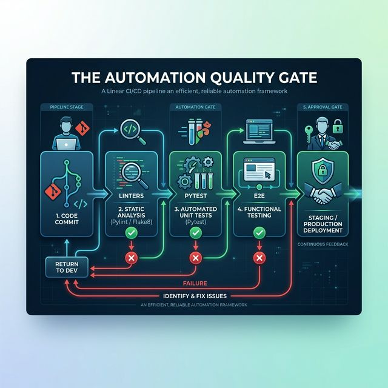
The Automation Quality Gate — Mapping the
Professional CI/CD Pipeline
SRE PROD-Ready Tip
A CI/CD pipeline is only as good as its tests. High coverage in your
pytest suite is the only thing standing between a bug and a
production outage. Never skip the testing gate for ‘urgent’ fixes.
Operational Insight
“CI/CD is the factory floor of software. In DevOps, your Python
scripts are the precision tools that run this factory. If you automate
your checks, you reduce human error. If you reduce human error, you
increase system stability.”
Develop a master orchestration utility that executes the full quality
suite (Static Analysis and Unit Testing). The utility must enforce a
strict completion status, terminating the pipeline if any check
fails.
# ============================================# PROJECT: Automated CI Gatekeeper# ============================================import subprocessimport sysdef execute_quality_pipeline():print("LOG: Commencing Automated CI Pipeline...")# PHASE 1: STATIC ANALYSIS (Linting)print("STATUS: Initiating Static Analysis (Flake8)...") analysis_proc = subprocess.run(["flake8", "."], capture_output=True, text=True)if analysis_proc.returncode !=0:print("CRITICAL: Static Analysis Failure detected.")print(f"REPORT:\n{analysis_proc.stdout}") sys.exit(1) # Terminates the build processprint("STATUS: Static Analysis compliant.")# PHASE 2: UNIT REGRESSION (Testing)print("STATUS: Initiating Unit Test Suite (Pytest)...") test_proc = subprocess.run(["pytest", "."], capture_output=True, text=True)if test_proc.returncode !=0:print("CRITICAL: Regression testing failure detected.")print(f"REPORT:\n{test_proc.stdout}") sys.exit(1)print("STATUS: All quality gates passed. Artifact ready for deployment.")if__name__=="__main__": execute_quality_pipeline()
Assignments
Assignment 1: Code
Consistency Audit
Execute flake8 against an existing script from the
fundamentals track.
Resolve all reported stylistic violations until the tool returns a
clean status.
Assignment 2:
Financial Logic Verification
Revisit the tax calculation logic developed in Module 13.
Develop a corresponding test_finance.py file that
validates various input ranges utilizing Pytest.
Assignment 3:
Dependency Integrity Guard
Implement a script that audits requirements.txt for the
presence of specific, mission-critical libraries (e.g.,
requests, boto3).
If missing, trigger a non-zero exit status to block the imaginary
pipeline.
Knowledge Assessment
Q1. What does the “CI” in CI/CD stand for- - A) Code
Integration - B) Continuous Integration - C) Cloud Installation - D)
Computer Instruction
Q2. What is a ‘Linter’- - A) A tool that deletes old
code. - B) A tool that analyzes source code to flag programming errors,
bugs, stylistic errors, and suspicious constructs. - C) a tool that
speeds up Python. - D) It’s part of the Linux kernel.
Q3. Why is sys.exit(1) used in a pipeline
script- - A) To restart the computer. - B) To signal to the
system (like Jenkins or GitHub Actions) that the process has FAILED. -
C) To close the text editor. - D) It’s a way to save the file.
Q4. Where do you usually put files starting with
test_- - A) In the System32 folder. -
B) In the project root or a tests/ folder. - C) In the
Trash. - D) Only on the server.
Q5. What is the benefit of automating your tests- -
A) You don’t have to write code anymore. - B) You can catch bugs
instantly every time you make a change, preventing “Regressions.” - C)
It makes the UI look better. - D) It reduces the file size.
Technical Evaluation
Preparation
Q1: “What is
‘Code Coverage’ and why does it matter—
Ideal Answer: > “‘Code Coverage’ is a metric that
tells you what percentage of your source code is actually executed by
your automated tests. If you have 100 lines of code but your tests only
touch 10 lines, your coverage is 10%. High coverage doesn’t guarantee
quality, but low coverage definitely means large parts of your app are
untested and dangerous to change.”
Q2: “Discuss
the ‘Shift Left’ philosophy in DevOps.”
Ideal Answer: > “‘Shift Left’ means moving
testing and quality checks to the ‘Left’ (earlier) in the development
lifecycle. Instead of waiting for a manual QA team to find bugs at the
end of the month, we run Linters and Unit Tests the moment the developer
writes the code. This makes bugs much cheaper and faster to fix.”
Q3:
“What is the difference between a Unit Test and an Integration
Test—
Ideal Answer: > “A Unit Test
tests a single, isolated function or class (like testing a calculator’s
‘add’ button). An Integration Test tests how multiple
parts of the system work together (like testing if the Login button
correctly talks to the Database). Unit tests are fast and frequent;
Integration tests are slower but more realistic.”
Module Summary
Accomplished
Details
CI/CD Basics
Learned the philosophy of automated quality control.
Code Linting
Used Flake8 to enforce professional Python style
guides.
Unit Testing
Mastered Pytest and the assert keyword for
logic verification.
Gatekeeper Logic
Built a pipeline script (sys.exit) to protect
production environments.
Module 31:
Infrastructure Observability and Alerting
Mastering
SRE Principles and Programmatic Health Monitoring
Module 31 of 32
Objectives
Module competency requires: - Discrimination between Monitoring
(Post-mortem) and Observability (Diagnostic). - Implementation of custom
metric ingestion via Prometheus Pushgateway. - Orchestration of
automated incident notification utilizing RESTful Webhooks
(Slack/Teams). - Development of a Threshold-Based Infrastructure Health
Monitor.
Monitoring & Alerting — Pushing
metrics to Prometheus and alerting via Slack
SRE
Observability: SLIs, SLOs, and Alerting Strategies
The objective of high-availability infrastructure is not merely to
monitor for failures, but to provide deep observability into systemic
health. Site Reliability Engineering (SRE) utilizes specific metrics to
ensure service stability.
Core Concepts:
Service Level Indicators (SLIs): Quantitative
measures of a service’s performance (e.g., latency, error rate,
throughput).
Service Level Objectives (SLOs): Target values or
ranges for SLIs (e.g., “99.9% of requests must resolve in
<200ms”).
Monitoring: The collection and visualization of
metrics to provide a real-time status of the infrastructure.
Alerting: The programmatic trigger that notifies
engineering teams when an SLO is at risk of violation.
Utilizing Python to integrate these components allows for the
creation of self-documenting, audit-compliant monitoring stacks that
reduce manual oversight.
Custom Metric Ingestion
via Prometheus
Prometheus is a time-series database designed for high-dimensional
monitoring. Python utilizes the prometheus_client to push
metrics from short-lived automation scripts to the Prometheus
ecosystem.
Technical
Implementation: Metric Push Sequence
from prometheus_client import CollectorRegistry, Gauge, push_to_gateway# Initializing metric registryregistry = CollectorRegistry()# Defining a Gauge metric (variable numerical value)storage_metric = Gauge('infra_disk_utilization_pct', 'Percentage of storage consumed', registry=registry)# Setting logical state (92.5%)storage_metric.set(92.5)# Pushing metric payload to Prometheus Pushgateway# push_to_gateway('monitor-node.local:9091', job='storage_audit_task', registry=registry)print("STATUS: Metric payload successfully committed to Prometheus.")
***
## Incident Notification utilizing RESTful Webhooks
Webhooks enable programmatic integration with collaboration platforms (Slack, MS Teams) via standard HTTP POST operations.
### Technical Implementation: Slack Alert Dispatcher
```python
import requests
import json
AUDIT_WEBHOOK = "https://hooks.slack.com/services/SECURE/TOKEN/REFERENCE"
def dispatch_incident_alert(critical_message):
data_payload = {"text": f"CRITICAL INFRA ALERT: {critical_message}"}
response = requests.post(AUDIT_WEBHOOK, json=data_payload)
if response.status_code == 200:
print("LOG: Incident alert successfully dispatched to secondary channel.")
else:
print(f"ERROR: Notification failure. Response Code: {response.status_code}")
# --- Trigger Test ---
# dispatch_incident_alert("Node_ID_404 failure: High CPU Utilization on Prod_Fleet_A")
***
## Technical Project: Threshold-Based Infrastructure Health Monitor
Develop an SRE bridge utility that interrogated local subsystem health (Disk Utilization). If the metric exceeds the critical 90% threshold, the utility must simultaneously dispatch a high-priority incident alert and update the Prometheus telemetry registry.
```python
# ============================================
# PROJECT: Threshold-Based Health Auditor
# ============================================
import shutil
import requests
from prometheus_client import CollectorRegistry, Gauge, push_to_gateway
# Configuration Context
UTILIZATION_THRESHOLD = 90
INCIDENT_WEBHOOK = "https://mock-incidents.slack.local/v1"
def execute_health_interrogation():
print("LOG: Commencing subsystem health interrogation...")
registry = CollectorRegistry()
metric_gauge = Gauge('server_storage_utilization', 'Usage Percentage', registry=registry)
# Telemetry Acquisition
volume_total, volume_used, volume_free = shutil.disk_usage("/")
utilization_pct = (volume_used / volume_total) * 100
print(f"METRIC: Storage Utilization Index: {utilization_pct:.2f}%")
metric_gauge.set(utilization_pct)
# Task 1: Telemetry Persistence (Prometheus)
# push_to_gateway('monitor.srv:9091', job='disk_health_audit', registry=registry)
# Task 2: Incident Escalation
if utilization_pct > UTILIZATION_THRESHOLD:
print("ALERT: Utilization threshold violation detected.")
alert_body = f"STORAGE CRITICAL: Subsystem / reported {utilization_pct:.2f}% utilization."
# requests.post(INCIDENT_WEBHOOK, json={"text": alert_body})
else:
print("STATUS: Subsystem health compliant with SLO.")
if __name__ == "__main__":
execute_health_interrogation()
Assignments
Assignment 1: Memory Load
Interrogator
Utilize the psutil library to capture current systemic
RAM utilization.
Output the metric as a percentage to the standard interface.
Assignment 2:
Multi-Channel Fault Notification
Develop a script that dispatches a priority message to two
independent integration endpoints (e.g., Log and Webhook).
Implement basic exception handling to ensure one failure does not
inhibit the other.
Assignment 3:
Synthetic Availability Check
Implement a script to perform a periodic ‘Ping’ (GET request) on a
target service endpoint.
Log a successful health check if the response status is 200.
Knowledge Assessment
Q1. What is the difference between a Gauge and a Counter in
Prometheus- - A) A Gauge only counts up. - B) A Gauge can go up
and down (like temperature); a Counter only ever goes up (like number of
requests). - C) A Gauge is more expensive. - D) Only Gauges work in
Python.
Q2. What is a ‘Webhook URL’- - A) A link to a
website. - B) A special URL that accepts a POST request to trigger an
action (like sending a chat message). - C) A way to hack a server. - D)
It’s part of the Python core.
Q3. Why do we push metrics to a ‘Pushgateway’ instead of
directly to Prometheus- - A) It’s faster. - B) Prometheus
usually “Pulls” data from long-running servers, but “Short-lived”
scripts need to “Push” their data before they finish. - C) It’s more
secure. - D) It’s the only way to send data from Windows.
Q4. What HTTP method is used by almost all chat
Webhooks- - A) GET - B) POST - C) DELETE - D) PUT
Q5. In SRE, what is a ‘False Positive’ alert- - A)
An alert that was missed. - B) An alert that triggered when there was
actually no problem (The “Boy Who Cried Wolf”). - C) A successful
script. - D) A type of Python error.
Technical Evaluation
Preparation
Q1: “What is
‘Alert Fatigue’ and how do you prevent it—
Ideal Answer: > “‘Alert Fatigue’ happens when a
team is overwhelmed by too many alerts, causing them to ignore or miss
critical ones. We prevent it by setting meaningful thresholds (don’t
alert at 80% if 80% is normal) and ensuring that alerts are
‘Actionable’. If an alert doesn’t require a human to fix something
immediately, it should be a ‘Notification’ or a ‘Log’, not an
‘Alert’.”
Q2:
“Discuss the importance of ‘Observability’ vs simple ‘Monitoring’.”
Ideal Answer: > “Monitoring tells you when
something is wrong (The ‘What’). Observability allows you to understand
why it’s wrong (The ‘Why’). Monitoring is about external
metrics (CPU/RAM). Observability includes Logs, Traces, and Metrics that
allow you to follow a single request as it passes through the whole
system so you can find the root cause of a silent failure.”
Q3:
“How would you monitor a system that has no internet access—
Ideal Answer: > “If there’s no internet, we
cannot use cloud-based Webhooks. We would use an internal monitoring
system like an On-Premise Prometheus server and an
SMTP Relay for internal emails. The Python script would
push data to a local server on the private network, and any alerts would
be handled by internal alerting rules in the local Monitoring
stack.”
Module 32:
Full-Stack DevOps Engineering Capstone
Integrating
the E2E Lifecycle: Orchestration, Delivery, and Observability
Module 32 of 32
Objectives
Module competency requires: - Deployment of a containerized
application stack to a cloud environment. - Automation of
post-deployment verification and integrated health checks. -
Orchestration of automated incident escalation and telemetry reporting.
- Mastery of the “Full-Stack Orchestration” architecture and resilience
engineering.
Full Stack DevOps Graduation — The path
from Core Python to Cloud Orchestrator
Full-Stack
Orchestration: The Unified Lifecycle
Production-grade systems require the seamless integration of
provisioning, deployment, verification, and monitoring. This cumulative
capstone synthesizes all prior modules into a single, unified
orchestration engine that manages the entire resource lifecycle.
Operational Lifecycle
Scenario:
The Build (CI): Python interacts with the Docker
SDK to build a verified container image (Module 29).
The Provisioning (IaC): Boto3 dispatches commands
to the AWS control plane to initialize the target compute resource
(Module 28).
The Verification (Quality Gate): A Pythonic smoke
test validates the network reachability and service health of the
deployment (Module 30).
The Observability (SRE): A monitoring loop
continuously interrogates the service endpoint, updating Prometheus and
alerting Slack upon detect degradation (Module 31).
This end-to-end framework ensures that human intervention is
minimized and operational consistency is guaranteed.
Implement a script that aggregates counts from dispersed
inventories: AWS S3 Buckets and local Docker Images.
Output a unified system report as a structured dictionary.
Assignment 2:
Automated Rollback Mechanism
Develop a utility that provisions a containerized service and
immediately executes an HTTP health check.
If the health check fails (status != 200), programmatically
terminate the container and dispatch a Slack incident alert.
Assignment 3: Systemic
Health Telemetry
Construct a script to collect kernel information (Fabric), storage
utilization (shutil), and instance metadata (Boto3).
Collate the results into a programmatic report for audit
logging.
Cumulative Knowledge
Assessment
Q1. What is the main goal of DevOps Automation- - A)
To replace all humans. - B) To create a fast, reliable, and repeatable
path from code-change to live-deployment. - C) To make Python files
larger. - D) To ignore error messages.
Q2. In our Capstone, why do we use
sys.exit(1)- - A) To save power. - B) To signal to
an external orchestrator (like Jenkins) that the deployment has failed.
- C) To close the Docker app. - D) It’s a way to delete files.
Q3. What is a ‘Smoke Test’- - A) Testing if a
computer is overheating. - B) A quick, initial test to see if the main
features of the system work after a deployment. - C) Testing the
password. - D) It’s part of the Slack API.
Q4. Why is ‘Rollback’ capability essential in
DevOps- - A) It’s not essential. - B) So that if a new
deployment is broken, we can instantly return to the last known working
version to minimize downtime. - C) To save money on cloud bills. - D) To
make the code look better.
Q5. This was Module 32. What is the ‘Secret Sauce’ of a
Senior DevOps Engineer- - A) Knowing every single library by
heart. - B) Automating the boring stuff, Handling
Errors gracefully, and never trusting a “Manual” process. - C) Writing
code without comments. - D) Using only the most expensive cloud
tools.
Technical Evaluation
Preparation
Q1:
“Describe a time an automated deployment failed. How did you handle
it—
Ideal Answer: > “I describe the Root
Cause clearly. For example: ‘A deployment failed because an
environment variable was missing.’ Then, I focus on the Process
Improvement: ‘I didn’t just fix the variable; I added a
pre-deployment check to the Python script to verify all variables exist
before the deployment starts, preventing that failure from ever
happening again.’”
Q2: “How do
you decide what should be automated first—
Ideal Answer: > “I use the ‘Pain
vs. Effort’ matrix. I automate tasks that are: 1) Frequent
(Daily), 2) Error-prone when done manually (Passords/Configs), and 3)
Time-consuming. I start with ‘Low Hanging Fruit’—automation that is easy
to write but saves the team hours of work every week.”
Q3:
“What is ‘Infinite Loop’ risk in automation and how do you mitigate
it—
Ideal Answer: > “An infinite loop in automation
(e.g., a script that keeps trying to restart a failing server) can cause
a massive cloud bill or a system crash. I mitigate this with
‘Circuit Breakers’ and ‘Max Retries’.
My scripts always have a limit (e.g., ‘Try 3 times, then quit and alert
a human’). I also use ‘Timeouts’ so a script doesn’t hang forever
waiting for a server that is dead.”
Module Summary
Accomplished
Details
Full-Stack Automation
Integrated Boto3, Docker, and Monitoring into a single E2E
pipeline.
Smoke Testing
Mastered health check verification for cloud deployments.
Resilience Logic
Learned to implement error handling and alert gatekeeping.
SRE Graduation
Completed the transition from a coder to an Automation
Architect.
Advanced Professional
Designation
Completion of the DevOps and Cloud track signifies a transition from
core software development to Infrastructure Engineering and
Orchestration.
Core Philosophy:
Operational excellence is achieved through the elimination of manual,
non-repeatable processes. A mature infrastructure is one that is
self-healing, audit-compliant, and fully represented as code.
The objective of automation is not to eliminate the human
element, but to empower engineers to focus on high-scale architecture
rather than low-level maintenance.
End of Training Manual. Implementation complete.
Operational Insight
“The DevOps Capstone is the final bridge to professional engineering.
It’s the realization of the full E2E lifecycle.”
Python
IT Automation: Professional Skills & Agile Roadmap
Your
Journey from zero to IT Automation Professional
Part 1: Your Professional
Skills Map
Based on the 33 modules you completed, you now
possess a professional-grade toolkit for IT Operations and
Automation.
1. The Coding Engine (Core
Python)
Logical Architecture: Professional proficiency in
complex branching (if/elif/else) and loops
(for/while/nested).
Data Processing: Expertise in Lists, Tuples,
Dictionaries, and Sets for high-speed data manipulation.
Functional Excellence: Advanced knowledge of Scope,
Lambdas, and the DRY (Don’t Repeat Yourself) principle.
2. The Software Architect (OOP)
Component Design: Ability to build reusable
blueprints using Classes and Objects.
Four Pillars of OOP: Professional mastery of
Inheritance, Encapsulation, Abstraction, and
Polymorphism.
Scalability: Building “Universal” processors that
can handle any data type (Duck Typing).
3. The
Infrastructure Orchestrator (IT toolkit)
Remote Hands (SSH): Automating commands on 100+
servers simultaneously using Paramiko/Netmiko.
The API Bridge: Connecting Python to Jira,
ServiceNow, or GitHub via REST APIs and JSON.
Cloud Power (AWS/Azure): Managing virtual data
centers with Boto3 and Infrastructure as Code.
RPA (Bot) Mastery: Controlling legacy apps and
browsers via Selenium and PyAutoGUI.
DevOps & Cloud (Advanced): Mastering
Infrastructure as Code with Fabric/Ansible,
Docker SDK, and advanced Boto3.
SRE Excellence: Implementing CI/CD
Pipelines and Automated Monitoring with
Python.
Reliability Engineering: Implementing professional
Logging, Exception Handling, and
OS-level Scheduling.
Part 2: 5
Real-World Projects (Agile Workflow)
Professional developers don’t just “code”—they follow Agile
Sprints. Here are 5 projects to build your portfolio.
Project 1: The
“Self-Healing” Infrastructure Bot
Objective: A bot that detects a web-server failure,
attempts a restart via SSH, and logs a ticket if it still fails. -
Sprint 1 (Basic): Script logs into a remote server and
runs systemctl status nginx. - Sprint 2
(Logic): If status is ‘inactive’, run
systemctl restart nginx. - Sprint 3
(Integration): If restart fails, call the Jira API to open a
‘P1 Critical’ ticket and log the error locally.
Project 2: The
“Multi-Cloud” Cost Auditor
Objective: A scheduled script that checks AWS and
Azure for running instances without “Project” tags and shuts them down
to save money. - Sprint 1 (Discovery): Use Boto3 to
list all running EC2 instances and their tags. - Sprint 2
(Compliance): Add logic to flag instances missing the ‘Project’
or ‘Owner’ tags. - Sprint 3 (Automation): Schedule the
script (Cron) to run every Friday at 6 PM and automatically stop
non-compliant servers.
Project 3:
The Legacy Portal Synchronization Bot (RPA)
Objective: A bot that logs into an old web portal
(No API), downloads a CSV report, and uploads the data into a modern
database. - Sprint 1 (Navigation): Use Selenium to
handle the login and navigation to the ‘Export’ page. - Sprint 2
(Data handling): Use the csv module to clean and
filter the downloaded data. - Sprint 3 (Sync): Use
requests to send the cleaned data to a modern REST API.
Project 4: The
Mass Patch-Management Orchestrator
Objective: Pushing a security configuration file to
50 Linux servers and verifying the change. - Sprint 1
(Connectivity): Read a CSV list of 50 IPs and verify SSH
connectivity. - Sprint 2 (Transfer): Use SFTP to push
security.conf to a temporary directory on all servers. -
Sprint 3 (Audit): Run a remote command to verify the
file checksum and log the “Success” for every server.
Project 5:
The “Intelligent” IT Service Desk Dispatcher
Objective: A script that listens to a Slack
channel/API, analyzes the message, and assigns it to the right team. -
Sprint 1 (Intake): Fetch the last 10 messages from a
“Help-Desk” API. - Sprint 2 (Classifier): Use string
methods (split, in) to find keywords like
“Password”, “Server”, or “Email”. - Sprint 3
(Dispatch): Route based on keywords: “Password” -> IT
Support, “Server” -> DevOps. Update the ticket status via API.
Project
6: Automated Server Provisioning (Infrastructure as Code)
Objective: A script using Boto3 to automatically
launch a new web server in AWS and install Apache when a Jira ticket is
approved. - Sprint 1 (Cloud Creation): Write a function
launch_ec2() with Boto3. - Sprint 2
(Bootstrapping): Use the UserData parameter to
pass a bash script that installs Apache HTTP Server on boot. -
Sprint 3 (Ticket Trigger): Poll the Jira API for
tickets with the “Approve Server” tag, run the script, and comment the
new server’s IP back to Jira.
Project 7: Configuration
Drift Detector
Objective: Ensure 20 database servers all have the
exact same my.cnf configuration file, alerting a Slack
channel if one differs. - Sprint 1 (Baseline): Read the
“gold standard” my.cnf file from a local directory or Git
repo. - Sprint 2 (Collection): SSH into the 20 servers
simultaneously and download their config file via SFTP. - Sprint
3 (Comparison & Alerting): Use Python’s
difflib or manual comparison. If a mismatch is found, send
a POST request to a Slack Webhook.
Project 8: Dynamic
Cloud Billing Alerter
Objective: Prevent surprise cloud bills by
summarizing daily AWS spend and sending an SMS alert if it spikes. -
Sprint 1 (Cost Explorer API): Call the AWS Cost
Explorer API to get the current month’s amortized spend. -
Sprint 2 (Threshold Logic): Calculate the daily
average. If today’s spend is >150% of the daily average, trigger the
alert flag. - Sprint 3 (SMS Integration): Use the
Twilio API or AWS SNS to text the Admin team immediately with the cost
details.
Project 9:
Automated Log Rotation & Log Archiving
Objective: Archiving old application logs from
production servers to cheaper, long-term cloud storage (S3) to free up
local disk space. - Sprint 1 (Filtering): Create a
script that finds all .log files older than 30 days in
/var/log/myapp/. - Sprint 2 (Compression):
Use Python’s tarfile or gzip module to
compress these massive text files. - Sprint 3 (Cloud
Upload): Use Boto3 to upload the .tar.gz archive
to an AWS S3 bucket, verify successful upload, and delete the local
file.
Project 10: CI/CD
Pipeline Build Script
Objective: A local script that mimics a
Jenkins/GitHub Actions pipeline for a Python application. -
Sprint 1 (Linting): The script first runs
flake8 or pylint against the project. If it
fails, halt. - Sprint 2 (Unit Testing): Run
pytest. If any tests fail, halt and output the logs. -
Sprint 3 (Packaging & Deployment): If tests pass,
zip the code and SCP it to a Staging server, automatically restarting
the service there.
Final Advice
GitHub Documentation: Push every project to a
public repository.
Standard Documentation: Use
README.txt files to explain how to run your
scripts.
Continuous Practice: The best way to learn IT Ops
is to test code in a sandbox environment and automate recovery
procedures.
Python Training Framework | Professional Certification Path |
2026